Messaging and Streaming
Chapter 10: Messaging and Streaming
Comprehensive Distributed Systems Notes
Chapter objective: Understand asynchronous communication and event-driven systems from first principles, then develop the ability to design, operate, and troubleshoot reliable messaging and streaming architectures at production scale.
Audience: Advanced undergraduate / graduate distributed-systems learners, software engineers, backend engineers, data-platform engineers, and system-design interview candidates.
Scope note: Product behavior changes across releases and configurations. Product-specific statements below describe architectural defaults and commonly used capabilities, not universal guarantees. Verify exact limits, defaults, and feature support against the version deployed.
How to use this chapter
This chapter deliberately separates four questions that are often confused:
- Transport: How does a producer get a record to a broker or queue?
- Delivery: When can a consumer receive a record, and can it receive it more than once?
- Processing: How does a consumer safely update its own state?
- Business effect: How does the whole workflow avoid losing or duplicating a real-world action?
A broker can durably store a message without guaranteeing that a payment is charged exactly once. A stream processor can recover operator state exactly once while an external sink still duplicates writes. A queue can distribute jobs without retaining an indefinitely replayable history. These boundaries are the foundation of reliable design.
Use the diagrams as architecture aids, not as substitutes for the
accompanying explanations. The diagrams are embedded below as relative
SVG assets in the diagrams/ folder.
Table of contents
- 1. Introduction to Messaging and Streaming
- 2. Message Queues vs Distributed Logs
- 3. Messaging Delivery Semantics
- 4. Kafka Architecture and Internals
- 5. Kafka Performance and Capacity Planning
- 6. Pub/Sub Architecture
- 7. RabbitMQ
- 8. Apache Pulsar
- 9. Amazon Simple Queue Service (SQS)
- 10. Ordering Guarantees
- 11. Backpressure and Flow Control
- 12. Dead-Letter Queues and Retry Architecture
- 13. Event-Driven Architecture
- 14. Event Sourcing
- 15. CQRS
- 16. Stream Processing Fundamentals
- 17. Apache Flink
- 18. Spark Structured Streaming
- 19. Windowing in Stream Processing
- 20. Event Time, Processing Time, and Watermarks
- 21. Change Data Capture (CDC)
- 22. Schema Evolution and Message Contracts
- 23. Messaging Reliability and Operational Observability
- 24. End-to-End Real-World Architecture Case Studies
- 25. Quantitative Reasoning and Worked Examples
- 26. Architecture Design Exercises
- 27. Important Conceptual Distinctions
- 28. Interview Preparation
- 29. Common Messaging and Streaming Design Mistakes
- 30. Final Summary and Revision Notes
- 31. SVG Diagram Planning
1. Introduction to Messaging and Streaming
1.1 What is messaging?
Messaging is a communication style in which one component sends a discrete unit of information to another component, either directly or through an intermediary. The information may represent a command (“resize this image”), a fact (“order 814 was placed”), or a unit of work (“generate invoice 814”).
A message is the transport envelope. It may contain
a payload, headers, key, timestamp, correlation identifier, content
type, schema version, delivery metadata, and tracing context. An
event is a statement that something has happened. An
event is usually immutable in meaning: PaymentCaptured
records a completed fact, not an instruction to capture a payment.
A producer creates and sends messages. A consumer receives and processes them. A broker accepts, routes, stores, and delivers messages. A topic commonly represents a named stream or category. A queue commonly represents work awaiting consumption. A subscription describes how a consumer or consumer group receives records from a topic.
Messaging allows components to make progress without requiring the sender to wait for the receiver to finish. The sender’s immediate responsibility can end at a durable handoff, while downstream services continue independently.
1.2 Synchronous vs asynchronous communication
In synchronous request-response communication, caller A sends a request to service B and waits for a response. This is appropriate when the caller needs an immediate answer, such as checking whether a user is authorized to perform an operation. It also means the caller’s latency and availability depend on B and often on every dependency in B’s call chain.
Suppose a checkout request synchronously calls inventory, payment, shipping, fraud, and notification services. Even if each dependency is individually reliable, the composite operation has more failure opportunities. A timeout in a non-critical email provider can delay the checkout response. A slow analytics dependency can consume request threads. A retry at each layer may multiply load.
For a simple chain with independent service availability , the approximate availability of the entire chain is:
If five required dependencies each have availability , then:
This simplified model assumes independence and equal importance. Real failures are correlated, and fallbacks alter the result. Its lesson is that adding synchronous dependencies can reduce end-to-end availability.
Asynchronous communication changes the dependency graph. The order
service persists a pending order and an OrderCreated event,
then returns an accepted/pending response. A broker retains the event.
Inventory, payment, fraud, analytics, and notification consumers process
it independently. If analytics is temporarily unavailable, checkout can
still accept the order, provided the business rules do not require an
immediate analytics decision.
Asynchronous does not mean no waiting anywhere. The producer may wait for broker acknowledgment, the consumer may wait for dependencies, and the customer may see a pending state. The important change is that the producer does not hold an entire synchronous call chain open.
Request-response, command, and event
| Interaction | Meaning | Typical answer | Example |
|---|---|---|---|
| Request-response | Ask another component for information or a result | Response correlated to request | GetAvailableSeats |
| Command | Ask a component to attempt an action | Accepted/rejected/result | ReserveSeat |
| Event | Announce a fact that has already occurred | Usually no direct response | SeatReserved |
| Work item | Assign a unit of work to a worker pool | Acknowledgment/result state | GenerateThumbnail |
Do not model a command as an event. ChargeCard expresses
intent and may fail. CardCharged is a fact and should only
be published after the charge has succeeded.
1.3 Why messaging is useful
Messaging is valuable when a system needs one or more of the following:
- Temporal decoupling: The consumer can be temporarily unavailable while messages accumulate, subject to retention and capacity.
- Load leveling: A broker absorbs bursts and lets consumers process at a sustainable rate.
- Fan-out: Several independent consumers react to the same event.
- Replay: A retained log lets a consumer rebuild state or reprocess history.
- Failure isolation: One downstream consumer can retry without forcing the producer to repeat the whole operation.
- Independent scaling: Producers, brokers, and consumers can be scaled separately.
- Integration: Systems written in different languages or deployed by different teams can communicate through stable contracts.
Messaging introduces its own costs: broker operations, delivery semantics, schema governance, observability, retries, duplicate processing, ordering constraints, and eventual consistency. It is not automatically simpler or more reliable than direct calls.
1.4 E-commerce order-processing walkthrough
Assume a customer submits order O-814 for two units of
product P-72.
- The order service validates the request and commits a pending order.
- In the same local database transaction, it records an
OrderCreatedevent in an outbox. - An outbox publisher or CDC connector delivers the event to a broker.
- Inventory consumes it and attempts to reserve two units.
- Payment consumes the relevant command or event and authorizes/captures payment according to the payment policy.
- Fraud detection evaluates the order. Depending on risk policy, the order may remain pending review.
- Shipping prepares a shipment only after the required business prerequisites are met.
- Notification sends a confirmation after the order reaches the appropriate state.
- Analytics independently records the lifecycle.
Each consumer owns its local database transaction. The system must define what happens when only some steps succeed. A payment success followed by inventory failure is not solved merely by a broker; it requires a business workflow, often a Saga, reservation, refund, or an alternative inventory policy.
Failure cases and correct interpretation
| Failure | What is known? | Safe response |
|---|---|---|
| Inventory reservation fails | Inventory did not reserve, if failure is definitive | Reject/backorder; do not capture payment unless policy permits |
| Payment request times out | Outcome is unknown; provider may have charged | Query by idempotency key or reconcile before retrying a new charge |
| Order DB commit succeeds but API response is lost | Order may exist even though client saw timeout | Client retries with stable request/idempotency key |
| Broker publish times out | Event may or may not have been accepted | Retry safely using event ID/producer idempotence; outbox publisher tracks delivery |
| Consumer crashes after DB commit but before offset/ack | Side effect happened; message may be redelivered | Consumer deduplicates by event ID or applies idempotent update |
| Notification provider is down | Core order can remain valid | Retry notification independently and expose delayed-notification status if needed |
A timeout is not proof of failure. It means the caller did not learn the outcome before its deadline. This distinction prevents duplicate payments and duplicate orders.
1.5 Messaging and streaming terminology
- Broker: A system that mediates message exchange.
- Queue: A work buffer, often with competing consumers and acknowledgment/deletion semantics.
- Topic: A named category or event stream. Exact semantics vary by product.
- Partition: An independently ordered shard of a log.
- Offset: A position in a partition log.
- Acknowledgment (ack): A protocol signal that a delivery or operation reached a defined stage. It does not necessarily mean a business transaction is complete.
- Consumer lag: The difference between the latest available position and a consumer’s progress, interpreted carefully because offsets may be sparse or compacted.
- Retention: How long or how much data a broker preserves.
- Replay: Re-reading retained records.
- Backpressure: A mechanism that prevents an upstream producer from overwhelming a slower downstream stage.
- Stream processing: Continuous computation over an unbounded or continuously arriving dataset.
Diagram
Filename:
synchronous-vs-asynchronous-communication.svg
- Purpose: Contrast a synchronous service-call chain with broker-mediated asynchronous communication.
- Components and labels: Client, Order Service, Inventory, Payment, Shipping, Analytics, Notification, Broker, durable event, timeout/failure markers.
- Relationships and flow: Synchronous arrows form a dependency chain; asynchronous flow is Order Service → Broker → independent consumer groups.
- Learning objective: Understand temporal decoupling, failure isolation, and the fact that asynchronous workflows expose pending states rather than eliminating work.
- Suggested layout: Two side-by-side panels; left
panel uses a linear call chain with one highlighted slow dependency;
right panel uses a broker in the middle and parallel consumer lanes.
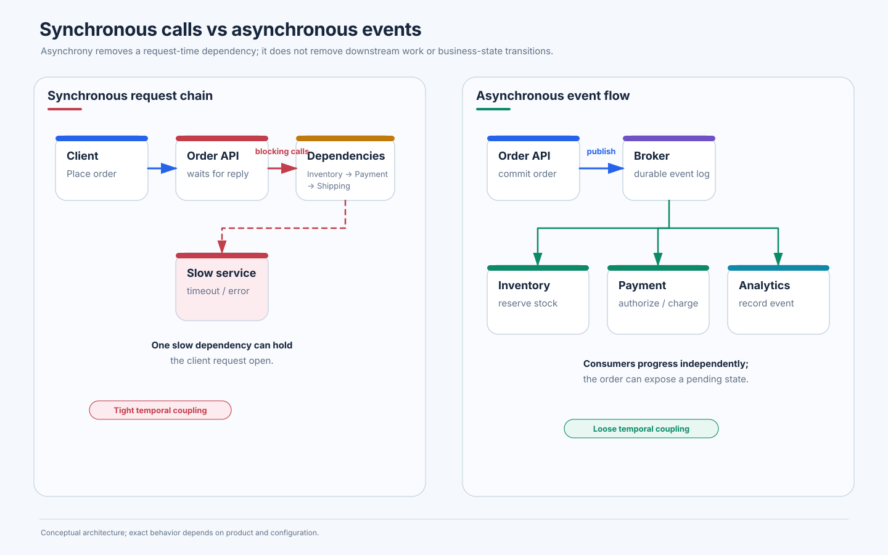
2. Message Queues vs Distributed Logs
2.1 Message queues
A queue is commonly used to distribute work. A producer submits a job; one consumer receives it; after successful processing the consumer acknowledges or deletes it. Multiple consumers compete for available work, so each item is normally processed by one worker in the queue’s delivery model.
For example, a video platform receives 100,000 upload jobs. A queue
stores jobs such as Transcode(video_id=V-900). A pool of
workers receives jobs according to broker dispatch and acknowledgment
rules. If a worker crashes before acknowledgment, the message can be
redelivered. The queue balances work across workers, but a redelivered
job may execute more than once.
Important queue concepts:
- Acknowledgment: A consumer tells the broker that a delivery has reached the acknowledgment boundary.
- Visibility timeout: In systems such as SQS, a received message becomes temporarily invisible to other consumers; it returns if not deleted before timeout.
- Competing consumers: Workers share one logical work queue.
- Queue depth: Number of messages waiting or otherwise outstanding, depending on the metric.
- Redelivery: A message is made available again when the broker concludes that the previous attempt did not complete.
- Poison message: A message that repeatedly fails because of malformed input, a deterministic bug, or an unsupported business state.
- Dead-letter queue (DLQ): A separate destination for messages that exceed retry or delivery policies.
A queue is excellent for jobs that should be distributed among workers: image processing, report generation, email delivery, and background imports.
2.2 Distributed logs
A distributed log is an append-only sequence of records. Records are assigned positions (offsets) within partitions. Consumers track their own progress. A consumer normally does not delete a record after processing it; the record remains according to retention or compaction policy.
This changes the model dramatically. Suppose the orders
topic contains OrderCreated events. Inventory, fraud
detection, analytics, recommendations, and notifications can each read
the same history independently. The analytics group can lag for an hour
while inventory continues. A new reporting consumer can start from an
earlier offset and rebuild its state.
A log provides:
- A durable, ordered record history within each partition.
- Independent consumer positions.
- Replay within the configured retention boundary.
- Multiple consumer groups reading the same records.
- Partition-level parallelism.
- A natural basis for changelogs and stream processing.
A log is not necessarily an eternal event store. Retention may delete old segments; compaction may preserve the latest record per key rather than every historical state transition. A consumer cannot replay data that has expired or been compacted away.
2.3 Queue vs log
| Dimension | Traditional message queue | Distributed log |
|---|---|---|
| Primary purpose | Distribute work | Retain and distribute an ordered record stream |
| Consumption | Competing consumers commonly share messages | Each consumer group tracks its own position |
| Record removal | Ack/delete may remove a message from active queue | Retention/compaction policy removes records |
| Consumer progress | Often implicit in acknowledgment state | Explicit offset/position |
| Replay | Often limited or requires republishing | Natural while records are retained |
| Fan-out | Usually exchange/topic subscriptions or copies | Independent groups read same log |
| Ordering | Queue-specific; concurrency and redelivery may affect completion order | Per partition, with parallel partitions |
| Work distribution | Central use case | Consumer groups can also distribute work |
| Backlog | Queue depth and age | Consumer lag and log retention headroom |
| Typical examples | RabbitMQ queues, SQS | Kafka, Pulsar persistent topics |
These are conceptual tendencies, not rigid product categories. RabbitMQ includes streams; Pulsar supports several subscription modes; Kafka consumer groups can distribute work much like a queue. Compare the semantics actually used, not merely the product label.
2.4 Kafka consumer groups as work distribution
For one Kafka topic with 12 partitions, a consumer group with 3 consumers can own roughly 4 partitions each. Each partition is assigned to only one consumer in a group at a time. A second independent consumer group can read all 12 partitions separately.
Therefore:
- Within one group: Consumers divide the topic’s partitions to parallelize one logical processing workload.
- Across groups: Independent applications each receive their own view of the retained event stream.
This is why Kafka behaves both like a log and, through consumer groups, like a work distribution mechanism.
Diagram
Filename:
message-queue-vs-distributed-log.svg
- Purpose: Compare competing-consumer queues with retained append-only logs.
- Components and labels: Producer, queue, worker A/B/C, append-only log with offsets, consumer group A and group B.
- Relationships and flow: Queue deliveries are distributed among workers; each log consumer group independently reads records from its own offset.
- Learning objective: Understand message deletion/acknowledgment versus consumer-managed progress and replay.
- Suggested layout: Two horizontal panels with
message cards; highlight one delivery per queue message and multiple
independent log readers.
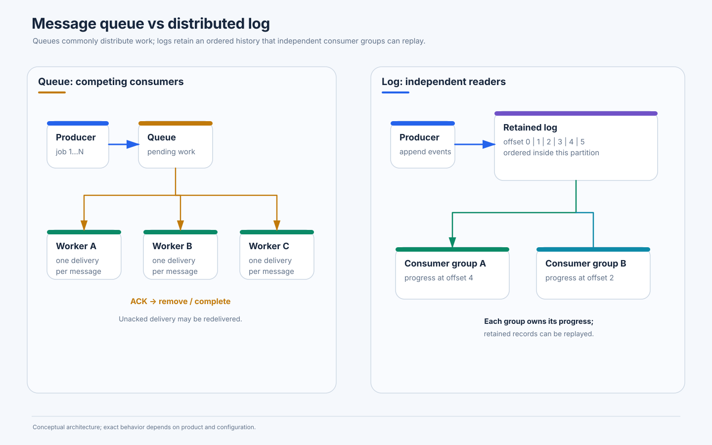
3. Messaging Delivery Semantics
Delivery semantics describe what a transport system promises around message delivery. They do not automatically define how many times a business effect occurs.
3.1 At-most-once
At-most-once means the receiver processes a message zero or one times under the stated protocol. The sender or consumer does not retry after certain failures, so messages may be lost.
A common consumer mistake is to commit an offset before processing. If it commits offset 42 and then crashes before updating the database, the broker considers that position complete and the consumer may never see the record again. This favors no duplicate processing over no loss.
Use at-most-once only when loss is acceptable: sampled telemetry, best-effort metrics, or disposable cache refresh hints. It is usually unsuitable for payments or orders.
3.2 At-least-once
At-least-once means the system retries until it observes acknowledgment or reaches a configured terminal policy. The message should not be silently lost within the guarantee’s scope, but it may be delivered more than once.
Typical flow:
- Consumer receives event
E-42. - Consumer writes a database update.
- Consumer crashes before acknowledgment or offset commit.
- Broker considers the message unacknowledged or the offset incomplete.
- Consumer restarts and receives
E-42again. - Without deduplication, the database update may happen twice.
The usual solution is idempotent processing:
processing the same logical event repeatedly yields the same final state
as processing it once. A deduplication table with a unique
event_id, a conditional update, or an idempotency key can
enforce this.
For payments, prefer a provider-supported idempotency key tied to a durable business operation ID. Do not generate a new idempotency key on every retry.
3.3 Exactly-once: define the boundary
“Exactly once” is incomplete unless the scope is named.
- Exactly-once publication within a broker protocol: The broker does not append duplicates caused by retried sends within the supported producer session/protocol.
- Exactly-once state transition in a stream processor: The operator state and consumed input positions recover consistently.
- Exactly-once database effect: A consumer applies one logical effect to a database despite redelivery, typically by making the write and deduplication record atomic.
- Exactly-once external business effect: A payment provider, email service, or third-party API performs the operation once. This requires cooperation from that system, usually through idempotency or reconciliation.
No generic broker can force an arbitrary external system to perform a side effect exactly once if the external system has no idempotency or queryable transaction protocol.
3.4 Consumer crash walkthrough
Consider a consumer reading
PaymentCaptured(payment_id=P-44):
| Time | Consumer | Database | Broker |
|---|---|---|---|
| T0 | Receives event E-44 | No receipt recorded | Delivery outstanding |
| T1 | Begins transaction | — | Delivery outstanding |
| T2 | Inserts receipt E-44 and ledger row | Commit succeeds | Still unacknowledged |
| T3 | Process crashes | Ledger row exists | May redeliver |
| T4 | Restarts, receives E-44 | Unique event ID already exists | Redelivery |
| T5 | Detects duplicate and skips effect | One ledger effect | Acknowledges |
The receipt and business update must be in one database transaction. If they are separate commits, a crash can leave a receipt without the business effect or vice versa.
3.5 Commit-before-processing vs commit-after-processing
- Commit before processing: A crash after commit can lose the business effect because the event will not be replayed from that position.
- Commit after processing: A crash after the business effect but before commit can cause duplicate processing. This is normally safer when paired with idempotency.
- Atomic inbox pattern: Store an inbox/deduplication row and update business tables in one database transaction; acknowledge only after commit.
- Broker transaction: In a broker-supported consume-transform-produce workflow, output records and consumed offsets may be committed atomically within the broker. This does not automatically include an unrelated database or external API.
3.6 Guarantee comparison
| Guarantee | Loss risk | Duplicate risk | Common technique | Boundary |
|---|---|---|---|---|
| At-most-once | Yes | Usually minimized | Early acknowledgment/commit, no retry | Transport/consumer |
| At-least-once | Reduced within retention/retry policy | Yes | Ack after processing, retry | Delivery |
| Idempotent producer | Broker-side duplicate append from producer retries reduced | Other duplicate causes still possible | Producer identity and sequence tracking | Producer-to-broker |
| Transactional consume-produce | Atomic output + input-position update inside broker | Replay outside scope still possible | Broker transaction | Broker |
| Exactly-once database effect | No duplicate logical DB mutation | Prevented by dedupe/atomic write | Inbox table + unique event ID + DB transaction | One database |
| Exactly-once external effect | Depends on external API’s contract | Prevented only if external side cooperates | Stable idempotency key + reconciliation | End-to-end business workflow |
Diagram
Filename:
message-delivery-semantics.svg
- Purpose: Show at-most-once, at-least-once, and transactional consume-process flows.
- Components and labels: Producer, broker, consumer, acknowledgment/offset commit, database, crash markers, duplicate path.
- Relationships and flow: Compare early acknowledgment, late acknowledgment with redelivery, and atomic broker processing.
- Learning objective: See why retries trade loss risk for duplication risk and why external effects need their own correctness strategy.
- Suggested layout: Three vertical sequence diagrams
with identical producer/broker/consumer lanes and highlighted failure
points.
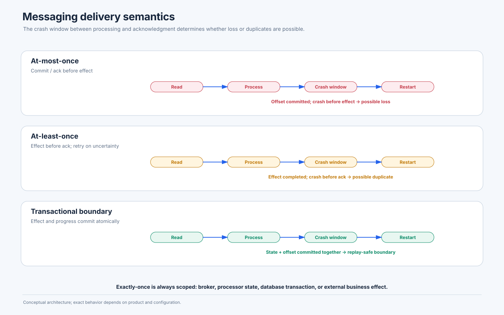
4. Kafka Architecture and Internals
4.1 What Kafka is—and is not
Apache Kafka is a distributed event-streaming platform built around partitioned, replicated logs. Producers append records to topic partitions. Consumers read records by offset. Retention and compaction determine how long records remain available. Replication protects partitions against selected broker failures.
Kafka is not simply a queue in which a message disappears after one consumer acknowledges it. A record normally remains in the log until retention or compaction removes it. Each consumer group has an independent position.
Kafka’s strengths come from a combination of:
- Sequential append-oriented storage.
- Partition-level parallelism.
- Replication and leader-based writes.
- Batching and compression.
- Pull-based consumer fetch.
- Consumer offsets and replay.
- Log retention and compaction.
- Idempotent producers and broker transactions.
Kafka does not automatically solve application-level workflows, database dual writes, cross-service compensation, global ordering, or arbitrary exactly-once external effects.
4.2 Core architecture vocabulary
| Term | Meaning |
|---|---|
| Cluster | Set of Kafka brokers and controller quorum forming one logical deployment |
| Broker | Server that hosts partition replicas and serves client requests |
| Topic | Named category of records |
| Partition | Ordered append-only log within a topic |
| Record | Key, value, timestamp, headers, and associated metadata |
| Offset | Position assigned to a record in one partition |
| Leader replica | Replica that handles writes and normally serves reads for its partition |
| Follower replica | Replica that fetches data from the leader |
| ISR | In-Sync Replica set: replicas sufficiently caught up according to Kafka’s replication rules |
| Controller | KRaft controller process/node responsible for metadata and partition state transitions |
| Consumer group | Set of consumers cooperatively dividing partitions for one logical subscription |
| Group coordinator | Broker-side role coordinating consumer-group membership and offset commits |
| High watermark | Replication visibility boundary used to define committed records for standard reads |
| Log end offset (LEO) | Next offset at the end of a replica’s local log |
A topic can have many partitions. Each partition has one leader at a time and may have multiple follower replicas. Partitions from a topic are distributed across brokers to spread load and storage.
Example cluster
Assume a topic orders.v1 has 12 partitions and
replication factor 3 across four brokers. There are 36 replica copies in
total, distributed across the cluster. A broker can host leaders for
some partitions and followers for others. A leader failure causes a new
eligible replica to be elected, subject to cluster metadata and ISR
state.
The replication factor is not the same as the number of independent consumers. Replicas protect data; consumers process data.
4.3 Topics, partitions, keys, and ordering
A topic is a logical stream name. A partition is the unit of ordering and parallelism. Offsets increase within a partition, not globally across the entire topic.
If a producer sends records with a key, the partitioner commonly maps
the key to a partition using a hash-based strategy. The key
account-91 can therefore keep related account events on the
same partition, assuming a stable partition count and partitioning
algorithm. Records without keys may be distributed according to producer
configuration and implementation.
A key is not an ordering guarantee by itself. The guarantee comes from routing related records to the same partition and processing that partition without allowing later operations to overtake earlier ones.
Why partition count matters
- More partitions can increase write and read parallelism.
- One consumer in a group owns a partition at a time, so partition count limits the maximum active consumer parallelism for that group.
- Partitions add metadata, file handles, recovery work, and leader/replica management overhead.
- A partition can become hot if one key receives disproportionate traffic.
- Increasing partition count can change key-to-partition mapping and therefore split a key’s future events across partitions, depending on the partitioner.
- Repartitioning existing data is not the same as adding partitions; old records do not automatically move to new partitions.
Avoid both “one partition is enough” and “more partitions is always better.” Choose a count from throughput, consumer parallelism, operational limits, key distribution, and growth planning.
4.4 Numerical partition walkthrough
Assume: - 12 partitions: P0 through P11. -
4 brokers: B0 through B3. - Replication factor
3. - Each partition has one leader and two followers.
An illustrative balanced assignment might distribute leaders three per broker and distribute follower replicas across the other brokers. Exact placement is controlled by the broker’s assignment strategy and cluster state; the table below is conceptual rather than a prescribed replica-placement algorithm.
| Partition | Leader | Followers (illustrative) |
|---|---|---|
| P0 | B0 | B1, B2 |
| P1 | B1 | B2, B3 |
| P2 | B2 | B3, B0 |
| P3 | B3 | B0, B1 |
| P4 | B0 | B2, B3 |
| P5 | B1 | B3, B0 |
| P6 | B2 | B0, B1 |
| P7 | B3 | B1, B2 |
| P8 | B0 | B1, B3 |
| P9 | B1 | B2, B0 |
| P10 | B2 | B3, B1 |
| P11 | B3 | B0, B2 |
There are 36 copies: . The leaders are spread four per broker in this illustrative layout. A real assignment should also account for rack awareness, disk capacity, network paths, and failure domains.
A key such as customer-77 maps to one partition. The
producer can discover the leader for that partition from metadata and
send the record to that broker. If the leader moves, the client
refreshes metadata and retries as appropriate.
Diagram
Filename:
kafka-cluster-architecture.svg
- Purpose: Show the main Kafka data-plane components in one cluster.
- Components and labels: Producer clients, Broker
1/2/3, topic
orders, partitions P0/P1/P2, leaders/followers, consumer group, independent second consumer group. - Relationships and flow: Producers write to partition leaders; followers replicate; group members read assigned partitions; separate groups read the same retained topic independently.
- Learning objective: Understand broker/partition/replica roles and why Kafka is both a retained log and a consumer-group work distribution system.
- Suggested layout: Cluster boundary containing three
brokers with partition replicas; producers at left and two consumer
groups at right.
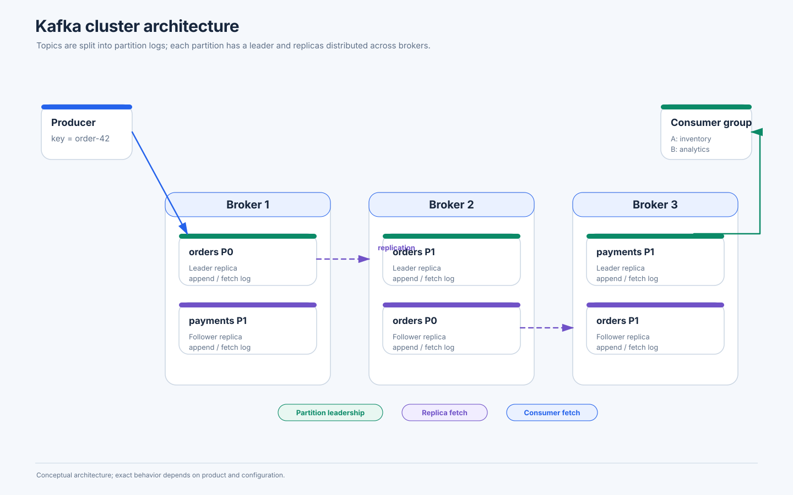
4.5 Kafka offsets and consumer position
An offset identifies a position in a single partition. Offset 5 in partition 0 has no ordering relationship with offset 5 in partition 7.
Distinguish:
- Log end offset: The next position at the end of a replica’s local log.
- High watermark: The boundary below which records
are considered replicated/committed for normal
read_uncommittedvisibility. - Last stable offset: For transactional reads, the
boundary before unresolved transactions that affects
read_committedconsumers. - Consumer position: The next record position the consumer will fetch or process locally.
- Committed offset: The durable progress position recorded for the consumer group. Kafka’s committed offset convention represents the next offset to consume, not “the last successfully processed offset” in the human sense.
Suppose a partition has offsets 0–9. A consumer has processed through record 5 and commits offset 6. On restart, it resumes from 6. If it commits 6 before processing record 5, it can lose the effect for record 5. If it processes 5 but crashes before committing 6, it may process 5 again. The latter is at-least-once behavior and requires idempotency.
Reset and replay
A consumer can reset its position to an earlier offset, within the broker’s retained history, to reprocess records. A reset is powerful but can duplicate side effects. Replaying into a new materialized view or isolated sink is safer than blindly replaying into a live payment or email system.
earliest and latest are common offset-reset
policies for a group with no valid committed position. Their exact use
depends on consumer configuration and whether offsets have expired or
become unavailable.
Diagram
Filename:
kafka-partition-offsets.svg
- Purpose: Explain offsets, consumer position, committed position, and replay.
- Components and labels: Partition P0, records 0–9, log end offset, high watermark, current position, committed offset.
- Relationships and flow: Consumer progresses through records; crash and restart moves it to the committed position; an offset reset moves it backward.
- Learning objective: Distinguish a log position from an acknowledgment and understand duplicate/loss windows.
- Suggested layout: Horizontal partition timeline
with vertical markers and a restart arrow.
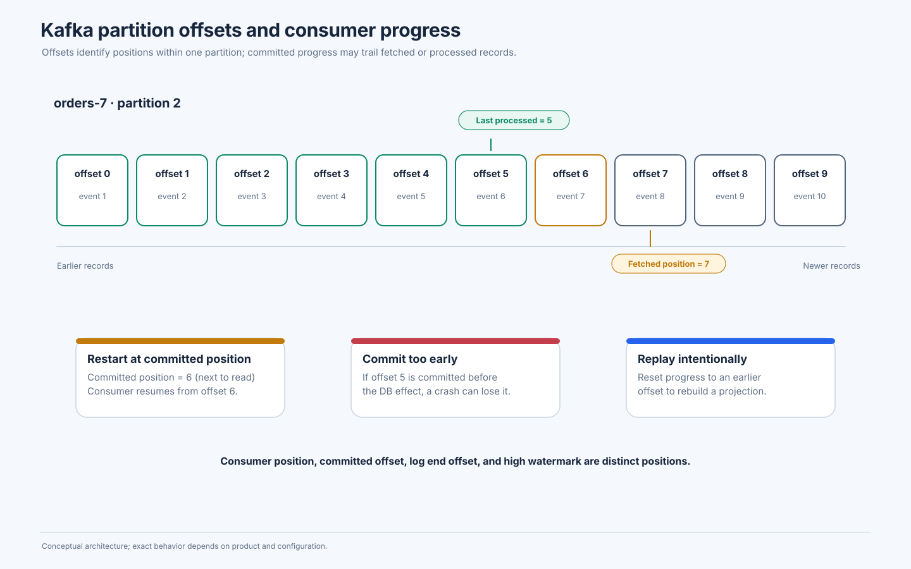
4.6 Producers: batching, acknowledgments, and retries
A producer serializes records, chooses partitions, batches records,
compresses batches where configured, and sends produce requests to
partition leaders. Batching amortizes network and request overhead. The
linger.ms setting allows a short wait for more records to
fill a batch; batch.size influences the maximum batch
buffer target. Compression can reduce network and storage load at the
cost of CPU and, depending on data shape, serialization overhead.
Acknowledgment settings
| Setting | Behavior | Main trade-off |
|---|---|---|
acks=0 |
Producer does not wait for broker acknowledgment | Lowest acknowledgment latency; no broker receipt guarantee |
acks=1 |
Leader acknowledges after its local append | Lower latency; leader can fail before followers replicate |
acks=all |
Leader waits for the current in-sync replica set to acknowledge | Stronger durability, with latency and availability trade-offs |
acks=all does not mean every configured replica must
acknowledge. It is tied to the current ISR.
min.insync.replicas lets an operator require a minimum
number of in-sync replicas for a write with acks=all; if
ISR size drops below that minimum, the write is rejected rather than
accepted with a weaker replication set.
A typical durability-oriented configuration combines
acks=all, a suitable min.insync.replicas,
replication factor, rack-aware placement, and producer idempotence. The
exact safe values depend on the number of brokers and failure tolerance.
With replication factor 3 and min.insync.replicas=2, for
example, writes can generally continue with two in-sync copies but fail
when fewer than two remain.
Idempotent producer
Retries create ambiguity: a producer sends a record, the acknowledgment is lost, and the producer cannot tell whether the broker appended it. Retrying naïvely can append a duplicate.
Kafka’s idempotent producer protocol uses producer identity and sequence information so the broker can detect duplicate sequence submissions within the protocol’s scope. It improves producer-to-broker semantics; it does not deduplicate two separately generated application events that happen to describe the same business action.
Modern Kafka producer clients enable idempotence by default when compatible configuration is used, but verify settings for the exact client version. Idempotence has configuration requirements involving acknowledgments, retries, and in-flight requests; current documentation describes the valid combinations. See Kafka producer configuration.
Ordering with retries
If records to one partition are sent concurrently, retry behavior and in-flight request limits can affect ordering unless the producer’s ordering-safe configuration is used. Kafka’s idempotent producer supports ordering with allowed in-flight values documented for the client version. Do not assume that application submission order automatically equals consumer-observed order if the application itself has multiple concurrent producer threads or sends to different partitions.
4.7 Replication, ISR, and high watermark
Kafka replication is leader-based. Followers fetch records from the leader. Followers that remain sufficiently caught up are included in the ISR. A follower that falls too far behind may leave ISR and must catch up before rejoining.
A leader can acknowledge a record according to producer
acknowledgment configuration. With acks=all, it waits for
the current ISR to acknowledge. The high watermark represents the
replicated boundary used for committed visibility. Consumers using
standard read_uncommitted isolation can read records up to
the high watermark; transactional read_committed consumers
also respect the last stable offset so they do not expose records from
open transactions.
Leader failure walkthrough
Assume replication factor 3 and all three replicas are in ISR.
- Producer sends record
E-101to the partition leader. - Leader appends it to its local log.
- Followers fetch the new data.
- If
acks=allis used, the leader waits for ISR acknowledgments. - The record becomes committed according to the replication/high-watermark rules.
- The leader crashes.
- The controller determines an eligible leader from the current ISR.
- The new leader serves clients after metadata and leadership transitions complete.
If a follower is behind, it may be excluded from ISR. If all eligible replicas are unavailable, the partition may become unavailable until an eligible replica returns or an explicitly configured unclean election policy permits a less-safe recovery. Unclean leader election trades availability for potential data loss and should be an explicit risk decision.
ISR is not “all replicas”
With replication factor 3, the assigned replicas may be
[B1, B2, B3], while ISR is [B1, B2]. An
acks=all write waits for the in-sync set, not the lagging
replica outside ISR. min.insync.replicas constrains how
small that set can become for acknowledged writes.
Do not conflate these terms: - Replication factor: configured copies for the partition. - Assigned replicas: the brokers holding replicas. - ISR: replicas currently eligible under the in-sync criteria. - High watermark: replicated visibility boundary. - Quorum: a majority concept used by consensus or other protocols; Kafka’s ISR-based acknowledgment rules should not be casually described as a Raft majority quorum.
Diagram
Filename: kafka-replication-isr.svg
- Purpose: Explain leader/follower replication, ISR membership, high watermark, and leader failover.
- Components and labels: Leader B0, followers B1/B2, ISR boundary, lagging replica, producer, high watermark, controller.
- Relationships and flow: Leader appends; followers fetch; ISR acknowledgments advance replicated visibility; leader failure triggers eligible replica election.
- Learning objective: Understand what
acks=all, ISR, andmin.insync.replicasdo—and what they do not guarantee. - Suggested layout: Three broker lanes with
replicated record arrows and a failure marker on the leader.
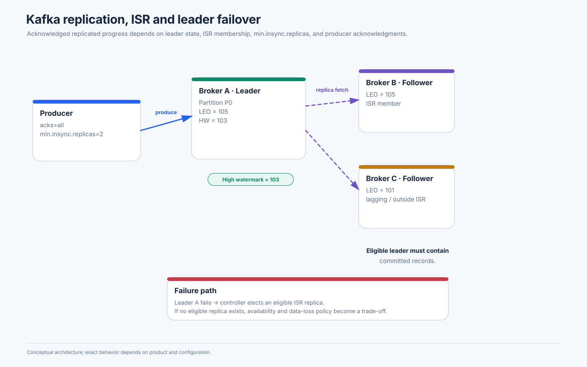
4.8 Consumer groups, assignment, and rebalancing
A consumer group is a logical subscription identified by a group ID. Its members divide the partitions of subscribed topics. Within a group, a partition is assigned to at most one member at a time under the ordinary consumer-group model. Different groups can independently consume the same topic.
For a 12-partition topic:
| Consumers in one group | Approximate assignment | Consequence |
|---|---|---|
| 3 | 4 partitions each | Three active consumers |
| 6 | 2 partitions each | More parallelism |
| 12 | 1 partition each | One consumer per partition |
| 16 | 12 consumers active, 4 idle | Partitions cap parallelism |
The mapping is not necessarily perfectly even for multiple topics or unequal partition sizes. The important upper bound is that one consumer in a group cannot simultaneously own multiple independent partition streams while another member owns the same partition.
Group coordinator and heartbeats
Kafka uses group coordination to manage membership, assignment, and offset commits. Consumers send heartbeats and poll according to configured timeouts. If a consumer stops heartbeating or is removed, the group may rebalance. A rebalance can pause or move partition ownership, temporarily affecting throughput and processing latency.
Frequent rebalances may be caused by: - Slow processing that blocks poll calls. - Unstable deployments or autoscaling. - Network interruptions. - Misconfigured heartbeat/session/poll timing. - Long garbage-collection pauses. - Consumers repeatedly joining and leaving. - Partition or subscription changes.
Keep time spent processing records compatible with consumer liveness expectations. Applications can use pause/resume and bounded worker queues to keep polling while managing work, but then offset commits must reflect completed work, not merely records fetched.
Rebalance strategies and cooperative behavior
Assignment strategies decide which consumer gets which partitions. Eager rebalancing can revoke many assignments before new ones are made, causing a stop-the-world interval for a group. Cooperative/incremental strategies aim to move only the partitions that need to move, reducing disruption. Static membership can reduce avoidable rebalances during brief restarts, but it must be configured with a stable instance identity and appropriate timeout behavior.
The newer consumer-group protocol is version-dependent. Kafka 4.0 made the next-generation consumer rebalance protocol generally available, but client/broker support and deployment configuration still matter. Do not assume all existing clusters have identical group behavior.
Diagram
Filename:
kafka-consumer-group-rebalancing.svg
- Purpose: Show partition assignment before and after a consumer joins.
- Components and labels: Topic P0–P11, Consumer A/B/C, new Consumer D, group coordinator, old/new assignment.
- Relationships and flow: Initial three-consumer ownership is redistributed after group membership changes.
- Learning objective: See why partitions bound group parallelism and why rebalances temporarily disrupt processing.
- Suggested layout: Two frames, “before” and “after,”
with a coordinator callout.
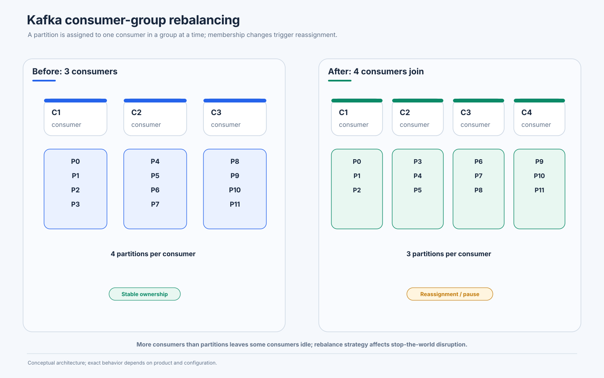
4.9 Log compaction vs time/size retention
Kafka supports different cleanup policies. Time/size-based retention removes older log segments when retention criteria are met. Log compaction retains the latest known value for each key within compacted segments, subject to compaction progress and tombstone rules.
Consider a compacted topic:
| Offset | Key | Value |
|---|---|---|
| 0 | customer-101 | Address A |
| 1 | customer-102 | Address B |
| 2 | customer-101 | Address C |
| 3 | customer-103 | Address D |
| 4 | customer-102 | null (tombstone) |
After compaction has processed the relevant segments, a consumer rebuilding current key state should obtain customer-101 → Address C and customer-103 → Address D. Customer-102’s tombstone marks deletion. The tombstone must remain long enough for downstream consumers to observe the deletion; it is eventually eligible for removal according to configured retention.
Compaction is not an audit log of every historical change. If every intermediate version must be retained forever, use an appropriate append-retention design or separate immutable event archive.
Use cases: key-value changelogs, latest user profile state, service configuration, and compacted state topics.
Diagram
Filename: kafka-log-compaction.svg
- Purpose: Show repeated keyed records and tombstone handling before and after compaction.
- Components and labels: Log offsets, keys, values, tombstone, cleaner, compacted result.
- Relationships and flow: Cleaner scans eligible segments and preserves latest state per key plus tombstones within the deletion horizon.
- Learning objective: Distinguish compacted current-state history from a complete immutable audit trail.
- Suggested layout: Before/after log rows with
same-key records visually grouped.
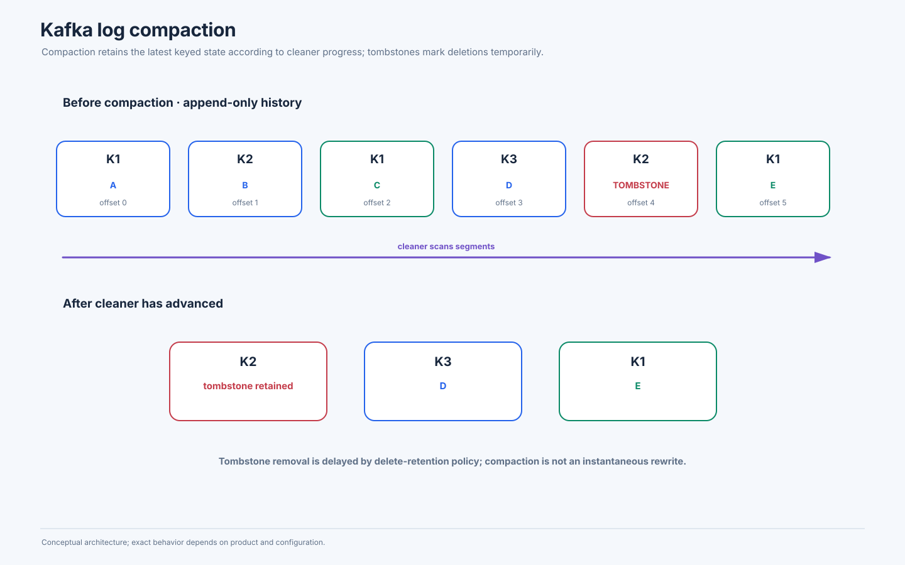
4.10 Storage internals and throughput
Kafka writes partition data to append-oriented log segments. A partition is composed of segment files; the active segment receives new records until a roll condition is met. Indexes help locate offsets and timestamps. Segment files can be deleted under retention or rewritten by the cleaner under compaction.
Sequential append patterns are generally favorable for storage devices. The operating-system page cache can serve repeated reads and buffer writes. Batching amortizes request overhead; compression reduces bytes moved and stored. Network transfer paths may use efficient kernel mechanisms such as zero-copy where the code path and platform allow, but do not assume every message path is literally a zero-copy operation.
Important operational implications: - Disk sizing must include replicas, indexes, segment overhead, filesystem reserve, and recovery headroom. - A consumer that falls behind beyond retention cannot replay records that have been deleted. - Compaction may temporarily need additional disk and I/O. - Too many small segments increase metadata and file-management overhead. - Slow disks or page-cache pressure can affect latency even when CPU appears available.
4.11 KRaft architecture and controller quorum
Kafka historically used ZooKeeper for cluster metadata and controller coordination. Modern Kafka uses KRaft: a metadata quorum based on a replicated metadata log. Controller nodes maintain cluster metadata, elect a leader for the metadata quorum, and coordinate broker registration and partition leadership changes.
A deployment may use combined broker/controller roles for small environments. Production environments often separate dedicated controller nodes from brokers to isolate metadata quorum responsibilities and resource contention.
Kafka 4.0 removed ZooKeeper mode; Kafka 4.x clusters therefore operate in KRaft mode. Older deployments can still be ZooKeeper-based, so legacy architecture diagrams and migration procedures remain relevant when operating older clusters. See the Kafka upgrade guide.
The controller quorum is not the same thing as every partition’s data replica set. KRaft metadata replication and partition data replication are related cluster functions but operate over distinct logs and roles.
Diagram
Filename:
kafka-kraft-controller-architecture.svg
- Purpose: Show the KRaft metadata quorum and brokers.
- Components and labels: Controller A/B/C, active controller, metadata log, broker nodes, partition leaders/followers, broker registration.
- Relationships and flow: Controller quorum replicates metadata; active controller manages cluster metadata and leadership changes; brokers replicate partition data independently.
- Learning objective: Distinguish metadata consensus from partition data replication and understand why ZooKeeper is absent in Kafka 4.x.
- Suggested layout: Controller quorum at top, broker
data plane beneath, separate arrow styles for metadata and record
replication.
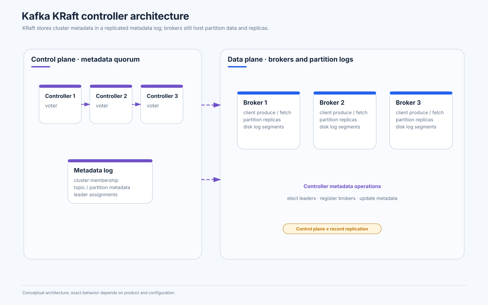
Kafka producer-consumer end-to-end example
- Producer obtains metadata for topic
orders.v1. - Producer chooses a partition using the key or configured partitioner.
- Producer batches the record and sends it to that partition’s leader.
- Leader appends the batch and followers fetch it.
- Leader responds according to acknowledgment settings.
- Consumer group members fetch from their assigned partitions.
- Consumer processes records and commits offsets after the appropriate side effect boundary.
- Other consumer groups independently process the same event history.
The data plane handles records; the control plane manages membership, metadata, and leadership. Operational diagnosis should identify which plane is failing.
5. Kafka Performance and Capacity Planning
Capacity planning is a model, not a promise. Measure representative payloads, key distribution, compression, retention, replication, producer batching, consumer behavior, and failure-recovery load.
5.1 Throughput and storage formulas
Let: - = messages per second - = average serialized record size in bytes - = retention duration in seconds - = replication factor - = compressed-size ratio (compressed bytes / uncompressed bytes) - = headroom multiplier
Approximate ingress:
Approximate logical retention storage:
Approximate replicated, compressed storage:
The model excludes indexes, segment overhead, filesystem and disk-reserve needs, compaction overhead, uneven partition distribution, and operational headroom. Add a headroom factor:
Do not treat a compression ratio as a universal constant. JSON with repetitive field names may compress well; already compressed images or encrypted blobs may not.
5.2 Worked example: 100,000 messages/sec
Assume: - messages/s - KiB = 2,048 bytes - seconds - Replication factor - Assumed compressed-size ratio - Planned headroom multiplier
Step 1: Incoming throughput
Using decimal units, this is approximately MB/s or Gbit/s of payload before protocol overhead.
Step 2: Logical daily storage
That is approximately 17.7 TB/day (decimal).
Step 3: Seven-day logical storage
Step 4: Compression and replication
Step 5: Headroom
The rough planned disk capacity is therefore about 242 TB across the cluster under these assumptions, before detailed index, filesystem, segment, and skew adjustments. The model assumes the compression ratio is achieved across the retained workload and that the stated message size includes the data being modeled. Actual sizing must use measured on-disk growth and broker metrics.
5.3 Partition sizing
Partition count is a multi-dimensional decision. Estimate the throughput a partition can sustain under the actual record size, replication factor, acknowledgment mode, compression, storage hardware, and consumer workload. Benchmark rather than copying a universal “MB/s per partition” rule.
A first-pass partition lower bound can be expressed as:
The first term approximates partitions needed for write throughput; the second represents the number of active consumer tasks desired for the group when each partition is the parallel unit. In practice, consumer processing may have additional worker concurrency, but partition ownership remains the boundary for ordinary group assignment.
Also consider: - Per-broker leader count and follower count. - Disk IOPS and throughput. - Network replication traffic. - Recovery/reassignment duration. - Metadata and file-descriptor scale. - Future growth and partition expansion strategy. - Hot keys and skew. - Availability zones or racks.
5.4 Bottleneck scenarios
| Symptom | Likely causes | Metrics / evidence | Corrective action |
|---|---|---|---|
| Producer latency increases | Broker disk/network saturation, request queueing, large batches, metadata churn | Produce request latency, request queue time, network, disk, throttling | Remove broker bottleneck, tune batches carefully, spread leaders, investigate quota |
| Consumer lag grows | Consumer throughput below input rate, slow dependency, too few partitions, rebalance churn | Lag by partition, processing latency, poll interval, CPU, dependency latency | Fix slow stage, add partitions only when appropriate, scale group up to partition count, batch |
| One partition is hot | Skewed key or hot tenant | Per-partition bytes/rates and lag | Change key design, shard a hot entity if semantics permit, split workload |
| ISR repeatedly shrinks | Slow disks, network drops, overloaded broker, aggressive lag threshold | ISR changes, follower fetch lag, disk latency, network errors | Fix hardware/network saturation, rebalance placement, review broker and replication settings |
| Disk fills | Retention too long, producer growth, replicas, unbalanced placement, stuck cleanup | Per-broker disk, log directory, segment count, retention bytes | Expand/rebalance disk, adjust retention intentionally, fix producer volume, preserve safety margin |
| Rebalances frequent | Consumer instability, slow poll, deployment churn, timeouts | Group state, rebalance rate, heartbeat/poll metrics | Fix processing architecture and liveness settings; use cooperative/static strategies where suitable |
| Broker CPU high | Compression, TLS, request overhead, too many partitions, inefficient client traffic | CPU by broker, request rates, GC and system metrics | Profile workload, batch, rebalance traffic, tune compression and partition count |
Diagram
Filename:
kafka-capacity-and-throughput.svg
- Purpose: Visualize end-to-end Kafka capacity and bottleneck locations.
- Components and labels: Producers, topic partitions, brokers, follower replication, disks, network, consumer groups, lag.
- Relationships and flow: Ingress fans into partitions; replicas consume network/disk; consumer groups read independently.
- Learning objective: Recognize that logical ingress, replicated disk growth, network traffic, and consumer throughput are different capacity dimensions.
- Suggested layout: Left-to-right data path with side
callouts for CPU, disk, network, and consumer bottlenecks.
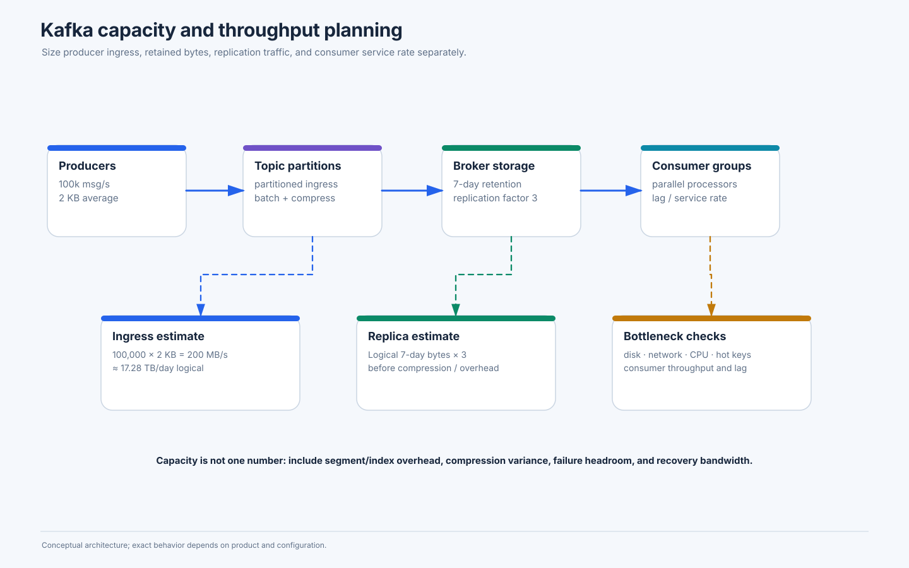
6. Pub/Sub Architecture
6.1 Publish-subscribe from first principles
In publish-subscribe (pub/sub), a publisher sends a message to a topic or named channel rather than naming one specific consumer. A broker or messaging service routes the publication to subscribers. Each subscriber has its own delivery state and may have a different purpose.
Example: a profile service publishes
CustomerProfileUpdated(customer_id=71). Search indexing
updates a document, recommendations refresh user features, analytics
records the change, and a CRM integration synchronizes an external
system. The profile service does not need a direct dependency on every
subscriber.
Pub/sub is a communication pattern, not one particular storage design. A topic may: - Fan out a copy to multiple queues. - Maintain a persistent log that each subscriber independently reads. - Deliver only while subscribers are connected. - Retain messages for durable subscriptions. - Apply filters or selectors to decide which messages are delivered.
The exact guarantees depend on the broker and subscription type.
6.2 Point-to-point vs topic pub/sub vs event streaming
| Pattern | Routing target | Consumer relationship | Common purpose |
|---|---|---|---|
| Point-to-point queue | One queue | Competing workers divide jobs | Work distribution |
| Topic pub/sub | Topic with subscriptions | Each subscription receives its own logical copy/view | Fan-out |
| Event stream | Partitioned retained log | Consumer groups track independent offsets | Replayable event history |
| Request-response | Specific service/endpoint or reply destination | One request matched to a response | Immediate decision/query |
A queue can be implemented as one subscription to a topic. A distributed log can support both independent subscriptions and consumer groups. Always ask what happens to the message after acknowledgment and whether another independent consumer can replay it.
6.3 Durable subscriptions, filters, and backlog
A durable subscription retains its progress while a consumer is disconnected. When it reconnects, it can continue from the subscription’s saved position, subject to retention limits. A transient or non-durable subscription may lose messages while disconnected.
Subscription filtering reduces unnecessary traffic but moves responsibility into routing rules. A filter that silently excludes a message can look like message loss unless the rule is observable and tested.
Backlog grows when publisher rate exceeds subscriber processing rate. A durable subscription does not create infinite storage. Monitor oldest-message age, backlog size, retention headroom, and the rate at which the subscriber can catch up.
Diagram
Filename:
publish-subscribe-fanout.svg
- Purpose: Show one publication delivered to independent subscribers.
- Components and labels: Publisher, topic, subscription A/B/C, search index, analytics, notifications, CRM.
- Relationships and flow: Publisher emits one event; broker fans it out according to subscriptions; each subscriber tracks its own progress.
- Learning objective: Understand producer decoupling and independent subscriber failure/backlog.
- Suggested layout: One publisher on the left,
central topic, four parallel subscriber lanes on the right.
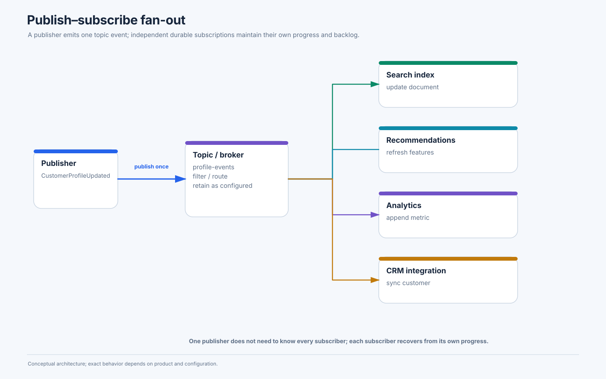
7. RabbitMQ
7.1 Architecture
RabbitMQ is a message broker commonly used for routing and work distribution. In AMQP 0-9-1, producers publish to exchanges. Exchanges route messages to queues, streams, or other exchanges through bindings. Consumers read from queues and acknowledge deliveries.
Core components:
- Producer: Publishes a message with an exchange name, routing key, headers, and payload.
- Exchange: Applies routing rules; it is not normally a message store.
- Binding: Connects an exchange to a destination with a routing key or arguments.
- Queue: Holds messages for consumers.
- Consumer: Receives messages and acknowledges or rejects them.
- Virtual host: A namespace that isolates users, permissions, exchanges, queues, and bindings.
- Publisher confirm: A broker-to-publisher signal that the broker accepted responsibility for a publication according to the relevant queue type and routing path.
- Consumer acknowledgment: A consumer signal that a delivery reached its completion boundary.
7.2 Exchange types
Direct exchange
A direct exchange routes a message to destinations whose binding key exactly matches the message routing key.
Example: - Message routing key: billing.invoice.created
- Queue A binding: billing.invoice.created → match - Queue
B binding: billing.invoice.* → not a direct-exchange
wildcard match
Fanout exchange
A fanout exchange routes a copy to every bound destination and ignores the routing key. It is useful for broadcast-style notification or cache invalidation.
Topic exchange
A topic exchange matches dot-separated routing-key segments against
binding patterns: - * matches exactly one segment. -
# matches zero or more segments.
For example, orders.*.created can match
orders.eu.created but not
orders.eu.web.created. A pattern orders.# can
match both.
Headers exchange
A headers exchange evaluates message headers and binding arguments rather than routing-key text. It is useful when the routing dimensions are metadata attributes rather than a hierarchical string.
See the official RabbitMQ exchange guide.
7.3 Message flow
- Producer publishes to an exchange.
- The exchange evaluates bindings.
- Matching queues receive the routed message.
- If no queue matches, the message is unroutable; publisher
configuration such as
mandatoryand handling of returns determines whether the producer is informed. - Consumer receives a delivery.
- Consumer performs its business operation.
- Consumer sends
ackafter durable success, ornack/reject according to retry and dead-letter policy.
An exchange does not imply that every publication is stored. Durability depends on the destination queue/stream and message properties and the replication/persistence configuration.
7.4 Reliability: confirms and acknowledgments
Publisher confirms and consumer acknowledgments protect different sides:
- Publisher confirms tell the publisher that the broker accepted responsibility for the publish under the destination’s semantics.
- Consumer acknowledgments tell the broker that a delivery has been handled sufficiently to remove or advance it.
A reliable publisher typically enables confirm mode, handles returned/unroutable messages, and records publish outcomes. A reliable consumer uses manual acknowledgments and acknowledges only after successful processing.
With quorum queues, publisher confirms are issued after a message has been replicated to a quorum of members according to the queue’s consensus implementation. Consumers should use manual acknowledgments so failed processing can be retried. These mechanisms improve broker and delivery durability but do not make an external database update atomic with a queue acknowledgment. See RabbitMQ quorum queues and publisher confirms and consumer acknowledgments.
7.5 Prefetch and consumer fairness
Prefetch limits the number of unacknowledged deliveries a consumer can hold. A high prefetch can improve throughput by allowing more work to be in flight, but can also: - Cause one consumer to hold many messages while another is idle. - Increase memory pressure. - Increase the number of messages redelivered after a worker failure. - Increase the delay before work becomes visible to another worker.
Choose prefetch from task duration, worker concurrency, message size, memory, and fairness requirements. For long-running jobs, keep prefetch bounded.
7.6 Durable, persistent, replicated, and stream storage
These terms are distinct: - Durable queue metadata survives broker restart. - Persistent messages are eligible for disk persistence on durable destinations. - Quorum queues replicate queue data across a majority of members. - RabbitMQ streams provide a persistent append-only log abstraction with offsets and replay-like access.
A durable queue plus persistent message flag is not the entire reliability story. Confirm configuration, routing, disk health, replication, consumer acknowledgment, and application idempotency matter.
Quorum queues are useful when safety matters and replicated queue semantics are desired. They have additional consensus-related latency and are not automatically the right choice for temporary high-churn queues or very large fan-out/backlog use cases. RabbitMQ’s documentation discusses those trade-offs.
7.7 Retry and dead-letter design
A consumer may reject or negatively acknowledge a message. Requeueing immediately can create a hot failure loop. A better design often uses delayed retry tiers (for example 5 seconds, 1 minute, 10 minutes) with bounded attempts and eventual dead-lettering.
Do not retry permanent failures forever. Validate payloads, distinguish transient infrastructure failures from business rejections, preserve failure metadata, and provide a controlled redrive path.
7.8 RabbitMQ vs Kafka
| Dimension | RabbitMQ | Kafka |
|---|---|---|
| Core abstraction | Exchanges, queues, streams | Topics and partitioned logs |
| Routing | Rich exchange/binding routing | Producer partitioning and topic selection |
| Queue consumption | Native competing-consumer queue model | Consumer groups distribute partitions |
| Replay | Queue messages often removed after ack; streams support log-like access | Native retained log and offset reset |
| Ordering | Depends on queue, consumer count, priorities, requeueing | Ordered within each partition |
| Backpressure | Prefetch, consumer acknowledgments, flow control | Pull-based fetch, pause/resume, lag |
| Typical fit | Task routing, RPC-style messaging, complex broker routing | High-throughput event streams, replay, data pipelines |
| Operations | Queue topology, quorum/stream storage, routing and consumer state | Partitions, replication, retention, consumer groups, broker/controller health |
Neither is categorically faster or more reliable. A routing-heavy job-processing system may fit RabbitMQ; a replayable high-volume event backbone may fit Kafka. Some architectures use both, with a clear reason for each boundary.
Diagram
Filename:
rabbitmq-exchange-routing.svg
- Purpose: Visualize exchanges and routing rules.
- Components and labels: Producer, direct/fanout/topic/headers exchanges, routing keys, bindings, queues, consumers.
- Relationships and flow: Publications enter exchanges, which route to matching destinations.
- Learning objective: Understand why producers publish to exchanges rather than treating a queue as the only routing primitive.
- Suggested layout: Four exchange examples in a grid
with one routing example each.
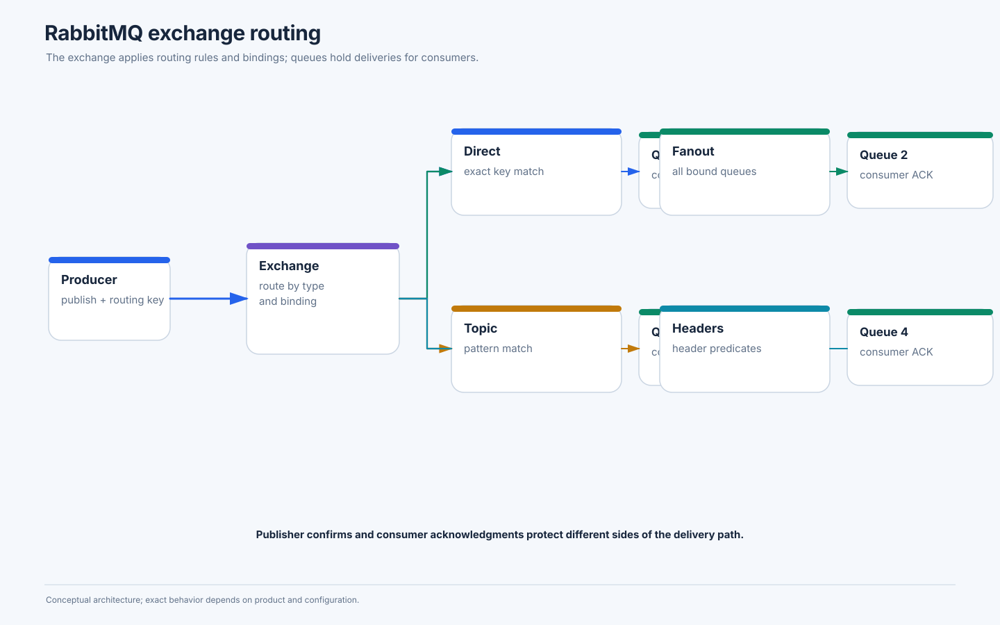
8. Apache Pulsar
8.1 Architecture and design goals
Apache Pulsar is a distributed pub/sub and messaging platform with a serving layer (brokers) separated from its durable storage layer (Apache BookKeeper). This separation allows brokers to serve client traffic while BookKeeper bookies store replicated ledger data.
Key concepts:
- Broker: Handles client connections, topic ownership, message routing, and dispatch.
- BookKeeper: Distributed log-storage system.
- Bookie: BookKeeper storage server that stores ledger entries.
- Ledger: Append-oriented sequence of entries used by managed ledgers.
- Managed ledger: Abstraction Pulsar uses to manage persistent topic storage over BookKeeper ledgers.
- Metadata store: Coordinates topic ownership, namespace metadata, and other cluster metadata, depending on deployment version/configuration.
- Tenant and namespace: Multi-tenant resource and policy boundaries.
- Subscription: Named consumer state and delivery mode.
A broker may own a topic’s serving responsibility while data is persisted in BookKeeper. If a broker fails, another broker can take over topic ownership and read from durable storage.
8.2 Subscription types
| Subscription type | Consumer relationship | Ordering/parallelism characteristics |
|---|---|---|
| Exclusive | One consumer on a subscription | Simple single-consumer ordering for that subscription |
| Failover | One active consumer, standby consumers | Standby takes over when active disconnects; ordering is tied to active delivery |
| Shared | Multiple consumers share messages | Higher parallelism; no strict global ordering guarantee across concurrent consumers |
| Key_Shared | Multiple consumers; messages for a key are routed consistently to a consumer | Supports per-key affinity/order under supported configuration, while parallelizing across keys |
The subscription type is a business decision. A shared subscription can increase throughput but allows concurrent processing. If account events require order, key-based routing and consumer behavior must preserve per-key sequencing.
8.3 Storage-compute separation
The serving/storage split can let teams scale broker capacity and durable storage capacity independently. It also introduces a multi-component operational system: - Brokers need network access to BookKeeper. - Bookies need stable disk performance and replication. - Metadata coordination must remain healthy. - Storage placement and ledger recovery affect availability. - Client latency includes broker dispatch and storage interactions.
Do not assume that separation eliminates bottlenecks; it relocates and exposes different scaling dimensions.
8.4 Replication and geo-distribution
Pulsar supports replication between clusters using geo-replication features. This is useful for regional consumption or disaster recovery, but cross-region replication introduces asynchronous propagation and possible lag. Applications must define whether a remote consumer can tolerate stale data and how conflicts or failover ownership are handled.
8.5 Kafka vs Pulsar
| Dimension | Kafka | Pulsar |
|---|---|---|
| Serving architecture | Brokers serve partition leaders and followers | Brokers handle client traffic; BookKeeper stores persistent data |
| Storage architecture | Broker-local log segments for partitions | BookKeeper ledgers/bookies behind managed ledgers |
| Replication | Partition replicas and ISR | BookKeeper ensemble/ack/quorum policies and cluster replication |
| Partition model | Partition is ordering and parallelism unit | Partitioned topics supported; subscription semantics add delivery choices |
| Subscription | Consumer groups and offsets | Exclusive, Failover, Shared, Key_Shared |
| Replay | Offset reset within retained history | Subscription cursor and retained topic history |
| Multi-tenancy | ACLs, quotas, naming conventions and deployment design | First-class tenant/namespace model and policies |
| Geo-replication | Replication tools and architectures are available | Built-in geo-replication model is a major design feature |
| Scaling | Scale brokers/partitions and storage | Scale brokers and BookKeeper storage roles separately |
| Operations | Partition assignment, broker disks, controller quorum | Brokers, bookies, metadata, ledgers, subscriptions |
| Best fit | Strong event-log ecosystem and high-throughput pipelines | Multi-tenancy, varied subscriptions, separated serving/storage and geo-replication needs |
A benchmark only matters when its configuration matches the intended workload: message size, persistence, replication, batching, consumer count, latency percentile, failure mode, and hardware.
Diagram
Filename:
pulsar-storage-compute-separation.svg
- Purpose: Show Pulsar brokers separated from BookKeeper storage.
- Components and labels: Producers/consumers, Pulsar brokers, topic ownership, metadata store, Bookies, ledgers, replicated writes.
- Relationships and flow: Clients connect to brokers; brokers dispatch and coordinate reads/writes; BookKeeper stores ledger entries on bookies.
- Learning objective: Understand storage/serving separation and the extra operational components it creates.
- Suggested layout: Brokers in a serving tier above a
BookKeeper storage tier, metadata service alongside.
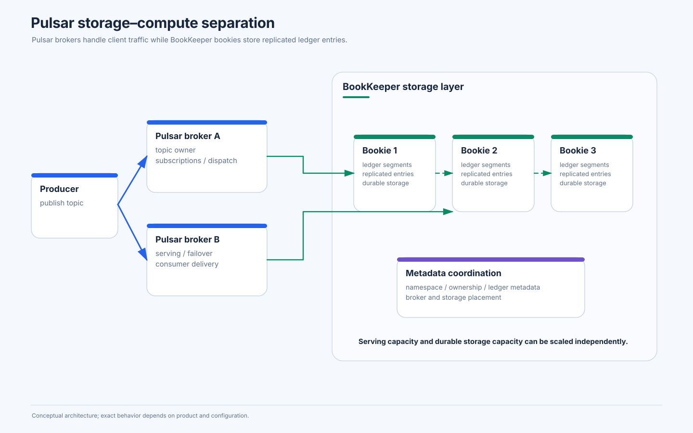
9. Amazon Simple Queue Service (SQS)
9.1 SQS as a managed queue
Amazon Simple Queue Service (SQS) is a managed message-queue service. AWS operates the service infrastructure; application teams configure queues, permissions, policies, producers, consumers, retries, and monitoring. It is designed for decoupling distributed components without requiring teams to operate broker clusters.
SQS has two principal queue types: - Standard queues: High-scale, at-least-once delivery with best-effort ordering. Duplicates and occasional out-of-order delivery must be handled by consumers. - FIFO queues: Ordering within a message group and deduplication support, with throughput and concurrency shaped by message-group design and configured FIFO capabilities.
SQS is a queue, not a general-purpose retained event log. A message is normally deleted after successful processing. For long-term replay or many independent subscribers, evaluate a log/stream service or deliberately fan out into separate queues.
9.2 Visibility timeout
When a consumer receives a message, SQS hides it from other consumers for the visibility timeout. The consumer deletes the message after successful processing. If it crashes or does not delete before the timeout, the message can reappear and be delivered again.
Walkthrough: 1. Worker A receives
GenerateInvoice(I-900). 2. The message becomes invisible
for, say, 120 seconds. 3. Worker A starts generating the invoice. 4.
Worker A crashes after 70 seconds. 5. The message remains invisible
until the timeout expires. 6. Worker B receives it and retries. 7. If
Worker A had completed an external action before crashing, Worker B must
detect that the action already happened.
The timeout should exceed normal processing time with an appropriate margin, but an excessively long timeout delays recovery after a worker failure. Long-running work can extend visibility while processing. The exact timeout range, defaults, and API behavior should be checked in AWS documentation; current documentation describes a 0-second to 12-hour setting and notes that visibility timeout does not remove all duplicate-delivery possibilities.
Standard vs FIFO
| Dimension | Standard | FIFO |
|---|---|---|
| Ordering | Best effort | Strict within each message group |
| Delivery | At least once; duplicates possible | FIFO semantics within group; application still must be robust |
| Parallelism | High, distributed across available messages | Across different message groups |
| Deduplication | Consumer idempotency needed | Deduplication ID support within documented window; not a universal external-effect guarantee |
| Use case | Independent jobs, fan-out work queues | Ordered workflows such as account-scoped commands |
A FIFO message group ID serializes the group. Different group IDs can
be processed in parallel. If all bank-account events use
account_id as group ID, events for one account stay ordered
while unrelated accounts can proceed concurrently.
Diagram
Filename:
sqs-visibility-timeout.svg
- Purpose: Explain temporary invisibility, delete-on-success, and redelivery after timeout.
- Components and labels: SQS queue, Worker A, visibility timeout clock, Worker B, DeleteMessage, redelivery.
- Relationships and flow: Receive hides message; successful delete removes it; failure/timeout makes it visible again.
- Learning objective: Understand why visibility timeout must align with processing duration and why idempotency remains mandatory.
- Suggested layout: Horizontal time line with
separate worker swimlanes and timeout boundary.
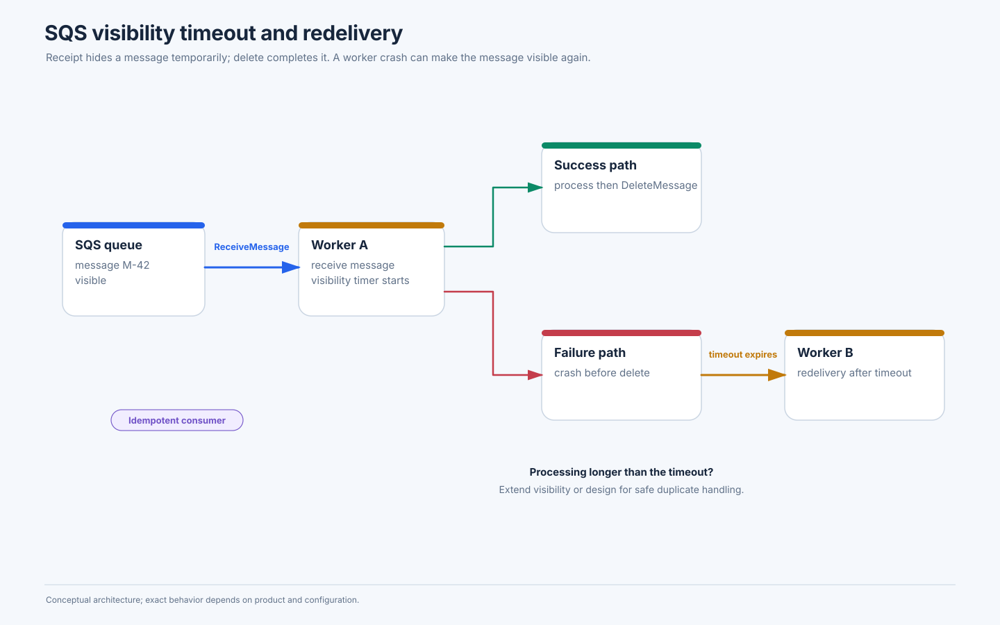
9.3 Long polling, batching, and DLQ
- Long polling waits for messages up to a configured wait time instead of returning immediately when no message is available. It can reduce empty responses and request cost.
- Batching allows multiple messages to be sent, received, or deleted in one API call, reducing request overhead.
- Delay makes a message unavailable until a configured time.
- DLQ/redrive policy moves repeatedly failing messages to another queue after a configured receive-count threshold.
SQS redrive policy is broker-managed for supported queue configurations, but application teams still need to inspect and replay messages safely. A DLQ is not a substitute for monitoring or failure classification.
9.4 SQS, Kafka, RabbitMQ, Pulsar comparison
| Dimension | SQS | Kafka | RabbitMQ | Pulsar |
|---|---|---|---|---|
| Service model | AWS-managed queue | Self-managed or managed log platform | Self-managed or managed broker | Self-managed or managed messaging platform |
| Core abstraction | Queue | Topic partitions | Exchanges, queues, streams | Topics and subscriptions |
| Message lifecycle | Receive, visibility, delete | Retained by policy; consumers track offset | Queue ack/remove or stream retention | Subscription cursors and retention |
| Replay | Limited queue redrive, not log-style arbitrary replay | Native offset replay within retention | Streams support replay; queues usually work-oriented | Persistent topic replay |
| Ordering | FIFO group ordering; standard best effort | Per partition | Depends on queue/consumer topology | Depends on subscription type/partition |
| Operations | Low broker-management burden | Broker, partition, replication, controller operations | Broker, queue, routing, quorum operations | Broker, bookie, metadata, storage operations |
| Typical fit | Managed job queue and service decoupling | Event backbone and streaming pipeline | Flexible routing and task distribution | Multi-tenant pub/sub, subscription diversity |
No universal winner: SQS reduces infrastructure operations in AWS-centric workloads; Kafka is strong for retained event streams; RabbitMQ is strong for rich message routing; Pulsar offers a different storage/serving split and subscription model.
10. Ordering Guarantees
10.1 Why ordering is difficult
A distributed system has many concurrent producers, network paths, retries, partitions, and consumers. There is no automatic global sequence unless the system explicitly coordinates one. Even if a broker stores records in a defined order, consumers can process them concurrently and complete out of order.
Distinguish: - Append order: Order in which a broker appends records to one ordered log. - Delivery order: Order in which a consumer receives records. - Completion order: Order in which business processing finishes. - Causal order: If event B causally depends on event A, B should not be observed as preceding A in a way that violates the application. - Global order: One total ordering across all records in the system.
Global total order normally requires coordination or a single serialization point, reducing parallelism and increasing latency. Most business systems need order only for one entity: one account, one order, one device, or one aggregate.
10.2 Kafka ordering
Kafka guarantees append order within a partition. It does not automatically guarantee a global order across partitions.
A common design uses account_id as the key for account
events. All events for a particular account are routed to one partition,
creating a sequence that one consumer in a group can process. This
design has two important assumptions:
- The partitioner and partition mapping remain stable for the relevant sequence. Expanding partitions may remap some keys under hash-based partitioning.
- The consumer does not parallelize same-partition records in a way that allows later effects to commit before earlier effects.
For strict per-key sequencing, a consumer can process sequentially per partition or dispatch to keyed serial executors. If it uses a worker pool, it must preserve per-key ordering explicitly.
Producer retry and in-flight request settings matter when multiple requests are in flight. Use the idempotent producer and supported ordering-safe settings, and test failure/retry behavior for the client version.
10.3 RabbitMQ ordering
A single queue provides a queue order, but multiple consumers can receive different messages and finish them in a different order. Requeueing a failed message, priorities, redelivery, and competing consumers can further affect what the application observes.
If strict sequencing is required, use a single active consumer or partition work into independent ordered queues/keys. Do not combine unconstrained parallel consumers with a requirement for globally ordered side effects.
10.4 SQS ordering
Standard queues provide best-effort ordering. FIFO queues serialize records inside a message group. A group should represent the entity whose order matters. Different message groups enable parallelism.
For account events: - Group ID account-001 serializes
that account’s records. - Group ID account-002 can be
processed independently. - A single group for every account provides
global serialization but severely limits throughput.
10.5 Bank-account sequence example
Suppose account A receives: 1. Deposit(100) 2.
Withdraw(40) 3. Withdraw(80)
Starting at balance 50, sequential processing yields: - After deposit: 150 - After withdrawal 40: 110 - Withdrawal 80: 30
If message 3 is applied before message 2, the second withdrawal may be rejected for insufficient funds even though it should succeed after the deposit and first withdrawal. Alternatively, an unsafe system may allow a negative balance.
A robust design uses: - Account ID as a partition/group key. - A monotonically increasing aggregate version or sequence. - Conditional updates that reject stale sequence numbers. - Idempotency keys for duplicate delivery. - A poison-event policy that does not silently allow later events to violate sequence semantics.
Ordering by key is not sufficient if producers publish concurrently without a single authoritative order for one account. A versioned domain model or database transaction can establish the correct sequence before publication.
10.6 Handling a failed event without overtaking
If event sequence 12 fails but 13 is processed, later state may become invalid. Options include: - Pause that partition or key and retry 12. - Route the key to a serial retry workflow. - Store the failed event and block later events for that key. - Apply business rules that permit skipping certain event types, with an auditable gap marker. - Repair the data and replay from a known checkpoint.
Moving a poison message to a DLQ and continuing can be wrong for ordered ledgers. For non-dependent telemetry events, continuing may be acceptable. Ordering policy is a business decision.
Diagram
Filename:
message-ordering-guarantees.svg
- Purpose: Contrast global ordering with per-partition/per-key ordering and parallel execution.
- Components and labels: Producer, key A/B, partitions P0/P1, consumers, sequence numbers, completion markers.
- Relationships and flow: Same-key events stay in one partition/group; unrelated keys execute concurrently; cross-partition events have no total order.
- Learning objective: Understand the practical compromise between ordering and throughput.
- Suggested layout: One panel with a single global
lane and another with parallel keyed lanes.
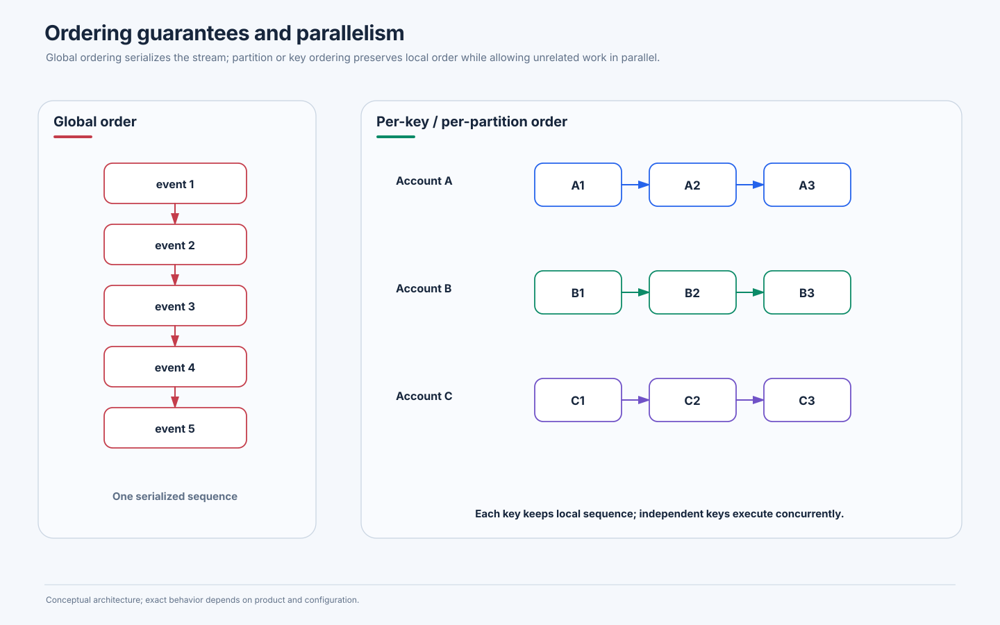
11. Backpressure and Flow Control
11.1 Producer rate vs consumer rate
Backpressure is the ability of a downstream component to signal or enforce that upstream work must slow down because the downstream stage cannot keep up. It prevents unbounded queues, memory exhaustion, and collapse under overload.
Let: - = incoming message rate (messages/s) - = processing rate (messages/s) - = backlog at time
For a simple constant-rate model when :
Assume producers generate 50,000 events/s and consumers process 35,000 events/s. The backlog grows by:
After 10 minutes:
If the average stored event is 1.5 KiB, the additional logical payload is about 13.8 GB (decimal conversion depends on whether KiB or KB is used), before replication and indexes. Scaling consumers can reduce the backlog only if the downstream dependency and partitioning model permit more parallel processing.
11.2 Stable throughput and queueing intuition
A queue is stable over the long run only when effective service capacity exceeds average arrival rate, with room for bursts and variance. Operating exactly at 100% utilization leaves little capacity to absorb spikes.
Queueing delay can increase sharply as utilization approaches 1. In a simple M/M/1 model with arrival rate and service rate , expected time in system is:
This is an illustrative model, not an accurate prediction for every broker or batch-processing system. Real workloads have burstiness, variable service times, multiple workers, priorities, partitioning, and external bottlenecks.
11.3 Broker-specific flow control
- RabbitMQ: Consumer prefetch limits outstanding unacknowledged messages. Broker flow control can throttle publishers when the broker cannot keep up.
- Kafka: Consumers pull records. Applications can pause partitions, bound worker queues, reduce fetch/processing pressure, and monitor lag. Kafka does not automatically slow an upstream producer merely because one consumer group is behind.
- Pulsar: Consumer receiver queues and permits control how many messages are dispatched to clients.
- SQS: Polling rate, batch size, visibility timeout, and worker concurrency shape load. Scaling workers must still respect dependency capacity.
- Flink: Backpressure propagates through the streaming topology as downstream tasks stop accepting data at the same rate, eventually slowing upstream tasks and sources where supported.
11.4 Why more consumers may not improve throughput
Adding consumers helps only if there are more independent units of work and the bottleneck is consumer CPU or concurrency. It does not help when: - A Kafka topic has fewer partitions than desired active consumers. - One partition/key is hot. - All consumers depend on a single rate-limited database. - Downstream writes serialize on one lock or index. - The bottleneck is network, broker disk, source throughput, or an external API quota. - More workers increase contention or overload.
11.5 Overload response ladder
- Measure: Identify which stage is saturated and whether the backlog is growing.
- Bound memory: Use bounded queues, prefetch, and in-flight request limits.
- Apply admission control: Reject or defer low-priority work before it enters an unbounded pipeline.
- Shape traffic: Rate-limit producers or apply quotas.
- Batch: Amortize per-message overhead if latency requirements allow.
- Scale: Add consumers or partitions only when parallelism and downstream capacity exist.
- Degrade intentionally: Shed optional analytics/enrichment while preserving critical processing.
- Isolate dependencies: Use bulkheads and circuit breakers.
- Recover carefully: Increase capacity gradually to avoid a catch-up surge overwhelming downstream databases.
Diagram
Filename:
messaging-backpressure-flow.svg
- Purpose: Show backlog growth and control mechanisms when ingress exceeds processing capacity.
- Components and labels: Producers, broker buffer, consumer pool, downstream database, rate limiter, autoscaler, pause/flow-control signal.
- Relationships and flow: Producers outrun consumers; backlog grows; feedback/admission mechanisms reduce incoming work or increase safe capacity.
- Learning objective: Understand why queue depth is a symptom and why rate control must protect the slowest dependency.
- Suggested layout: Left-to-right pipeline with a
growing backlog gauge and feedback arrow toward producers.
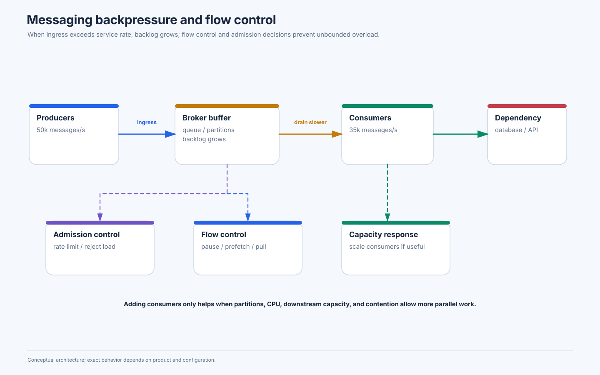
12. Dead-Letter Queues and Retry Architecture
12.1 Classify failures before retrying
A retry system should distinguish:
- Transient infrastructure failure: Network reset, temporary service unavailability, throttling, timeout.
- Business rejection: Card declined, insufficient funds, invalid address. Repeating the exact same request may not help.
- Permanent data failure: Malformed JSON, missing required identity, incompatible schema.
- Dependency-state conflict: Version conflict or duplicate request that may succeed after reconciliation.
- Unknown outcome: Timeout after a side effect may have occurred. Query/reconcile before creating a new operation.
Infinite immediate retries convert a small outage into a retry storm. A bounded exponential backoff with jitter spreads load:
where is initial delay, is maximum delay, and is a random jitter term. A full-jitter approach chooses a random delay within the current exponential ceiling, reducing synchronized retry spikes.
12.2 Retry lifecycle
A payment-event consumer receives a message but the payment provider returns a transient 503:
- Consumer classifies 503 as retryable.
- It records attempt metadata and schedules a delayed retry.
- The message waits before another attempt.
- The consumer reuses the same payment idempotency key.
- After configured attempts/time, it moves the event to a DLQ or escalates it to a durable workflow.
- Operators inspect the payload, failure reason, attempts, timestamps, correlation ID, and provider response.
- After the root cause is fixed, the event is replayed with its stable identity and audited history.
A business decline should normally transition the order to a declined/cancelled state, not be retried like a transient 503.
12.3 DLQ design
A useful DLQ record preserves: - Original message body and headers. - Original topic/queue and partition/offset or message identifier. - Event ID and schema version. - First-seen and last-failed timestamps. - Attempt count and retry history. - Failure class and exception summary. - Correlation and causation IDs. - Consumer/service version. - Original ordering key.
DLQs need their own alerting and retention policy. A DLQ with no owner becomes a silent data graveyard. Replaying a DLQ must be controlled: validate schema, ensure idempotency, avoid flooding a recovered dependency, and determine whether later ordered events are blocked.
12.4 Product-specific conventions
| Product | Mechanism | Important nuance |
|---|---|---|
| RabbitMQ | Dead-letter exchange and queue policies/arguments | Routing and requeue rules affect redelivery; immediate requeue can loop |
| Kafka | Application-level dead-letter topic is a common pattern | A Kafka topic is not a native per-record DLQ feature by itself; consumer code decides when to publish failures |
| SQS | Redrive policy and DLQ queue | Receive-count threshold controls transfer; operators still need safe inspection/replay |
| Pulsar | Dead-letter topic supported by consumer subscription patterns | Consumer retry and subscription configuration determine behavior; check version-specific semantics |
12.5 Retry ordering
For independent work items, a failed event can be delayed while other events proceed. For ordered account or inventory streams, moving one event to a delayed retry path may allow later events to overtake it. Decide whether to: - Block the key/partition. - Retry in place. - Use per-key serial queues. - Allow overtaking and repair via sequence/version checks.
Diagram
Filename:
dead-letter-queue-retry-flow.svg
- Purpose: Show transient retry, bounded attempts, dead-lettering, operator inspection, and replay.
- Components and labels: Main queue/topic, consumer, exponential backoff tiers, DLQ, alert/inspection, replay path.
- Relationships and flow: Failed messages retry; permanent/exhausted messages move to DLQ; fixed messages are replayed safely.
- Learning objective: Understand failure classification, bounded retries, metadata preservation, and replay governance.
- Suggested layout: Main success path across the top
and retry/DLQ loop underneath.
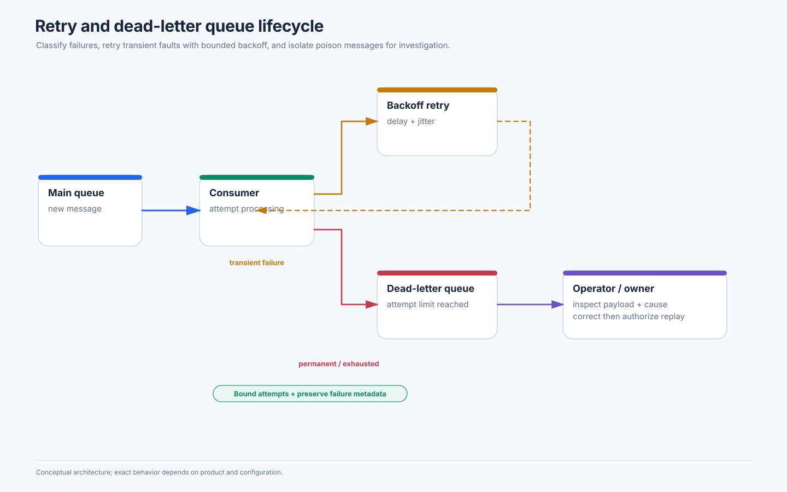
13. Event-Driven Architecture
13.1 Events, commands, and ownership
Event-driven architecture (EDA) organizes interactions around the production, publication, and consumption of events. A service owns its data and publishes facts about state transitions. Other services react without reading the producer’s private database.
An event should express a meaningful fact: - OrderPlaced
- InventoryReserved - PaymentAuthorized -
ShipmentDispatched -
CustomerAddressChanged
A command requests an action: - ReserveInventory -
AuthorizePayment - DispatchShipment
A query asks for information: - GetOrderStatus -
GetAvailableInventory
A message is the envelope used to transport a command or event. An event is a semantic claim about something that happened. A domain event is meaningful within a domain model; an integration event is a stable contract intentionally shared outside the owning service.
13.2 Domain events vs integration events
A domain event can contain rich domain-specific concepts and may be internal to one service boundary. An integration event should be designed as a versioned public contract, often with identifiers, timestamps, schema version, and only the information consumers are authorized to receive.
Example: - Internal domain event:
ReservationExpiryScheduled with an internal timer handle
and policy metadata. - Integration event: InventoryReserved
with reservation_id, order_id,
sku, quantity, and
occurred_at.
Do not publish an entire database row as an event contract. Internal schema changes would then break external consumers, and data exposure would become difficult to govern.
13.3 Event envelope and traceability
A useful event envelope may include:
| Field | Purpose |
|---|---|
event_id |
Stable identity used for deduplication |
event_type |
Semantic type, such as OrderPlaced |
schema_version |
Contract version |
aggregate_id |
Entity/aggregate the event belongs to |
aggregate_version |
Sequence/version within the aggregate |
occurred_at |
Business event time |
published_at |
Publication timestamp |
producer |
Owning service |
correlation_id |
Connects a multi-step workflow/request |
causation_id |
Identifies the command/event that caused this event |
traceparent |
Distributed tracing context where standardized propagation is used |
payload |
Domain facts required by consumers |
The occurred_at timestamp is not a globally reliable
ordering mechanism. Clock skew, delayed delivery, and retries can make
timestamps appear out of order. Use aggregate versions or broker
partition order for sequence-sensitive processing.
13.4 E-commerce event-driven architecture
A marketplace can use these boundaries:
- Order service: Owns order state; emits
OrderPlaced,OrderCancelled, andOrderConfirmed. - Inventory service: Owns stock and reservation
state; handles reservation commands and emits
InventoryReservedorInventoryRejected. - Payment service: Owns payment attempts and provider
references; emits
PaymentAuthorized,PaymentCaptured, orPaymentFailed. - Shipping service: Owns shipment and carrier state;
emits
ShipmentCreatedandShipmentDispatched. - Analytics service: Builds independent projections.
- Notification service: Delivers email/SMS/push, usually asynchronously.
Each service consumes events, commits local state, and emits events. A database-per-service architecture should avoid consumers directly querying another service’s private tables.
13.5 Reliability concerns
EDA moves coupling from call graphs into event contracts and workflow state. It still needs: - Durable publication, commonly through an outbox or CDC. - Idempotent consumers. - Schema compatibility. - Ordering keys and aggregate versions. - Retry/DLQ policy. - Correlation and causation identifiers. - Replay discipline. - Event retention and privacy policy. - Monitoring for consumer lag and workflow age. - Clear ownership for every event type.
Eventual consistency becomes visible to customers. A customer may see
an order as PENDING_PAYMENT before payment and shipping
complete. Design states explicitly and expose a trustworthy status
rather than pretending every downstream effect happens atomically.
Diagram
Filename:
event-driven-microservices.svg
- Purpose: Show independently owned services connected by domain/integration events.
- Components and labels: Order, inventory, payment, shipping, notification, analytics, broker/topics, local databases.
- Relationships and flow: Each service owns its database, publishes events, and consumes events relevant to its responsibility.
- Learning objective: Understand service autonomy, local transactions, eventual consistency, and the need for durable event publication.
- Suggested layout: Services around a central
messaging backbone, each with a small database cylinder and
inbound/outbound event arrows.
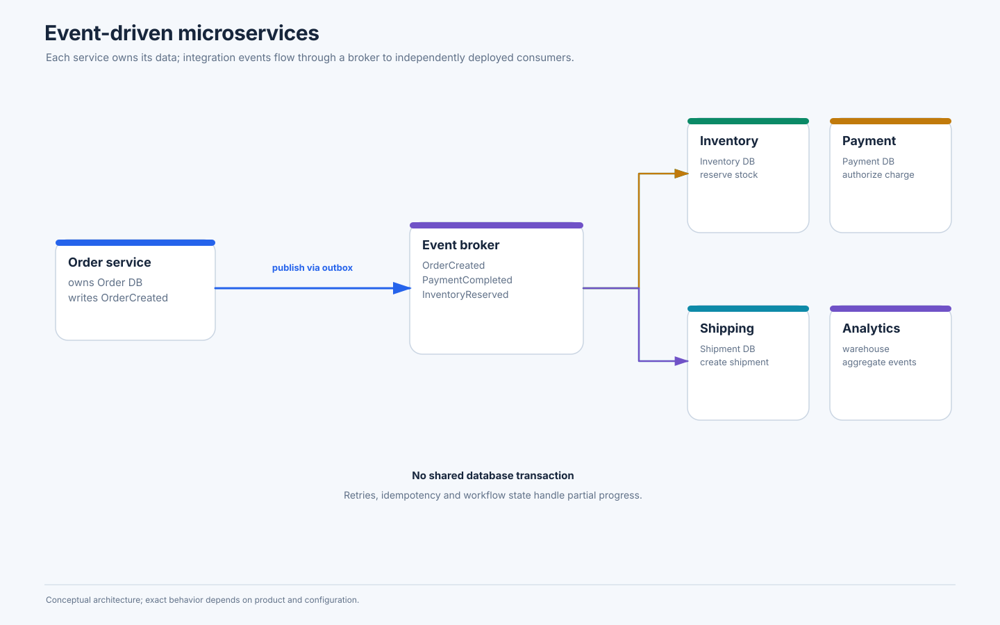
14. Event Sourcing
14.1 State storage vs event storage
Traditional CRUD persistence stores current state. A bank account row
might contain balance = 1,250. A deposit or withdrawal
updates that row.
Event sourcing stores the sequence of accepted state-changing events as the authoritative history. Current state is derived by folding events in order:
where is the initial state and is the next event.
For a bank account: 1.
AccountOpened(account_id=A, opening_balance=500) 2.
MoneyDeposited(amount=1,000) 3.
MoneyWithdrawn(amount=150) 4.
MoneyTransferredOut(amount=100)
The current balance is , assuming those events were valid and the account’s rules define the balance that way.
The event stream preserves how the account reached its current state. It supports audit and temporal reconstruction, but requires deliberate event design, versioning, retention, and projection management.
Diagram
Filename:
event-sourcing-architecture.svg
- Purpose: Show event sourcing as an authoritative event store with derived projections.
- Components and labels: Command API, aggregate/command handler, expected aggregate version, event store, event stream, replay engine, projection processors, read model.
- Relationships and flow: Command is validated against aggregate state; accepted events append to the event store; projections consume events; replay rebuilds read models without repeating external side effects.
- Learning objective: Distinguish event store from broker transport and understand the role of aggregate validation, append concurrency, and projections.
- Suggested layout: Command path at top flowing into
an append-only event store; separate projection/replay paths flowing to
read models.
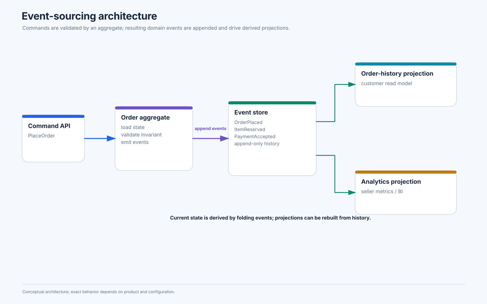
14.2 Aggregate and command handling
An aggregate is a consistency boundary that handles commands and
enforces business invariants. A command such as
Withdraw(200) loads or reconstructs aggregate state,
verifies sufficient funds, and appends MoneyWithdrawn with
the expected aggregate version.
Optimistic concurrency control prevents two writers from appending events against the same old version. If one command tries to append with expected version 17 after another has already advanced the stream to 18, the append fails and the command handler must reload/re-evaluate.
An event should represent a fact that was accepted. Do not append
WithdrawalRequested as if the withdrawal had succeeded
unless the domain explicitly models a request state separately from the
completed withdrawal.
14.3 Event replay and projections
A projection consumes events to build a query-oriented representation: - Current account balance. - Customer transaction history. - Daily spending aggregates. - Seller order dashboard. - Search index.
Rebuilding a projection means replaying the event stream into a fresh projection. This is valuable after a bug fix or schema/read-model change.
Replay must not blindly repeat external side effects. Replaying
PaymentCaptured into an email sender must not send every
historical receipt again. Separate state reconstruction from effectful
integration, use replay modes, suppress external side effects, or make
effects idempotent and explicitly scoped.
14.4 Snapshots
If an aggregate has 10 million events, replaying the whole history for each command is expensive. A snapshot stores a derived state at event version . Reconstruction starts from that snapshot and applies only later events:
Snapshots are performance optimizations, not the source of truth. They should be reproducible and versioned. A bug in snapshot serialization or an incompatible aggregate code change must not permanently corrupt the event history. A robust design can discard and rebuild snapshots.
Snapshot example
- Stream has versions 1 through 1,000,000.
- Snapshot at version 990,000 stores current balance and other aggregate state.
- To load version 1,000,000, read the snapshot and apply 10,000 later events.
- If the snapshot is invalid, rebuild from an older snapshot or from the event stream.
Diagram
Filename:
event-replay-and-snapshots.svg
- Purpose: Show how a snapshot reduces the amount of event history required to reconstruct current state.
- Components and labels: Event stream v1…v1,000,000, snapshot at v990,000, replay engine, current aggregate state.
- Relationships and flow: Replay begins at a valid snapshot and applies subsequent events; full replay remains the recovery alternative.
- Learning objective: Understand that snapshots accelerate reconstruction but do not replace the authoritative event history.
- Suggested layout: Long event timeline with snapshot
marker and short replay segment to the current version.
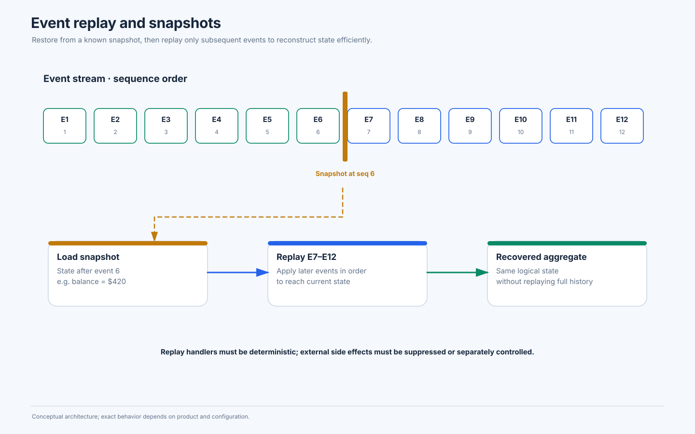
14.5 Event schema evolution
Events may live for years. Consumers deployed today must understand records written by old application versions. Strategies include: - Add optional fields with stable defaults. - Avoid changing the meaning of an existing field. - Version event types when semantics change. - Use upcasters to convert old representations into a current in-memory model. - Preserve original stored events unless there is a deliberate migration policy. - Test replay of representative historical events.
A new field can be backward compatible if old readers ignore unknown
fields and new readers have safe defaults. Renaming or changing the
units of an existing field is often breaking. amount=100 is
ambiguous without currency and unit conventions.
14.6 Event sourcing trade-offs
Benefits - Complete state-transition history. - Strong auditability when event governance is correct. - Temporal queries and historical reconstruction. - Replay to build new projections. - Clear domain language for state changes. - Natural integration with append-only logs.
Costs - More complex command and concurrency handling. - Event-schema evolution over long retention periods. - Projection lag and rebuilding operations. - Snapshot management. - Storage growth and privacy/deletion tension. - Harder ad hoc queries unless read models are maintained. - Need to prevent replay from re-triggering side effects.
Event sourcing is appropriate when history is a first-class business asset: financial ledgers, order lifecycle histories, compliance workflows, and domain aggregates with meaningful state transitions. It is often unnecessary for simple CRUD administration screens or systems where historical transitions add little value.
14.7 Event sourcing vs event-driven architecture
Event-driven architecture is about communication and reactions to events. Event sourcing is about persisting events as the authoritative source of state. A CRUD service can publish integration events without using event sourcing; an event-sourced aggregate can exist inside a system without broadcasting every event to external services.
15. CQRS — Command Query Responsibility Segregation
15.1 Separate the write model and read model
CQRS separates the model used to change state from the model used to query state.
- Command side: Validates intent, enforces business rules, and changes authoritative state.
- Query side: Exposes read-optimized representations for specific query patterns.
- Projection: Transforms events or committed changes into a read model.
- Materialized view: A stored, precomputed query representation.
Example marketplace: - PlaceOrder command goes to an
order aggregate that validates and persists the order. -
OrderPlaced is published after commit. - A projection
updates a customer order-history table. - Another projection updates
seller analytics. - Customer queries read the order-history model;
sellers query a separate analytics model.
The write model is optimized for correctness and transitions; the read models are optimized for access patterns.
15.2 CQRS does not require event sourcing
CQRS can use a conventional relational write database and publish changes through a transactional outbox. The read side can consume events and build search or analytical projections.
Event sourcing can be used without CQRS: one event stream may be the aggregate’s source of truth while reads are served directly from an aggregate reconstruction API or a simple projection.
These are related architectural choices, not synonyms.
15.3 Consistency and projection lag
An asynchronous projection is eventually consistent. If the command side commits at 10:00:00 and the projection catches up at 10:00:02, a query in between may not show the new order.
Possible strategies: - Return the committed command result directly
to the caller. - Show a PROCESSING or UPDATING
state. - Route a read-your-writes request to the authoritative store. -
Carry an expected projection offset/version and wait until the read
model reaches it, with a timeout. - Use synchronous projection updates
for a narrow critical path, recognizing the coupling/latency cost.
Do not promise immediate consistency from an asynchronous read model.
15.4 CQRS trade-offs
| Dimension | Traditional CRUD | CQRS |
|---|---|---|
| Write/read model | Usually shared schema/model | Separately designed models |
| Query optimization | Indexes and queries on common model | Read models can be denormalized per use case |
| Scaling | Often scale one database architecture | Read and write paths can scale independently |
| Consistency | Often one DB transaction provides immediate read-your-writes | Async projections may lag |
| Complexity | Lower | Higher: projection lifecycle, replay, monitoring |
| Best fit | Straightforward applications | Different read/write workloads or rich query views |
CQRS is worth considering when query volume, data shape, or read scalability differs significantly from write requirements. It is not an automatic microservice requirement.
Diagram
Filename: cqrs-architecture.svg
- Purpose: Show distinct command and query paths with projection updates.
- Components and labels: Client commands, command handler, write database/event source, outbox/event stream, projection processors, read databases, query API.
- Relationships and flow: Writes update authoritative state; events update read-optimized projections asynchronously; queries read models.
- Learning objective: Understand separation of write correctness from read optimization and the resulting consistency lag.
- Suggested layout: Write path above, asynchronous
event/projection path in the middle, read query path below.
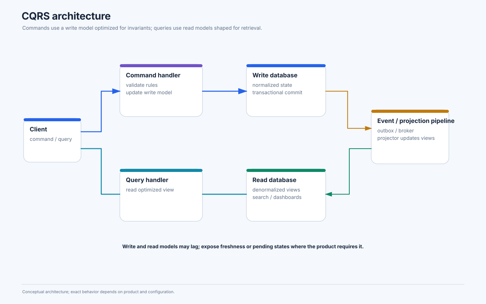
16. Stream Processing Fundamentals
16.1 Batch vs stream processing
Batch processing operates on a bounded dataset: a known file, table snapshot, or interval of records. It is useful for large scans, recomputing historical aggregates, and scheduled ETL.
Stream processing continuously consumes new events and incrementally updates results. The input is conceptually unbounded: the system cannot wait for “the whole dataset” to arrive. It needs state, time semantics, windows, recovery, and a policy for late data.
A stream processor does more than transport messages. It executes operators such as: - Filter: keep records matching a predicate. - Map/transform: derive a new record. - KeyBy/group: route related records together. - Aggregate: maintain counts, sums, averages, or custom state. - Join: correlate two streams or a stream and a bounded reference dataset. - Window: group events by time or session. - Enrich: attach reference data. - Sink: write results to another topic, database, object store, or service.
16.2 Stateless vs stateful operators
A stateless operator processes each record independently. For example, converting temperature from Celsius to Fahrenheit does not require remembering earlier events.
A stateful operator remembers information across records. A fraud detector might maintain the total transaction value for each account over the last ten minutes. A sessionizer remembers the most recent event time for each user. State creates operational requirements: - Partition state by key. - Snapshot state for recovery. - Clean up expired state. - Rescale state when parallelism changes. - Handle duplicate and late records. - Avoid hot keys and unbounded state growth.
16.3 Processing-time, ingestion-time, and event-time
- Processing time: When the operator processes a record.
- Ingestion time: When the system records that the event entered the streaming platform or source.
- Event time: Timestamp associated with when the event occurred in the business or source domain.
These can differ significantly. A driver completes a trip at 10:00, the mobile device is offline, the event reaches the server at 10:05, and the stream operator processes it at 10:05:02. Processing-time analytics may classify it in a 10:05 window; event-time analytics places it in the 10:00 window.
16.4 Why streaming engines are needed
Consider payment events. A fraud system wants rolling sums, velocity rules, device/account joins, and alert generation. A batch job run every hour would be too slow for intervention and would repeatedly scan historical data. A stream processor maintains per-account state and updates risk signals as events arrive.
A stream processor still depends on a broker or source. Kafka stores and distributes records; Flink or Spark computes over them. These components have different roles: - Broker: durable event distribution, retention, offsets. - Stream processor: stateful transformation, windows, joins, checkpointing. - Sink: durable output or external side effect.
Diagram
Filename:
stream-processing-overview.svg
- Purpose: Show the separation between event transport and continuous computation.
- Components and labels: Sources, Kafka/Pulsar broker, stream source operator, filter/map, keyed state, windows, sink, checkpoint storage.
- Relationships and flow: Events enter the broker, are consumed by operators, transformed and aggregated, then written to sinks.
- Learning objective: Distinguish message transport from stateful computation and recovery.
- Suggested layout: Left-to-right pipeline with a
separate state/checkpoint sidecar under the processing layer.
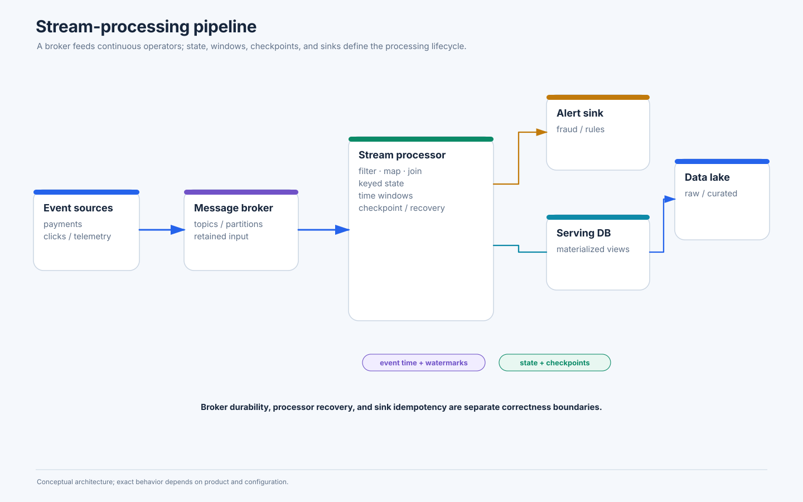
17. Apache Flink
17.1 Architecture and execution model
Apache Flink is a distributed processing engine for bounded and unbounded data processing. A Flink application defines a dataflow graph of sources, operators, and sinks. The runtime schedules that graph across a cluster.
Core concepts: - JobManager: Coordinates job scheduling, execution, checkpoints, and recovery. - TaskManager: Worker process that executes tasks and hosts task slots. - Job graph: Logical representation of transformations. - Execution graph: Runtime execution plan with parallel subtasks. - Operator: A logical processing stage. - Subtask: One parallel instance of an operator. - Task slot: Resource allocation unit within a TaskManager. - Keyed stream: Records partitioned by key so keyed state is local to the corresponding operator subtask. - Operator state: State associated with an operator instance rather than a keyed entity. - Checkpoint: Consistent snapshot used to recover the job. - Savepoint: User-triggered, durable snapshot commonly used for controlled upgrades, migrations, or operational actions. Exact lifecycle and compatibility depend on state format and version.
A logical pipeline such as
source → parse → keyBy(account_id) → window → aggregate → sink
is expanded into parallel subtasks. Network shuffles redistribute
records between stages when a key-based partitioning boundary is
crossed.
17.2 Keyed and operator state
A keyed fraud rule may store rolling transaction totals for each
account. keyBy(account_id) ensures all records for one key
are routed to the same keyed operator subtask. Keyed state can include
values, lists, maps, reducing state, or window contents.
Operator state belongs to a subtask as a whole, such as source split assignment or a custom operator’s partition-local state. During rescaling, Flink redistributes state according to the operator’s state semantics. A system must consider state size and redistribution cost when changing parallelism.
State TTL and cleanup reduce unbounded growth, but expiry is not a substitute for business correctness. A fraud rule that forgets an account’s history too early may weaken detection. A session operator must expire state according to event-time and lateness policy, not merely arbitrary wall-clock cleanup.
17.3 Checkpointing and consistent recovery
Flink checkpoints periodically capture a consistent view of operator state and source positions. The checkpoint barrier mechanism is related to distributed snapshot ideas: barriers flow through the dataflow, and operators snapshot state at a consistent point relative to the inputs.
Simplified flow: 1. The checkpoint coordinator initiates checkpoint . 2. Sources snapshot their positions and inject barriers into output streams. 3. Operators process records and barriers in order. 4. An operator snapshots state when the barrier reaches its inputs, accounting for alignment or unaligned checkpoint behavior. 5. State is persisted to configured durable storage. 6. A checkpoint is considered complete when required tasks report success. 7. On failure, the job restores the last completed checkpoint and replays source input from the saved positions.
Aligned checkpoints
With aligned checkpoints, an operator may wait for barriers from all inputs before snapshotting. Records from inputs whose barriers have already arrived are held until alignment completes. This gives a clear consistent cut but alignment can be delayed by backpressure or skew.
Unaligned checkpoints
Unaligned checkpoints can include in-flight data buffers in the snapshot, reducing barrier-alignment delay under backpressure. They trade larger/more complex checkpoint state and I/O for progress in situations where alignment would otherwise take too long. Exact eligibility and tuning are version/configuration-dependent.
17.4 Exactly-once state vs exactly-once sinks
Flink’s checkpointing can provide exactly-once recovery of operator state and source progress when the source supports restoring positions and the checkpoint process completes.
External effects are a separate question. A sink must participate in a compatible commit protocol or be idempotent. For example: - A transactional Kafka sink can coordinate writes with checkpoint completion using Kafka transactions. - A database sink may use two-phase commit support or idempotent upserts. - An HTTP API generally needs an idempotency key or reconciliation; Flink cannot make an arbitrary HTTP endpoint transactional.
Therefore, “Flink exactly once” should be read as a scoped claim about the configured source, processing state, and sink integration—not a blanket promise about every side effect.
17.5 Backpressure and checkpoints
If a sink slows down, buffers fill and upstream operators can no longer emit at their normal rate. Backpressure propagates upstream. It can cause: - Increased event latency. - Longer checkpoint duration. - Barrier alignment delays. - Growing source lag. - State and buffer pressure.
Track busy time, backpressured time, idle time, checkpoint duration, alignment duration, state size, source lag, and sink latency. A high-level job being “RUNNING” does not mean it is keeping up.
Diagram
Filename:
flink-distributed-execution.svg
- Purpose: Show a Flink job graph distributed over JobManager and TaskManagers.
- Components and labels: JobManager, TaskManagers, task slots, parallel source/map/keyBy/window/sink subtasks, network shuffle.
- Relationships and flow: JobManager schedules; TaskManagers execute parallel operators; keyBy causes repartitioning between stages.
- Learning objective: Understand logical operators vs parallel subtasks and the control/worker roles.
- Suggested layout: Coordinator above multiple worker
boxes, with parallel operator columns across workers.
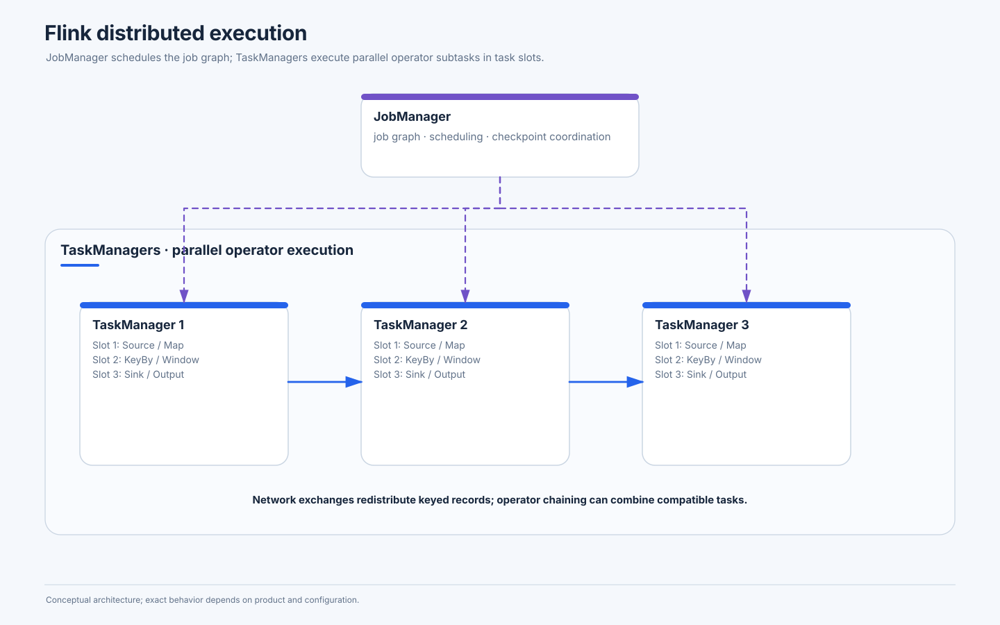
Diagram
Filename: flink-checkpointing.svg
- Purpose: Visualize checkpoint barriers and consistent state snapshots.
- Components and labels: Sources with offsets, parallel operators, barrier , state backend, checkpoint storage, sink transaction.
- Relationships and flow: Barriers flow through operator channels; state and source progress are snapshotted; recovery restores checkpoint state and positions.
- Learning objective: Understand how input positions and operator state are coordinated, and why a sink must cooperate for end-to-end exactly-once effects.
- Suggested layout: Multi-lane dataflow showing
barriers crossing operators and snapshots flowing downward to durable
storage.
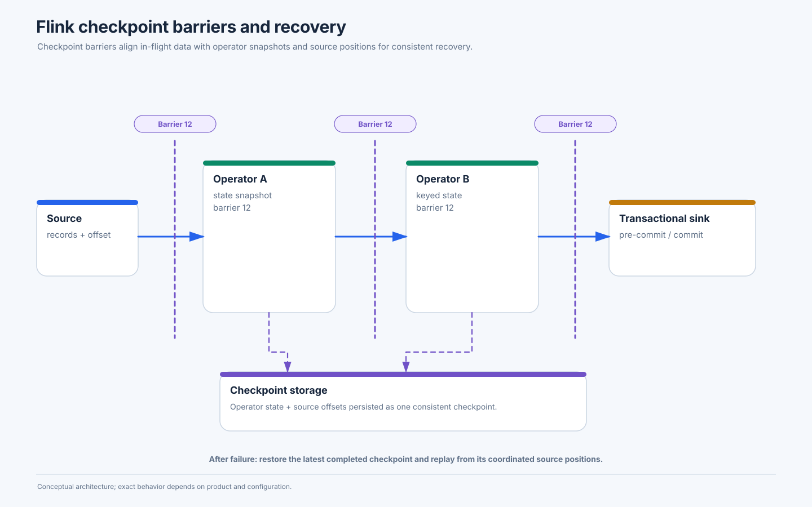
18. Spark Structured Streaming
18.1 Programming and execution model
Spark Structured Streaming expresses streaming computations through the structured DataFrame/Dataset and SQL model. A query describes transformations over an unbounded input. The engine executes the computation incrementally and persists progress in checkpoint metadata.
The common micro-batch model divides the input into small batches: 1. A trigger starts a micro-batch. 2. The engine determines input ranges/offsets for that batch. 3. The query plan processes those records. 4. Stateful operators update state. 5. The sink writes output. 6. Progress and state metadata are checkpointed so the query can recover.
Micro-batch execution provides a practical balance for analytical ETL and second/subsecond-to-minute use cases, depending on workload and configuration.
Spark also has continuous/real-time processing modes whose operator, sink, and guarantee support differ from standard micro-batch execution and varies by Spark release. Do not assume that every DataFrame operation or sink works in every mode. The official Spark documentation currently describes its Structured Streaming execution modes and supported constraints; check the exact release deployed.
18.2 Numerical micro-batch example
Assume: - Input rate = 100,000 events/s. - Trigger interval = 2 seconds. - Average event size = 1 KiB. - A batch is fully processed in 1.4 seconds under normal load.
Events accumulated per trigger:
Approximate raw payload per batch:
If the query completes in 1.4 seconds, it has 0.6 seconds of nominal slack before the next 2-second trigger. The actual scheduling and backlog behavior depends on trigger policy, source capacity, state operations, and whether a batch takes longer than the interval.
If each batch takes 2.8 seconds, processing capacity is below the arrival rate under this simplified assumption. Backlog grows. Increasing trigger frequency does not fix insufficient compute; optimize or scale the pipeline and monitor input rows per second vs processed rows per second.
18.3 Checkpoints and output modes
Checkpoint locations store offsets/progress, state, and query metadata needed for restart. Stateful queries generally require a stable checkpoint location. Deleting or changing checkpoint state can cause reprocessing, invalid state recovery, or changed query identity semantics.
Common output modes: - Append: Emit rows that are final for the query’s semantics. - Update: Emit rows that changed since the previous trigger. - Complete: Emit the entire result table each trigger, where supported and appropriate.
The allowed modes depend on aggregation/window semantics and sink capabilities. A sink may need idempotent writes or transactional support to avoid duplicates after failure.
18.4 Exactly-once considerations
Spark’s end-to-end fault-tolerance claims are based on the source, checkpoint/offset management, and sink semantics. A supported transactional sink may achieve exactly-once results for a specific configuration. A generic external API does not become transactional merely because Spark checkpoints offsets.
For example, a query writes an invoice record to a relational database and then crashes before the streaming checkpoint records completion. On restart, the batch may be replayed. Use an upsert keyed by stable event ID, a uniqueness constraint, or a sink transaction integrated with the batch identity.
18.5 Flink vs Spark Structured Streaming
| Dimension | Flink | Spark Structured Streaming |
|---|---|---|
| Core model | Continuous dataflow runtime | Structured query execution, commonly micro-batch |
| Typical strength | Stateful event-time pipelines and low-latency continuous processing | Unified SQL/DataFrame analytics, ETL and batch/stream integration |
| Event time | Rich event-time operators and watermarks | Event-time windows and watermarks |
| State | Keyed/operator state with checkpoint/recovery | Stateful query operators with checkpointed state |
| Checkpointing | Distributed snapshots and barriers | Query progress/state checkpointing |
| Processing latency | Can be very low with suitable topology | Micro-batch latency is bounded by trigger and batch execution; other modes are version/feature dependent |
| Exactly-once | Depends on source and sink integration | Depends on source, checkpoint, and sink integration |
| Batch integration | Supports bounded/batch workloads in unified runtime | Strong integration with Spark SQL and batch workloads |
| Operational concerns | Job graph, task slots, state/checkpoint tuning, backpressure | Query plans, trigger intervals, checkpoint state, shuffle and state-store tuning |
| Best fit | Complex stateful, event-time-centric pipelines | Unified data engineering, SQL analytics, micro-batch ETL and supported streaming workloads |
The best engine is the one whose latency, state, event-time, connector, operational, and team requirements match the workload. Benchmark representative logic rather than comparing product labels.
Diagram
Filename:
spark-structured-streaming.svg
- Purpose: Show a Spark Structured Streaming micro-batch pipeline and checkpoint path.
- Components and labels: Source, offset log, trigger, micro-batch execution, state store, sink, checkpoint directory.
- Relationships and flow: Trigger selects an input range; batch processes records and state; sink commits output; checkpoint records progress for recovery.
- Learning objective: Understand micro-batch scheduling and why checkpoint/sink semantics determine recovery behavior.
- Suggested layout: Timeline of successive batches
above an execution block, with checkpoint storage below.
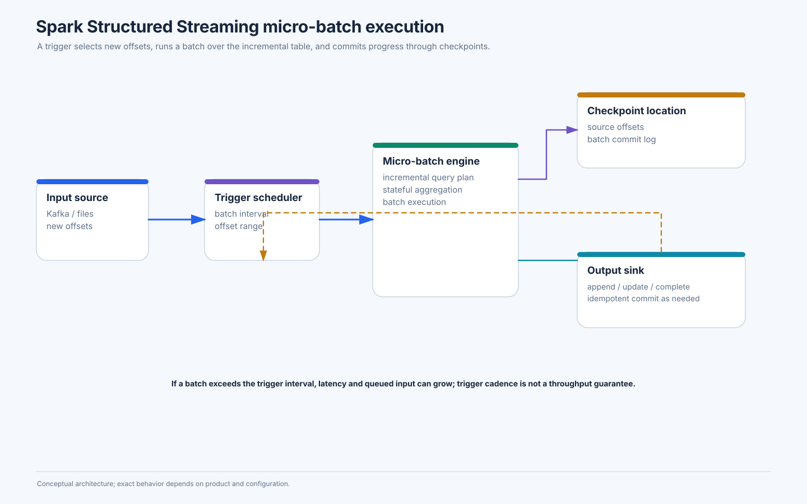
19. Windowing in Stream Processing
19.1 Why windows exist
A stream is unbounded, but many questions refer to a finite period: - How many payments occurred in the last five minutes? - What was the average sensor reading per hour? - How long was a user’s browsing session? - How many failed logins occurred in a rolling ten-minute interval?
A window assigns events to a finite group so a stateful operator can aggregate and eventually clean up its state. The event-time or processing-time basis, trigger policy, lateness allowance, and cleanup rule determine when results are emitted and whether they can later be revised.
19.2 Tumbling windows
A tumbling window has a fixed duration and no overlap. A five-minute
window might cover [10:00, 10:05), followed by
[10:05, 10:10). An event exactly at 10:05 belongs to the
second interval under this half-open convention.
Use cases: - Transactions per five-minute bucket. - Hourly energy consumption. - Daily revenue totals.
Tumbling windows are easy to explain and keep each event in one window for a given key/window configuration.
19.3 Sliding windows
A sliding window has a fixed size and advances by a smaller slide interval, causing overlap. For a 10-minute window updated every minute, an event can contribute to multiple output windows.
Use cases: - Rolling average traffic over the previous 10 minutes. - Rolling fraud velocity. - Current system load.
Sliding windows can create more state and repeated computation because one event participates in multiple windows. A five-minute length sliding every 30 seconds can create many more window memberships than a five-minute tumbling window.
19.4 Session windows
A session window is defined by activity separated by an inactivity gap. It is not a fixed calendar bucket.
Given a five-minute inactivity gap and events at: - 10:00:10 - 10:01:20 - 10:02:40 - 10:09:00 - 10:09:30
The first three events form one session because each gap is less than five minutes. The next event at 10:09:00 is more than five minutes after 10:02:40, so it starts a new session; 10:09:30 joins that second session. The first session’s end boundary is determined by the last event plus the inactivity gap, subject to the engine’s window conventions and watermark/late-event policy.
Late events can merge sessions if they arrive within the allowed lateness horizon. This means an output session may be revised rather than treated as immutable immediately.
19.5 Window comparison
| Window | Boundary | Overlap | Typical state | Example |
|---|---|---|---|---|
| Tumbling | Fixed, aligned, non-overlapping | No | One accumulator per key/window | Sales per minute |
| Sliding | Fixed length, smaller slide | Yes | Multiple active accumulators | Trailing 10-minute average every minute |
| Session | Dynamic inactivity gaps | Sessions may merge | Active session per key and extensions | User visit/session |
| Global | Entire stream/key scope until trigger | Not inherently time-bounded | Potentially unbounded without trigger/cleanup | Custom aggregation with explicit trigger |
A global window needs explicit triggers and state management; otherwise state may grow without bound.
Diagram
Filename:
stream-processing-window-types.svg
- Purpose: Compare tumbling, sliding, and session window assignment on one event timeline.
- Components and labels: Event timestamps, 5-minute tumbling intervals, 10-minute sliding windows with 1-minute slide, session gap boundary.
- Relationships and flow: Events are assigned to one or more windows according to each window definition.
- Learning objective: Understand overlap, fixed boundaries, session formation, and the effect on state.
- Suggested layout: Three aligned horizontal
timelines with colored window bands and event markers.
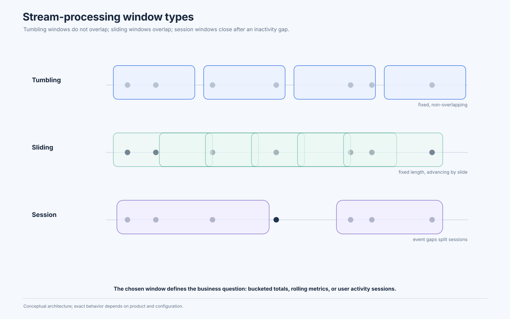
20. Event Time, Processing Time, and Watermarks
20.1 The out-of-order event problem
Distributed networks, mobile devices, buffering, retries, and source-clock differences mean events may arrive out of the order in which they occurred.
Example: A driver completes a ride at 10:00. The phone is offline and publishes the event at 10:05. A stream processor receives it at 10:05:02. Processing-time aggregation classifies the event around 10:05; event-time aggregation assigns it to 10:00.
Event time is useful for analytics that should reflect when an event happened, such as ride completion by minute. Processing time is useful for operational questions such as when the processing system handled a record.
20.2 Watermarks
A watermark is the stream processor’s estimate that it has likely seen events up to a particular event-time timestamp. It is a progress signal, not proof that no earlier event can ever arrive.
If watermark , the system is asserting progress through roughly that event time according to its watermark strategy. An event timestamped 10:00:10 arriving after this point is late relative to the watermark.
A common bounded-out-of-orderness strategy tracks the maximum event timestamp seen and subtracts an allowance :
This is an illustrative model. Actual watermark generation depends on the source and framework and may use periodic emission, partition coordination, idleness detection, or connector-specific logic.
20.3 Numerical watermark example
Events arrive in this order: - 10:00:10 - 10:00:25 - 10:00:18 - 10:01:05 - 10:00:30
Assume an illustrative 20-second out-of-orderness allowance, so .
| Arrival | Event time | Maximum seen | Illustrative watermark |
|---|---|---|---|
| 1 | 10:00:10 | 10:00:10 | 09:59:50 |
| 2 | 10:00:25 | 10:00:25 | 10:00:05 |
| 3 | 10:00:18 | 10:00:25 | 10:00:05 |
| 4 | 10:01:05 | 10:01:05 | 10:00:45 |
| 5 | 10:00:30 | 10:01:05 | 10:00:45 |
At arrival 5, the 10:00:30 event arrives behind the watermark 10:00:45, so it is late under this simplified policy. Whether it is dropped, sent to a side output, or used to revise a window depends on allowed lateness and trigger behavior.
The example demonstrates a key trade-off: a larger out-of-order allowance delays finalization but admits more late data; a smaller allowance reduces result latency but rejects or separately handles more delayed events.
20.4 Multiple partitions and idle inputs
A multi-input operator may need to consider watermarks from several source partitions. A slow or idle partition can prevent the global/operator watermark from advancing if the engine waits for the minimum watermark across inputs. Many frameworks provide idleness handling so a genuinely inactive partition does not stall all windows indefinitely.
Idleness must be chosen carefully. A partition that is temporarily quiet but later resumes with old event-time records may generate many late events. Monitor watermark lag by source/partition, not only one global value.
20.5 Late-data policies
Common strategies: - Drop: Discard events later than the allowed threshold. Appropriate only when the business accepts bounded incompleteness. - Side output: Route late events for separate correction or audit. - Allowed lateness: Keep window state for a period after the initial result and accept updates. - Upsert corrections: Emit revised aggregate values with stable window keys and versions. - Recompute: Rebuild affected outputs from retained source events.
Late-data policy must be reflected in downstream semantics. If a dashboard sees “revenue = 10,000” and then a late event changes it to 10,100, the sink must support updates rather than assuming every emitted aggregate is final.
Diagram
Filename:
event-time-watermark-processing.svg
- Purpose: Show out-of-order arrivals, watermark progress, window closure, and a late event.
- Components and labels: Event-time axis, arrival-time axis, records with timestamps, watermark line, window, late-event side output.
- Relationships and flow: Watermark advances based on observed event time and configured allowance; a delayed record lands behind it and follows lateness policy.
- Learning objective: Understand watermarks as progress estimates and the latency/completeness trade-off.
- Suggested layout: Two-dimensional
arrival/event-time chart with a horizontal watermark line and a
late-event path.
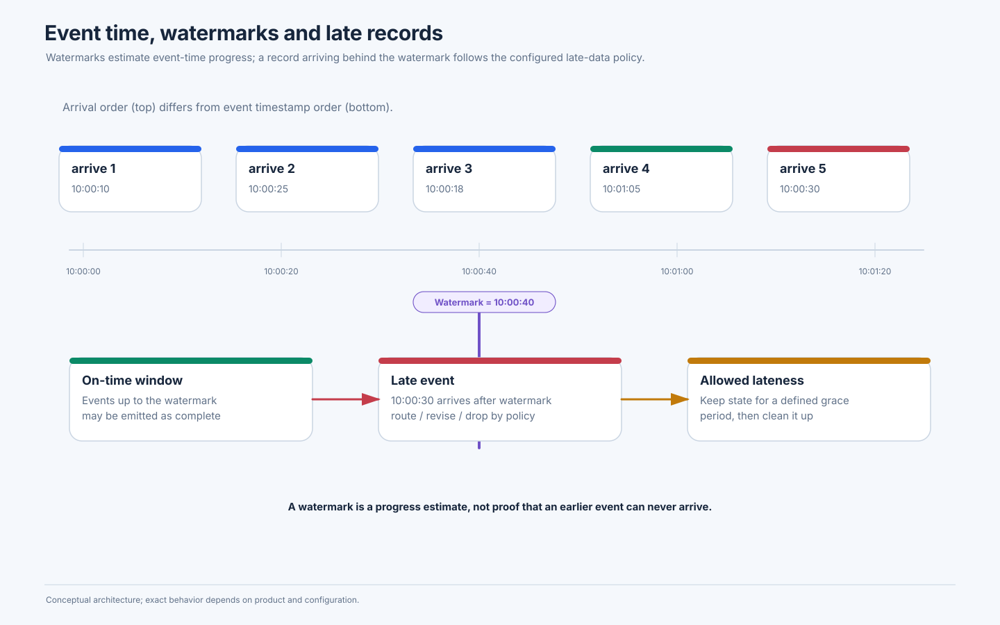
21. Change Data Capture (CDC)
21.1 What CDC captures
Change Data Capture observes changes made to a database and makes them available to downstream systems. Change events commonly describe inserts, updates, and deletes. CDC can feed search indexes, analytics, data lakes, caches, replication systems, and event-driven integrations.
CDC is valuable when the database is authoritative but multiple downstream systems need to learn about committed changes. It avoids forcing every application code path to perform a second independent publish operation.
21.2 CDC approaches
Polling-based CDC
A process repeatedly queries rows updated since a high-water mark,
such as updated_at > last_seen. It is easy to understand
but has limitations: - Deletes may be missed unless soft deletes or
tombstones are used. - Timestamp collisions and clock behavior
complicate exact progress. - Large scans create database load. - A
transaction changing multiple rows may be observed incompletely. -
Polling interval trades latency for load.
A monotonically increasing sequence can improve polling, but it still needs careful treatment of committed visibility and transaction ordering.
Trigger-based CDC
Database triggers write changes into an audit/change table. This can provide a custom event representation and transactionally record changes, but adds write-path work and schema/trigger operations. Poorly designed triggers can slow transactions or create recursion and operational complexity.
Log-based CDC
Log-based CDC reads the database’s transaction log or change stream: - PostgreSQL: logical decoding/WAL and a logical replication slot/output plugin. - MySQL: binary log (binlog). - SQL Server: CDC/change tracking and log-based mechanisms depending on feature/configuration. - MongoDB: change streams built on its replication/oplog infrastructure.
Log-based CDC can capture committed database changes with lower query overhead than repeated full-table polling, but it introduces connector offsets, log-retention requirements, snapshot coordination, and database-specific semantics.
21.3 Debezium and Kafka Connect
Debezium is a CDC platform with connectors for supported databases. Kafka Connect provides a runtime for connector configuration, task execution, offsets, and integration with Kafka. A typical architecture is:
- Source database commits a transaction.
- Database log records the committed change.
- Debezium connector reads the log or database change stream.
- Connector converts the change into a structured change-event envelope.
- Kafka Connect publishes the event to Kafka.
- Connector progress/offset information is persisted.
- Downstream consumers update search, analytics, cache, or data-lake systems.
A change event may include: - before: prior row values,
when available/configured. - after: new row values. -
source: database, table, log position, transaction
metadata, connector metadata. - op: operation type such as
create/read/update/delete depending on connector/envelope convention. -
ts_ms or related timestamps. - Schema information in
connector-dependent form.
Do not assume all database connectors expose the same metadata or guarantee the same transaction boundary behavior.
21.4 Snapshot plus streaming
When a connector starts, it may need to establish an initial consistent view of existing rows. It takes a snapshot and then streams changes from a log position coordinated with that snapshot.
Conceptually: 1. Establish a database-log position or snapshot boundary. 2. Read a consistent table snapshot. 3. Publish snapshot rows. 4. Continue consuming changes from the corresponding log position. 5. Track connector offsets so restart can resume.
The key correctness requirement is avoiding a gap between the snapshot and the stream. A change committed while the snapshot is being taken must appear either in the snapshot view or in the subsequent change stream, according to the connector’s protocol. Duplicates may still be possible across failure/restart boundaries, so consumers should be idempotent.
For PostgreSQL, Debezium’s connector uses logical decoding and a consistent initial snapshot, then continues reading committed row changes. The connector’s documentation describes how the snapshot and WAL position avoid missing changes during the transition: Debezium PostgreSQL connector.
21.5 Database-specific characteristics
| Source | Change mechanism | Important operational concern |
|---|---|---|
| PostgreSQL | WAL logical decoding via replication slot/output plugin | Replication slots can retain WAL; monitor slot lag and disk growth |
| MySQL | Binlog | Binlog retention must exceed outage/recovery needs; row image and GTID settings matter |
| SQL Server | CDC tables/transaction-log capture depending on configuration | Capture jobs, cleanup, retention and permissions are relevant |
| MongoDB | Change streams | Resume tokens/oplog history and replica-set/sharded-cluster configuration matter |
Connector configuration and support evolve. Validate supported database versions, snapshot modes, transaction metadata, and schema-change behavior for the exact connector release.
21.6 CDC ordering and transactions
A database transaction may modify many rows. A CDC connector may emit multiple row change records associated with one transaction. If downstream logic requires transaction-level atomic interpretation, it needs transaction metadata/boundaries and a design that buffers or applies the set coherently. A stream of row changes is not automatically equivalent to a high-level domain event.
Use a stable source identity: - Database/server identity. - Table/key. - Log position or connector source offset. - Transaction ID where supported. - Event ID constructed according to connector semantics.
This supports deduplication and deterministic sink updates.
21.7 CDC vs event sourcing
CDC captures the resulting database changes. Event sourcing stores business events as the source of truth.
Example: - CDC record: orders row changed from status
PENDING to PAID. - Domain event:
OrderPaymentCaptured with payment reference, actor,
business reason, and aggregate version.
The row update may omit the business intent and the sequence of intermediate decisions. CDC is excellent for integration and replication; domain events are better when consumers require explicit business semantics.
21.8 CDC vs application dual writes
If an application updates a database and independently publishes to Kafka: - DB commit can succeed while publish fails. - Publish can succeed while DB transaction rolls back. - A process crash can occur between the two.
CDC reads the committed database log and can publish changes after commit, avoiding this direct dual-write gap. It does not automatically turn raw row changes into domain events or guarantee end-to-end sink effects. A transactional outbox is another pattern: the application writes business data and a semantic event record to the same database transaction, and CDC transports the outbox rows.
Diagram
Filename:
debezium-cdc-architecture.svg
- Purpose: Show log-based CDC from a database to Kafka and downstream systems.
- Components and labels: PostgreSQL WAL/MySQL binlog, Debezium connector, Kafka Connect, Kafka topics, search index, data lake, analytics consumer.
- Relationships and flow: Database commits; connector reads the log; change events are published; multiple downstream consumers apply them.
- Learning objective: Understand how CDC exposes committed data changes without a separate application dual write.
- Suggested layout: Source database and log on left,
connector runtime in center, Kafka and multiple sinks on right.
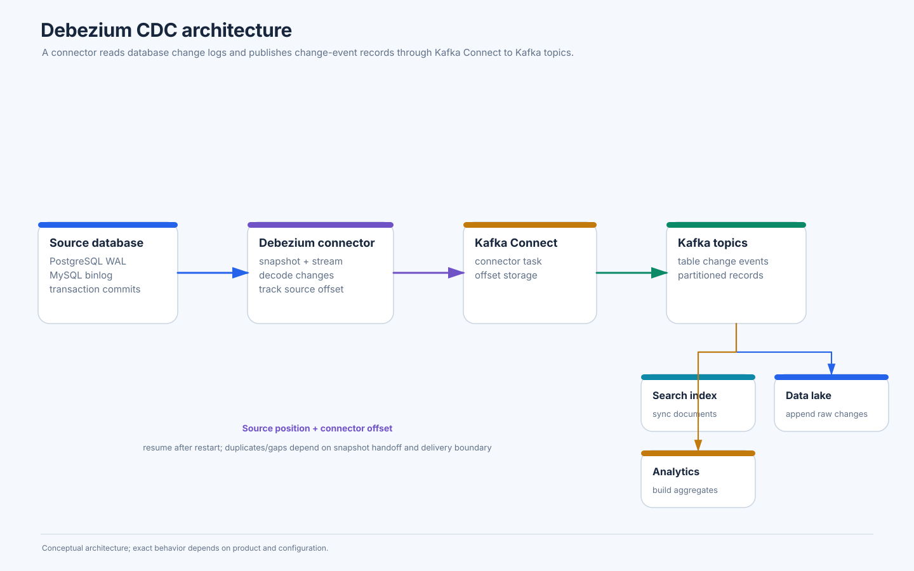
Diagram
Filename:
cdc-snapshot-and-streaming.svg
- Purpose: Show transition from initial snapshot to ongoing log streaming.
- Components and labels: Snapshot boundary, source tables, WAL/binlog position, snapshot records, change events, connector offset.
- Relationships and flow: Connector captures a consistent boundary, emits snapshot, then resumes log changes from the matching position.
- Learning objective: Understand why snapshot coordination is necessary to avoid gaps and why restart can still require duplicate-safe consumers.
- Suggested layout: A time axis with an overlapping
snapshot interval and log stream, with the handoff boundary clearly
marked.
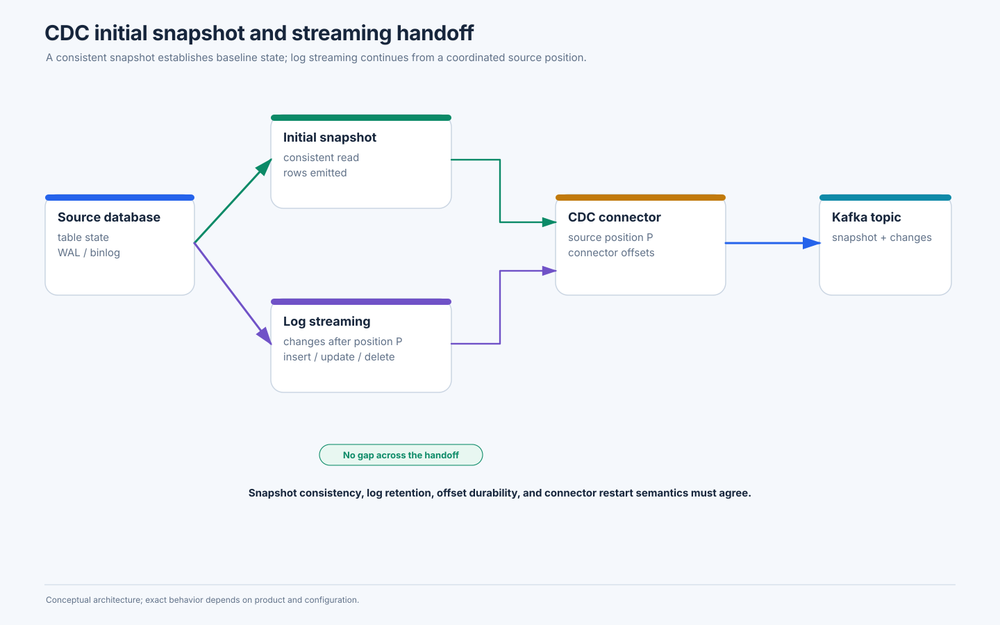
22. Schema Evolution and Message Contracts
22.1 Why schemas matter
A message schema is a contract between independently deployed producers and consumers. A producer can be upgraded while older consumers continue reading. A consumer can be deployed before or after a producer. Without compatibility rules, a seemingly minor field change can break a downstream service hours or days after release.
Common serialization formats include: - JSON: Human-readable, flexible, but field types and defaults need governance. - Avro: Compact binary encoding with schema-based evolution rules; often used with a schema registry. - Protocol Buffers: Strongly typed schema and field-number evolution rules. - JSON Schema: Schema validation for JSON documents.
Serialization format alone does not ensure compatibility. Versioning, field semantics, default behavior, consumer tolerance, and deployment sequencing matter.
22.2 Compatibility definitions
- Backward compatibility: New consumer/schema can read data written with an older schema.
- Forward compatibility: Older consumer/schema can read data written with a newer schema, within the format’s rules.
- Full compatibility: Both backward and forward compatibility are supported under the registry’s defined mode.
- Transitive compatibility: Compatibility is checked against more than the immediately previous schema, often all earlier versions.
Registries may define compatibility modes at subject/topic level. Exact semantics differ by registry and format.
22.3 Example: adding fields
Original order event:
New producer adds:
{
"order_id": "O-814",
"customer_id": "C-71",
"total_amount": 1499.00,
"currency": "INR",
"discount_amount": 100.00
}This can be compatible if old consumers ignore unknown fields and new consumers can safely handle old events where the new fields are absent or have valid defaults. It is not safe to assume every serializer or strict consumer behaves that way.
Potential breaking changes: - total_amount changes from
decimal rupees to integer paise with no field/semantic version change. -
customer_id changes type from string to object. - Required
fields are added without a default for historical events. - A field is
removed before all consumers have stopped using it. - A field name
remains the same but its business meaning changes.
22.4 Schema registry and deployment strategy
A schema registry can: - Store schema versions. - Assign schema identifiers. - Validate compatibility during registration. - Help consumers resolve schema when decoding. - Provide a central place for contract governance.
A safe rollout often follows: 1. Deploy consumers that tolerate both old and new forms. 2. Register a compatible schema. 3. Deploy producers that emit the new form. 4. Observe old/new consumer behavior. 5. Remove legacy support only after all producers and consumers are migrated and retained historical records are considered.
For event-sourced history or long-retention Kafka topics, old records remain relevant even after producers stop emitting them. Upcasters or multi-version readers may be necessary.
Diagram
Filename:
event-schema-evolution.svg
- Purpose: Show schema versions and compatibility across independently deployed producers and consumers.
- Components and labels: Producer v1/v2, schema registry, schema IDs, consumer v1/v2, compatible field addition, breaking field change.
- Relationships and flow: Producer registers/uses schema; records carry schema identity; consumers resolve and decode; compatibility gate prevents unsafe changes.
- Learning objective: Understand schema as a long-lived contract, not just a serialization detail.
- Suggested layout: Version timeline across top and
producer/registry/consumer lanes below, with compatible and incompatible
paths.
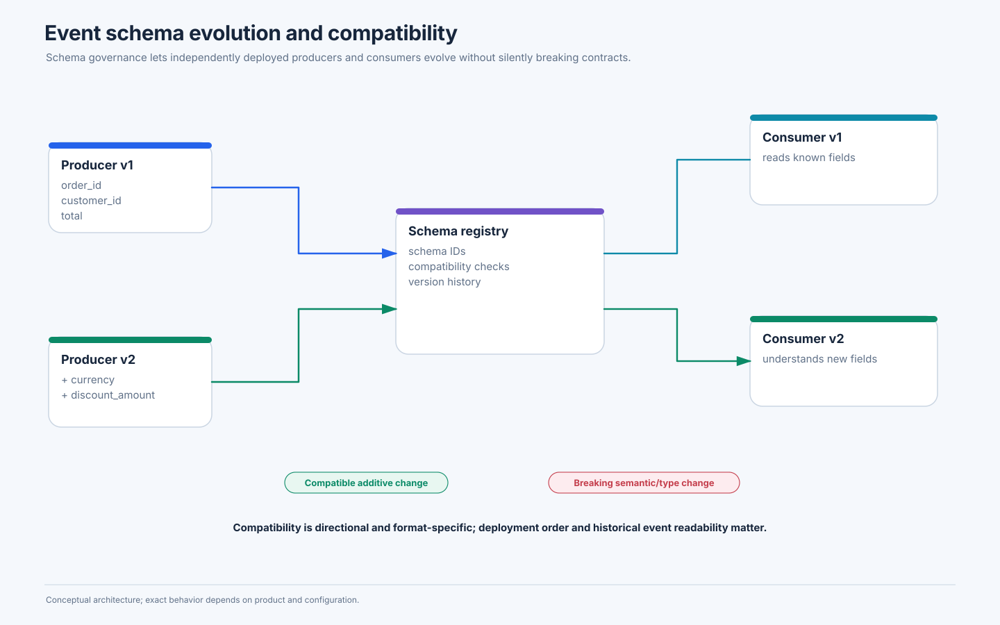
23. Messaging Reliability and Operational Observability
23.1 Observe the whole pipeline
A healthy broker does not imply a healthy pipeline. A producer may be failing to publish, a consumer may be stalled, a downstream database may be saturated, or a CDC connector may be losing its log-retention window.
Measure each boundary:
| Layer | Key metrics | Why they matter |
|---|---|---|
| Producer | send rate, errors, retry count, request latency, buffer wait, dropped records | Detect failure to publish and client-side saturation |
| Broker/cluster | request latency, disk throughput/latency, network, CPU, storage, partitions unavailable | Detect capacity and broker health |
| Kafka replication | under-replicated partitions, ISR changes, follower lag, leader elections | Detect durability and availability risk |
| Consumer | records fetched/processed, processing latency, committed position, lag, rebalance rate | Detect slow or unstable consumption |
| Queue broker | ready/unacknowledged messages, oldest message age, redelivery, consumer count | Detect worker capacity and poison-message loops |
| SQS | visible/in-flight messages, age of oldest message, receive count, DLQ count, API throttling | Detect backlog and failed delivery |
| Stream engine | input/output rate, busy/backpressured/idle time, state size, checkpoint duration/failure | Detect processing and recovery problems |
| Event time | watermark, watermark lag, late-event count, dropped/side-output count | Detect incomplete or delayed event-time results |
| CDC | source log position, connector lag, snapshot progress, task state, slot/binlog retention | Detect risk of losing source history |
| Application workflow | event-to-effect latency, state-transition age, duplicate suppression count, stuck workflow count | Connect infrastructure metrics to business outcomes |
23.2 Important operational definitions
- Consumer lag: Difference between a partition’s latest relevant offset and the consumer group’s committed/processed position. Offset arithmetic is useful, but record age and processing latency often communicate impact better.
- Under-replicated partition: A partition whose assigned replica set is not fully in sync.
- Oldest message age: How long the oldest unprocessed queue item has waited. This is often more meaningful than raw depth.
- Checkpoint duration: Time from checkpoint start to completion; rising duration can indicate backpressure, state growth, slow storage, or skew.
- Watermark lag: Difference between observed event-time progress and the watermark used by the operator.
- CDC lag: Difference between the source database log position and connector’s processed/published position. Monitor source log retention as well as connector metrics.
23.3 Troubleshooting scenarios
1. Kafka consumer lag grows continuously
Symptoms: Lag rises for a subset or all partitions; event-to-effect latency increases.
Possible causes: Processing rate below arrival rate, slow DB/API calls, one hot partition, frequent rebalances, too few partitions, serialization bottleneck, or downstream throttling.
Investigation: Compare per-partition lag and record age; inspect processing latency, consumer utilization, poll/rebalance metrics, batch sizes, broker fetch latency, and dependency latency.
Mitigation: Fix the slow dependency, batch safe operations, increase consumer instances up to useful partition parallelism, introduce bounded concurrency, or redesign hot-key partitioning. Do not add consumers blindly if every consumer competes for the same DB connection pool.
Prevention: Capacity test with realistic keys and payloads; set lag/age SLOs; autoscale on sustained lag and processing capacity, not a single spike.
2. One Kafka partition receives most traffic
Symptoms: One partition has high byte rate and lag; other partitions are idle.
Root cause: Skewed keys, such as one celebrity account or global tenant, map most records to one partition.
Investigation: Measure event rate by key and partition; inspect partitioner and key distribution.
Mitigation: Use a compound/sharded key only if business ordering permits; split a hot entity into controlled substreams and recombine with explicit sequencing if required.
Prevention: Simulate key distribution before deployment and monitor hot keys.
3. Kafka ISR repeatedly shrinks
Symptoms: Under-replicated partitions, ISR churn, write rejections with minimum ISR, or elevated replication lag.
Possible causes: Disk latency, network drops, CPU starvation, broker GC, overloaded replicas, or poor broker placement.
Investigation: Compare leader/follower fetch lag, disk I/O latency, network retransmits, broker logs, and per-broker resource utilization.
Mitigation: Restore capacity, move partitions away from overloaded disks, fix network instability, and avoid unsafe unclean elections without explicit risk acceptance.
Prevention: Failure-domain-aware replica placement, disk/network monitoring, replication headroom, and load tests during broker loss.
4. Producer retries create duplicate business events
Symptoms: Downstream sees repeated
OrderCreated or duplicate side effects.
Possible causes: Retry after uncertain acknowledgment, producer restarted with new identity, application generated a new event ID, or separate requests represented the same action.
Investigation: Compare event IDs, producer IDs/sequence metadata where available, correlation IDs, and source database records.
Mitigation: Use Kafka idempotent producer for producer-protocol retries; use stable application event IDs and consumer deduplication for business duplicates.
Prevention: Persist event ID with the business transaction (outbox) and make business effects idempotent.
5. Consumer rebalance causes processing delays
Symptoms: Throughput drops when members join/leave; partition ownership repeatedly changes.
Possible causes: Slow processing blocks polling, short timeouts, frequent deployments/autoscaling, network instability, or crashes.
Investigation: Inspect group state, rebalance frequency/duration, heartbeat and poll interval behavior, member identity, and worker queue depth.
Mitigation: Keep polling responsive, bound asynchronous work, use pause/resume, tune liveness settings based on actual behavior, and consider cooperative assignment/static membership where suitable.
Prevention: Graceful shutdown, rolling deployment, stable membership, and tests for scaling events.
6. RabbitMQ queue depth grows rapidly
Symptoms: Ready messages and oldest age rise; consumers cannot catch up.
Possible causes: Consumer failure, low prefetch/worker count, slow downstream service, blocked consumers, message-size growth, or routing unexpectedly increasing fan-out.
Investigation: Inspect ready vs unacknowledged counts, consumer count, ack rate, redelivery, broker memory/disk alarms, and downstream latency.
Mitigation: Restore consumers, fix downstream saturation, tune prefetch carefully, and use priority/admission controls if needed.
Prevention: Alerts on age/depth, bounded retries, queue capacity planning, and poison-message isolation.
7. SQS messages are repeatedly redelivered
Symptoms: Approximate receive count rises; duplicate effects; messages repeatedly reappear.
Possible causes: Visibility timeout shorter than processing time, worker crash, failure to delete after success, IAM/API errors, or duplicate delivery inherent to standard queues.
Investigation: Compare processing-time distribution with visibility timeout, inspect delete failures and worker logs, and check DLQ receive counts.
Mitigation: Extend visibility for long jobs; set timeout above normal worst-case duration with margin; use idempotency; fix deletion permissions.
Prevention: Design idempotent consumers and alert on age/receive count.
8. Pulsar backlog increases
Symptoms: Subscription backlog rises; consumers are connected but progress slows.
Possible causes: Consumer processing rate too low, broker dispatch pressure, storage latency, hot partition, or subscription configuration mismatch.
Investigation: Inspect backlog per topic/subscription, dispatch rate, consumer permits, broker and bookie latency, and key distribution.
Mitigation: Scale consumers if subscription type and partitioning permit, fix storage/network bottlenecks, and rebalance topic ownership where appropriate.
Prevention: Load test broker/bookie separation, alert on backlog age, and validate subscription ordering needs.
9. Poison message blocks a pipeline
Symptoms: Same record repeatedly fails; lag cannot advance for a partition or key.
Possible causes: Malformed schema, unhandled enum, corrupted payload, deterministic application bug, or business invariant conflict.
Investigation: Capture event ID/offset, exception, consumer version, schema ID, and failure classification.
Mitigation: If ordering permits, route the message to a DLQ with full metadata. If order is required, block the affected key and repair/replay deliberately.
Prevention: Contract tests, schema compatibility checks, bounded retries, and a documented DLQ ownership process.
10. Flink job experiences backpressure
Symptoms: Backpressured time increases; end-to-end latency and checkpoint duration rise.
Possible causes: Slow sink, skewed key, expensive operator, network shuffle, insufficient slots, or state backend bottleneck.
Investigation: Inspect operator-level busy/backpressured/idle time, task metrics, flame graphs/profiles, checkpoint alignment, sink latency, and key distribution.
Mitigation: Optimize or parallelize the bottleneck, batch sink writes, fix hot keys, add resources where useful, or reduce optional enrichment.
Prevention: Load test skew and failure conditions; monitor backpressure and checkpoint health.
11. Flink checkpoints repeatedly fail
Symptoms: Checkpoint timeout/failure, recovery from old checkpoints, state growth, or increasing source lag.
Possible causes: Slow checkpoint storage, alignment delays, large state, insufficient timeout/interval, unavailable external storage, or backpressure.
Investigation: Inspect checkpoint history, state bytes, alignment duration, async snapshot duration, storage errors, and task restarts.
Mitigation: Fix storage/network, address backpressure, optimize state, and consider unaligned checkpoints when appropriate for supported workload.
Prevention: Test restore time and checkpoint behavior under realistic state size and load.
12. Spark micro-batches fall behind
Symptoms: Batch duration exceeds trigger interval; input backlog and event latency grow.
Possible causes: Insufficient compute, skewed shuffle, expensive UDFs, slow sink, state-store growth, or small trigger interval.
Investigation: Compare inputRowsPerSecond and processedRowsPerSecond; inspect batch duration, Spark UI stages, shuffle spill, state rows, and sink latency.
Mitigation: Optimize query plan, batch writes, tune partitions, scale executors, reduce skew, and choose a realistic trigger interval.
Prevention: Test peak load and recovery catch-up; monitor time-to-drain after an outage.
13. Watermarks stop advancing
Symptoms: Window state accumulates; outputs appear incomplete; watermark remains behind.
Possible causes: Idle/slow input partition, source backlog, timestamp corruption, skew, or watermark policy not matching event-time distribution.
Investigation: Inspect per-partition event timestamps, source lag, idle-input behavior, watermark metrics, and late-event counts.
Mitigation: Correct timestamp extraction; configure idleness where appropriate; fix stalled source partitions; adjust out-of-order allowance only after measuring lateness.
Prevention: Monitor event-time distributions and watermark lag by source.
14. Debezium stops publishing changes
Symptoms: Connector task is failed or paused; source-to-Kafka lag grows; database WAL/binlog retention grows.
Possible causes: Invalid replication slot, missing privileges, connector exception, schema history problem, broker outage, or source log retention/position issue.
Investigation: Check connector/task status, source DB logs, connector logs, source offset, Kafka Connect worker health, replication slot/binlog position, and topic ACLs.
Mitigation: Restore missing permissions/connector availability and verify the saved position is still available before restart. Avoid deleting slots or changing offsets blindly.
Prevention: Alert on connector lag and retained WAL/binlog volume; test restart and snapshot recovery.
15. CDC snapshot creates database load
Symptoms: Source database CPU/I/O rises during initial snapshot; query latency increases.
Possible causes: Large table scans, insufficient snapshot throttling, too many tables, missing indexes for snapshot filters, or resource contention.
Investigation: Inspect snapshot progress, query plans, DB I/O, replication lag, table size, and connector parallelism.
Mitigation: Schedule snapshots during lower traffic, tune snapshot configuration carefully, split large workloads, and coordinate with DBA.
Prevention: Rehearse initial snapshot on production-sized data and maintain a clear recovery plan.
16. Schema change breaks a downstream consumer
Symptoms: Deserialization exceptions or null/incorrect business fields after producer deployment.
Possible causes: Incompatible field rename/type/semantic change, missing default, registry mode too permissive, or consumer assumed exact field shape.
Investigation: Compare schema IDs/versions, deployment timeline, raw record, and compatibility test output.
Mitigation: Roll back producer or deploy a compatible consumer/upcaster; quarantine bad records if needed.
Prevention: Contract tests across representative consumer versions and a staged deployment order.
17. Consumer commits message progress but external DB update fails
Symptoms: Consumer group position advances while target system lacks the corresponding row.
Root cause: Offset/ack was committed before the database side effect completed, or application error handling swallowed a failed write.
Investigation: Compare offsets, event IDs, target DB audit log, and consumer commit timing.
Mitigation: Replay from a safe offset if retention permits, using idempotent writes; reconcile missing business records.
Prevention: Commit after durable processing, or use a pattern that atomically couples sink state with source progress. For external databases, use inbox/deduplication and transactional or idempotent sink logic.
23.4 Production readiness checklist
- Define ownership and SLO for every topic, queue, subscription, and consumer.
- Document delivery semantics per boundary.
- Persist stable event IDs, correlation IDs, causation IDs, and schema versions.
- Make consumers idempotent or explicitly tolerate duplicate effects.
- Define ordering keys and test out-of-order/redelivery behavior.
- Configure bounded retries, jitter, DLQ, and redrive ownership.
- Monitor producer errors, broker health, lag, oldest event age, and DLQ count.
- Monitor disk retention headroom and replication health.
- Monitor stream state, checkpoints, watermark lag, and CDC source-log retention.
- Test broker, consumer, connector, and sink failures.
- Test replay from the earliest supported recovery point.
- Keep secrets and personal data out of message headers/logs unless protected and governed.
- Define retention, deletion, access control, encryption, and data residency requirements.
- Rehearse capacity expansion, broker replacement, restore, and connector restart.
24. End-to-End Real-World Architecture Case Studies
The following are reference architectures. They are not claims about any particular company’s internal implementation.
24.1 E-commerce order processing
Requirements
- Accept orders during traffic spikes.
- Reserve inventory and authorize/capture payment.
- Create shipments after prerequisites succeed.
- Notify customers.
- Preserve order history and support recovery.
- Prevent duplicate charges and duplicate reservations.
Architecture
Use an order database with an outbox. Publish semantic events to Kafka or commands to queue-based workers depending on workload. A durable workflow/Saga coordinates inventory and payment. Each service owns its database. Consumers use event IDs and idempotency keys.
Data flow: 1. API receives request with stable
client idempotency key. 2. Order service commits pending order +
OrderPlaced outbox record. 3. Publisher emits event. 4.
Workflow requests inventory reservation. 5. Inventory responds
InventoryReserved or InventoryRejected. 6.
Workflow requests payment authorization using stable payment idempotency
key. 7. If authorization succeeds, order transitions to
READY_FOR_FULFILLMENT. 8. Shipping creates shipment and
emits ShipmentCreated. 9. Order is confirmed and
notification is sent.
Failure recovery
- If payment times out, query provider using same idempotency key before retrying.
- If inventory fails after payment authorization, void authorization or refund according to provider state.
- If shipping creation times out, query by order/shipment idempotency key before retry.
- If notification fails, retry notification independently; do not reverse a valid order solely because email is delayed.
Ordering and observability
Order events are keyed by order_id; aggregate versions
prevent stale transitions. Monitor age of PENDING_PAYMENT,
RESERVATION_PENDING, and
READY_FOR_FULFILLMENT; watch outbox lag, workflow age,
duplicate suppression, payment reconciliation failures, and DLQ
volume.
Trade-offs
Kafka provides replay and independent consumers; RabbitMQ/SQS can be simpler for work queues; a Saga provides business recovery rather than distributed ACID. TCC may be appropriate where inventory/payment reservation semantics are explicit.
24.2 Real-time fraud detection
Requirements
- Ingest a high volume of payment events.
- Compute rolling account/device velocity.
- Enrich events with reference data.
- Detect suspicious patterns in seconds or less.
- Emit alerts and preserve an audit trail.
Architecture
Payment gateway → Kafka payments topic partitioned by
account or a carefully chosen composite key → Flink keyed-state
operators → fraud alerts topic → case-management service. A
reference-data stream or broadcast state supplies risk rules and
blocklists. A model/scoring service can be integrated with bounded
latency.
Processing design
- Event time is used for transaction-time windows.
- Watermarks tolerate expected network and source delay.
- Keyed state maintains rolling totals and counts.
- Checkpoints preserve state and input positions.
- Alerts carry the originating event ID and model/rule version.
- Case-management consumer deduplicates alerts.
Failure handling
If the scoring dependency is slow, use cached rules/features or a fallback score policy. If a partition is hot, assess whether account-level state can be sharded while preserving correctness. Late events may revise analytics but must not automatically reverse a real-time authorization decision without explicit policy.
24.3 Ride-sharing platform
Requirements
- Receive driver location updates at high frequency.
- Process trip lifecycle events.
- Match drivers and riders.
- Compute ETA and operational metrics.
- Tolerate disconnected devices and late updates.
Architecture
Mobile/edge producers → location ingestion gateway → streaming backbone → geospatial aggregation and stateful processors → dispatch service and data lake. Separate high-frequency telemetry from business-critical trip events so telemetry volume cannot starve trip-state processing.
Partitioning and ordering
Device ID may be a key for location streams; trip ID may key trip lifecycle events. Location updates can be sampled/coalesced because only the latest location may matter for some queries, while trip state transitions need stricter sequence/version handling.
Failure handling
Buffer device events locally; include event time and monotonic sequence where possible. Detect stale/replayed location updates. Use watermarks and late-data correction for analytics, but use authoritative trip-state validation for dispatch.
24.4 Social media activity pipeline
Requirements
- Ingest posts, likes, comments, and follows.
- Update feed materializations.
- Send notifications.
- Power search, recommendation, moderation, and analytics.
Architecture
API services write authoritative state and outbox entries. An event backbone fans out to feed generation, notification, search indexing, safety/moderation, and analytics consumer groups. High-fan-out users require a hybrid feed strategy: fan-out-on-write for many users and fan-out-on-read or hybrid approaches for celebrity-scale accounts.
Hot-key handling
A celebrity account can create a hot key. Partitioning solely by user ID may overload one partition. Split high-volume fan-out work into shards with a deterministic merge policy; do not split the entity key if downstream ordering invariants require a single sequence without an alternative version mechanism.
Replay
Search indexes and analytics can rebuild from retained events or source snapshots. Notification replay must not resend old notifications unintentionally; use effect-aware replay controls and durable notification identities.
24.5 Database-to-data-lake pipeline
Requirements
- Capture database changes.
- Build near-real-time analytical datasets.
- Avoid application dual writes.
- Preserve source ordering and recover from connector outage.
- Handle schema changes.
Architecture
PostgreSQL/MySQL → Debezium connector on Kafka Connect → Kafka CDC topics → stream transform/validation → object storage data lake and analytical warehouse.
Snapshot and stream
Initial snapshot provides a baseline. Connector then streams database log changes from the matching log position. Downstream records should preserve source table/key, operation, transaction metadata where supported, and connector position. A sink can use merge/upsert logic keyed by primary key and source sequence.
Failure recovery
Monitor connector state and source log retention. If the connector is down, database WAL/binlog must be retained long enough to resume. If history is lost, a new snapshot/reconciliation may be necessary. Do not assume an offset alone is enough if the underlying source log no longer contains the required position.
24.6 IoT telemetry platform
Requirements
- Ingest millions of device events.
- Support device disconnections and clock skew.
- Compute rolling aggregates and alerts.
- Store raw history economically.
- Serve current device state.
Architecture
Devices → ingestion gateway → Kafka/Pulsar partitions keyed by device or device shard → Flink/Spark processing → alert topic, time-series database, object storage, and compacted current-state topic.
Data policy
- Raw telemetry uses retention suited to audit/analytics needs.
- Current state may use compaction keyed by device.
- Aggregates use event-time windows with late-data policy.
- Device sequence numbers help detect missing or duplicate updates.
- Device timestamps require sanity checks and clock-skew handling.
Backpressure
Separate critical alert traffic from bulk archival work. Rate-limit abusive devices, bound per-device state, and monitor backlog age. An offline device reconnecting with a large buffered backlog must not overwhelm the real-time alert path.
25. Quantitative Reasoning and Worked Examples
All values below are hypothetical. They are intended to teach sizing relationships, not provide product performance guarantees. Convert units consistently: 1 MB = bytes and 1 MiB = bytes. Capacity planning should use observed serialized/on-disk sizes and load tests.
25.1 Message throughput
Assume 80,000 messages/s at 1.2 KiB each.
Approximately 98.3 MB/s of payload. In bits:
Protocol headers, TLS, acknowledgments, retries, and replication add traffic. If the cluster replicates each record to two additional copies, replication traffic is a separate load dimension; it is not simply the same number added to producer ingress in every network topology.
25.2 Kafka storage requirement
Use the earlier example: - 100,000 records/s - 2 KiB/record - 7 days - RF=3 - assumed compression ratio 0.5
Logical seven-day retention = approximately 123.9 TB. Estimated replicated compressed payload = approximately 185.8 TB. With 30% headroom, plan around 241.5 TB before more detailed index, segment, filesystem, skew, and recovery factors.
The lesson: multiply by retention before deciding the cluster is “only 200 MB/s.” A high continuous write rate becomes a large retained dataset quickly.
25.3 Partition-count estimate
Assume a benchmark shows one partition can sustainably process 8 MB/s for the target payload/acknowledgment profile. Target topic ingress is 96 MB/s. A first-pass throughput bound is:
If the consumer group also needs 20 active processing lanes and one partition is the assignment unit, a 12-partition topic cannot provide 20 simultaneously active consumers. The first-pass requirement becomes at least 20 partitions, subject to throughput, skew, and operational overhead. The benchmarked partition rate is workload-specific.
25.4 Consumer parallelism
A topic with 24 partitions and 6 consumers in one group provides approximately 4 partitions per consumer. Scaling to 12 consumers gives approximately 2 partitions each. Scaling to 30 consumers leaves at least 6 consumers idle because there are only 24 partitions to assign.
If a partition’s processing code internally uses a worker pool, it can run multiple tasks, but it must preserve per-key/per-partition ordering when required. Parallelism inside a consumer is not automatically safe.
25.5 Queue backlog growth
Input rate = 50,000/s; service rate = 35,000/s.
After 15 minutes:
At 1 KiB payload each, logical payload is about 13.8 GB decimal. At 3 replicated copies, this becomes roughly 41.5 GB of payload storage before overhead, if the queue’s replication model and storage accounting apply that way.
25.6 Consumer recovery time
Suppose: - Backlog records. - New arrivals records/s. - Recovered consumer capacity records/s.
Net drain rate:
Approximate drain time:
That is 6 minutes 40 seconds under constant-rate assumptions. If the downstream service cannot sustain 50,000/s, or new arrivals rise during catch-up, the actual time is longer. Recovery capacity must be tested, not assumed.
25.7 Retry amplification
Suppose 10,000 original requests/s each make up to 3 attempts, and a dependency failure causes all requests to retry twice after the original attempt. A naive system can create:
The dependency receives 3x the original traffic precisely when it is unhealthy. Exponential backoff, jitter, bounded concurrency, circuit breakers, and idempotency reduce retry amplification and synchronized spikes.
25.8 Network bandwidth
A 150 MB/s producer payload stream requires at least:
of payload bandwidth on the producer-to-broker path, before protocol overhead. If each record is replicated to two followers, broker east-west traffic can be substantial. The exact network factor depends on replication placement and topology; do not blindly multiply by replication factor for every interface, but model each hop.
25.9 Window state size
Assume 2 million active accounts, one 64-byte accumulator per account, and a 10-minute window with one active state per account:
About 128 MB of raw accumulator data. Real state includes keys, serialization, timers, indexes, window metadata, backend overhead, changelog/checkpoint copies, and possibly multiple windows. At 12 simultaneous sliding windows per account, the raw accumulator alone could approach 1.5 GB.
25.10 Checkpoint storage
Assume a Flink job has 40 GB of state. A full checkpoint every 5 minutes retains 12 checkpoints in a storage system.
A simple upper-bound planning estimate if all 12 full copies are retained is:
Incremental/checkpoint-deduplicating storage may reduce this; asynchronous upload and shared files may alter actual usage. Recovery point, retention, metadata, upload concurrency, and cleanup behavior must be considered.
25.11 Stream-processing throughput
Assume 8 processing subtasks each sustain 18,000 records/s on the real workload:
If the source produces 120,000/s, the nominal capacity margin is 24,000/s. But if one key is hot and all of its events go to one subtask, that subtask may bottleneck even while the cluster’s aggregate CPU is low.
25.12 Watermark delay
Assume the maximum observed event timestamp is 12:10:40 and the configured out-of-orderness allowance is 30 seconds:
An event timestamped 12:10:05 is late relative to the watermark. The watermark allowance is not a guarantee that every event arrives within 30 seconds. Validate the actual lateness distribution and choose an acceptable completeness/latency trade-off.
25.13 CDC log-retention requirement
Assume a database produces 4 GB/hour of WAL/binlog data and a connector outage could last 18 hours. A first-pass log retention volume is:
Add operational buffer for traffic spikes, snapshot activity, delayed detection, restart/recovery, and other consumers of the log. A replication slot that prevents WAL recycling can fill the database disk if connector lag is not monitored.
25.14 Outbox publication delay
Assume a polling publisher scans every 2 seconds. Ignoring scan duration and backlog, a newly committed outbox row waits between approximately 0 and 2 seconds before the next scan; mean scheduling wait is approximately 1 second if arrival is uniform over the polling interval.
Actual publication latency includes query time, locking, batch size, broker acknowledgment, retries, and queue backlog. CDC-based publication can reduce polling delay but adds connector/log-retention dependencies.
25.15 Fan-out amplification
One event is delivered to 8 independent consumer groups. If each group processes 5,000 events/s and the topic receives 5,000 events/s, total logical consumer record-processing work is:
The producer still publishes 5,000 original records/s, but broker read/network and consumer compute scale with the number of independent groups.
25.16 SQS visibility timeout and long jobs
Assume a job normally takes 90 seconds, with a 99th-percentile duration of 210 seconds. A 120-second visibility timeout is too short for the tail of the distribution, producing concurrent redelivery for slow jobs. A longer timeout (for example 300 seconds) reduces this risk but delays recovery after worker death. For variable long jobs, extend visibility while processing and make effects idempotent.
25.17 End-to-end latency budget
Suppose a stream pipeline has: - Broker append/visibility: 15 ms - Consumer fetch/scheduling: 20 ms - Parsing/enrichment: 35 ms - Window/trigger wait: 1,000 ms - Sink commit: 40 ms
Approximate observed latency is:
The one-second trigger/window policy dominates. Optimizing broker append by 5 ms will have little effect unless the time semantics or window trigger is also changed.
25.18 Throughput headroom
If observed peak ingress is 70,000 events/s and tested sustainable capacity is 100,000/s, utilization is:
A 30% headroom at this operating point does not automatically protect against a 2x burst or a broker failure. Measure capacity with the failure mode included and plan to maintain SLOs when one node is unavailable.
26. Architecture Design Exercises
Each exercise is a design prompt with a reference direction. Treat the reference as one defensible solution, not the only correct architecture.
26.1 High-throughput notification platform
Requirements: 20 million notifications/day, email/SMS/push, provider outages, per-user preferences, delivery status, and opt-out enforcement.
Data model: NotificationRequested,
NotificationAttempt, NotificationDelivered,
NotificationFailed; stable notification ID, user ID,
channel, template version, scheduled time, attempt count.
Architecture: API → notification command queue or topic → channel-specific worker pools → provider adapters. Keep user preferences and consent checks in the authoritative service. Use separate queues for channels with different provider limits.
Partitioning/ordering: Key by user ID if per-user ordering matters; otherwise shard by notification ID. Use per-provider rate limits.
Delivery: At-least-once with provider idempotency where available. Track attempts and provider message IDs. Do not equate accepted-by-provider with delivered-to-user.
Failure/recovery: Retry transient provider errors with backoff; business-invalid addresses become terminal; DLQ after bounded attempts. Reconcile uncertain provider timeouts by querying status where supported.
Observability: Queue age, attempts per message, provider latency/error, delivery ratio, opt-out suppression, DLQ age.
26.2 E-commerce order event pipeline
Requirements: 50,000 orders/minute peak, multiple downstream consumers, replayable analytics, inventory correctness, and customer-visible order state.
Architecture: Order DB + transactional outbox →
Kafka orders topic → inventory, payment workflow, shipping,
notifications, and analytics groups.
Data model: Event ID, order ID, aggregate version, event type, occurred time, correlation ID, schema version.
Ordering: Partition by order_id; use
aggregate version to reject stale events.
Delivery: At-least-once; consumers dedupe. Payment uses stable provider idempotency key. Saga coordinates compensation.
Failure: Payment timeout triggers provider lookup before retry; inventory rejection triggers compensation/alternative; notification failure does not revert order.
Capacity estimate: 50,000 orders/minute = 833.3 orders/s. If each order emits an average of 5 events, peak event rate is about 4,167 events/s. If average event is 2 KiB, payload ingress is approximately 8.3 MB/s, before replication and protocol overhead. Seven-day raw logical retention at that constant rate is approximately:
Then apply measured compression, replication factor, indexes, and headroom.
26.3 Real-time fraud detection
Requirements: 100,000 payment events/s, alert within seconds, per-account velocity, device correlation, late events, model/rule changes.
Architecture: Payment event log → Flink keyed state/windows → fraud-alert topic → case management. Reference data delivered as versioned update stream.
Partitioning: Account key for velocity; device correlation may require a second keyed stage or repartition. Avoid one global key.
Consistency: Stateful processing with checkpointed input positions; alert sink is idempotent by event/rule/model identity.
Failure: Restore from completed checkpoint and replay input; route late events to correction path; use degraded rules if enrichment service fails.
Capacity example: At 100,000 events/s and 1.5 KiB/event, source payload is about 150 MB/s. If 32 source partitions are selected, average is approximately 3,125 events/s per partition, but key skew must be tested. Choose partitions from benchmarked throughput and parallelism.
26.4 Ride-sharing event processing system
Requirements: Driver locations every 2 seconds, trip state changes, ETA computation, offline-device buffer, geographic aggregation.
Architecture: Separate location telemetry topic from trip lifecycle topic. Stream processor uses geospatial cells and device/trip keys. Raw locations archive to object storage; current driver state stored separately.
Ordering: Device sequence for location freshness; trip ID + aggregate version for business state. Late events update analytics but do not blindly roll back dispatch decisions.
Backpressure: Coalesce stale location updates, preserve trip state events, rate-limit devices, and isolate archival from operational matching.
Monitoring: Event age, stale location ratio, device clock skew, trip transition gaps, per-cell hot spots.
26.5 Distributed payment processing pipeline
Requirements: No duplicate charge, durable audit, reconciliation, provider timeouts, dispute traceability.
Architecture: Payment service owns payment state and outbox; command queue to provider adapter; provider webhook events enter a separate durable topic; ledger records immutable double-entry entries after confirmed state transitions.
Idempotency: Payment operation ID maps to one stable provider idempotency key. Webhook event IDs deduplicated. Unknown outcomes go to reconciliation state, not blind re-charge.
Ordering: Payment ID partition key; versioned state transitions.
Recovery: Query provider state, reconcile unmatched provider settlements, handle webhook duplication/out-of-order through status transition rules.
Security: Minimize sensitive payment data in events; use tokenized references and strict access controls.
26.6 Real-time social feed pipeline
Requirements: 5 million active users, posts/likes/follows, notifications, feed generation, celebrity-scale hot keys.
Architecture: Post service + outbox → event backbone. Feed fanout workers create feed entries; recommendation and analytics consume independently. Use hybrid fanout for high-follower accounts.
Partitioning: Partition by post ID for post ingestion or by recipient shard for fanout jobs; avoid a single celebrity key dominating. Keep post/order sequence in aggregate version.
Delivery: At-least-once; feed entry unique key
(recipient_id, post_id) enables idempotency.
Backpressure: Separate expensive recommendation enrichment from critical feed availability; shed optional work.
26.7 CDC-based data lake ingestion platform
Requirements: Capture 20,000 row changes/s from operational DBs; snapshot existing data; retain raw history; support schema evolution.
Architecture: Source DB → Debezium/Kafka Connect → raw CDC topics → validation/normalization → object storage in partitioned formats → analytical tables.
Correctness: Snapshot-plus-stream boundary, connector offsets, source log retention, primary keys, transaction metadata, and idempotent sink merge.
Capacity example: If average CDC event is 1 KiB and rate is 20,000/s, ingress is about 20.5 MB/s. One day is about 1.77 TB logical before compression. With 2x compressed payload and factor not applied for object storage copies, estimate actual storage from measured Parquet/columnar compression; Kafka retention is separate.
Failure: Connector outage must remain within WAL/binlog retention; if history is unavailable, resnapshot and reconcile.
26.8 IoT streaming analytics platform
Requirements: 2 million devices emitting one 500-byte message every 30 seconds, live alerts, hourly aggregates, raw archive.
Rate calculation:
Payload rate:
Daily logical payload:
Architecture: Ingestion gateway → Kafka/Pulsar keyed by device shard → stream processing with event time and watermarks → alerts/current-state topic/time-series DB/object storage.
Failure: Devices buffer offline events; sequence IDs detect gaps; late events update historical aggregates but do not trigger stale control actions.
Operational controls: Per-device quotas, schema registry, retention tiers, state TTL, dead-letter handling, and source-time sanity validation.
27. Important Conceptual Distinctions
Each distinction below is a design boundary. Confusing the terms often produces incorrect assumptions about data loss, ordering, replay, or business correctness.
| # | Distinction | Precise definition | Practical example | Why it matters |
|---|---|---|---|---|
| 1 | Queue vs distributed log | A queue typically distributes work and removes/advances delivered messages after acknowledgment; a log retains records and lets consumers track positions independently. | One worker pool drains image jobs; analytics and fraud groups
independently replay OrderCreated. |
Determines replay, fan-out, and consumer-progress semantics. |
| 2 | Messaging vs event streaming | Messaging transports discrete messages; event streaming treats records as a retained sequence for continuous consumption and replay. | Send one email job vs analyze every payment event over rolling windows. | A stream processor needs historical positions, time semantics, and state. |
| 3 | Queue vs topic | A queue is generally a work destination; a topic is a category or stream with one or more subscriptions. | One queue distributes invoice jobs; topic fans out customer updates. | A topic publication may be consumed independently by multiple subscribers. |
| 4 | Command vs event | A command requests an action; an event records a fact that has occurred. | CapturePayment vs PaymentCaptured. |
Commands can fail; events should not claim success prematurely. |
| 5 | Event vs message | An event is semantic information about a fact; a message is the envelope/transport unit carrying a command or event. | JSON envelope with headers carries OrderPlaced. |
Transport metadata should not be confused with business meaning. |
| 6 | At-most-once vs at-least-once | At-most-once may lose work but avoids retries; at-least-once retries and permits duplicate delivery. | Commit offset before processing vs commit after durable processing. | Consumers must choose loss vs duplicate risk and design accordingly. |
| 7 | At-least-once vs exactly-once processing | At-least-once may re-run a record; exactly-once processing coordinates state/progress or deduplicates effects within a defined scope. | Retry same event with an inbox table vs transactional stream-state update. | “Exactly once” must name the boundary it covers. |
| 8 | Exactly-once processing vs external effect | Exactly-once internal state recovery does not guarantee an arbitrary external API executes once. | Flink restores state but an HTTP charge endpoint sees a duplicate request. | External idempotency and reconciliation are essential. |
| 9 | Kafka topic vs partition | Topic is a logical category; partition is an ordered shard of its log. | payments topic contains P0–P23. |
Ordering and consumer parallelism are partition-scoped. |
| 10 | Kafka offset vs consumer position | Offset identifies a record position; consumer position is the next local fetch/process point, while committed offset is durable group progress. | Consumer has processed 50 but committed 48. | Determines duplicate/loss window after crash. |
| 11 | Kafka leader vs follower | Leader handles partition writes; followers replicate by fetching from leader. | P2 leader on broker B1, followers on B2/B3. | Failure recovery and producer acknowledgment depend on replica state. |
| 12 | ISR vs all replicas | ISR is the in-sync subset of assigned replicas;
acks=all waits for ISR, not necessarily every configured
replica. |
RF=3 but ISR has two replicas. | Prevents false assumptions about durability and write availability. |
| 13 | Retention vs log compaction | Retention deletes by age/size; compaction preserves the latest value per key subject to cleaner/tombstone rules. | Delete old topic segments vs retain latest customer profile per key. | Compaction is not a complete historical audit log. |
| 14 | Kafka consumer group vs RabbitMQ competing consumers | Kafka group members divide partitions and track offsets; RabbitMQ consumers compete for queue deliveries and acknowledge individual messages. | Group A reads 12 partitions; workers share one Rabbit queue. | Recovery, replay, and ordering behave differently. |
| 15 | RabbitMQ exchange vs queue | Exchange routes publications; queue stores work/messages for consumers. | Topic exchange routes orders.eu.created to matching
queue. |
Publishing directly to a queue is not the full routing model. |
| 16 | Kafka vs RabbitMQ | Kafka is a retained partitioned log; RabbitMQ is a routing-oriented broker with queues and streams. | Event history for analytics vs task dispatch to worker pools. | Workload semantics should choose the platform. |
| 17 | Kafka vs Pulsar | Kafka stores partition logs on brokers; Pulsar separates brokers from BookKeeper-backed durable storage and offers varied subscription types. | Broker-local partitions vs brokers serving BookKeeper ledgers. | Scaling and operations involve different components and failure domains. |
| 18 | Kafka vs SQS | Kafka is a retained event log; SQS is a managed queue with receive/visibility/delete semantics. | Replay event stream vs managed background job queue. | Replay, operations, and consumer progress differ. |
| 19 | Ordering vs parallelism | Ordering constrains sequence; parallelism divides independent work across lanes. | Order account A’s transactions while processing account B concurrently. | Per-entity order often preserves correctness without global serialization. |
| 20 | Backpressure vs rate limiting | Backpressure propagates downstream capacity constraints upstream; rate limiting caps admission/output at a policy-defined rate. | Flink sink slows upstream vs API quota allows 500 req/s. | Both manage load but act at different boundaries. |
| 21 | Retry queue vs DLQ | Retry queue delays another attempt; DLQ isolates messages that exceeded policy or require inspection. | Retry after 30 seconds vs park malformed event for operator repair. | Mixing them creates infinite loops or hides terminal failures. |
| 22 | Event sourcing vs event-driven architecture | Event sourcing stores events as source of truth; EDA uses events to coordinate independent components. | Account aggregate replays ledger events vs CRUD service publishes an integration event. | One is persistence model; the other is communication architecture. |
| 23 | CQRS vs event sourcing | CQRS separates command and query models; event sourcing stores state changes as events. | Relational write DB plus search projection vs append-only aggregate stream. | CQRS can exist without event sourcing and vice versa. |
| 24 | Event time vs processing time | Event time is when the source says the event occurred; processing time is when the engine handles it. | Trip completed at 10:00, processed at 10:05. | Window results differ when events are delayed. |
| 25 | Window vs watermark | Window defines which events are grouped; watermark estimates event-time progress and helps decide when a window can close. | 5-minute window with 30-second lateness allowance. | Window boundaries alone do not determine finalization. |
| 26 | Flink vs Spark Structured Streaming | Flink is a distributed dataflow runtime with rich state/event-time processing; Spark provides structured query streaming, commonly micro-batch with additional modes depending on release. | Low-latency keyed event pipeline vs SQL-oriented streaming ETL. | Choose based on latency, operators, state, connectors, and operations. |
| 27 | CDC vs event sourcing | CDC captures database row changes; event sourcing stores domain events as authoritative state history. | orders.status row update vs
OrderPaymentCaptured fact. |
Row changes often lack business intent and domain semantics. |
| 28 | CDC vs application dual writes | CDC reads committed database changes; dual write separately updates a DB and publishes to a broker. | Debezium tails WAL vs service commits DB then calls Kafka. | CDC/outbox avoids the classic gap between independent writes. |
| 29 | Domain event vs database change event | Domain event expresses a business fact; database change event describes a row-level mutation. | InventoryReserved vs inventory.quantity
changed from 5 to 3. |
Domain consumers need meaning; CDC consumers often need replication detail. |
| 30 | Broker vs stream-processing engine | Broker persists/routes events; stream engine computes transformations, joins, windows, and state. | Kafka stores payments; Flink computes velocity
scores. |
Transport and computation require separate capacity and recovery plans. |
28. Interview Preparation — 150 Questions with Answers
The answers are deliberately architectural. In interviews, state the guarantee boundary, explain the failure mode, then describe the trade-off.
28.1 Beginner questions (1–35)
1. What is messaging in distributed systems?
Messaging is communication through discrete records exchanged between independent components, often via a broker. It allows producers and consumers to operate at different times and scale independently, but introduces delivery, retry, ordering, and schema concerns.
2. What is asynchronous communication?
The sender does not wait for the receiver to finish the requested work before continuing. A durable broker can accept work while a consumer is offline, although the producer may still wait for broker acknowledgment and the user may see a pending state.
3. What is a message broker?
A broker is middleware that accepts, routes, stores, and delivers messages. Examples include Kafka, RabbitMQ, Pulsar, and managed services such as SQS; their storage and acknowledgment semantics differ.
4. What is the difference between a queue and a topic?
A queue commonly distributes work among competing consumers. A topic represents a named stream/category that can have multiple subscriptions or consumer groups. Some products implement queue-like subscriptions over topics, so inspect exact semantics.
5. What is pub/sub?
Publish-subscribe lets a publisher publish to a topic without naming each receiver. Subscribers receive messages independently according to subscription rules, enabling fan-out and reducing direct service dependencies.
6. What is Apache Kafka?
Kafka is a distributed event-streaming platform based on partitioned, replicated logs. Producers append records, consumers track offsets, and retention/compaction govern how long the records remain available.
7. What is a Kafka partition?
A partition is an independently ordered shard of a topic. It enables parallel writes and reads; ordering is guaranteed within the partition, not across all partitions in the topic.
8. What is a Kafka offset?
An offset is a position assigned to a record within one partition. A consumer group stores committed progress so members can resume after restart, but offset commits must be coordinated with the business side effect.
9. What is a consumer group?
A consumer group is a set of consumers that share a topic subscription and divide partitions among themselves. Different groups can independently consume the same topic history.
10. What is a message acknowledgment?
An acknowledgment signals that a defined step has succeeded. It may mean a broker accepted a publish or that a consumer completed a delivery; it does not necessarily mean an external business transaction is durable.
11. What is a dead-letter queue?
A DLQ stores messages that cannot be processed under the normal retry policy. It allows inspection, repair, and controlled replay rather than retrying poison messages forever.
12. What is backpressure?
Backpressure is a mechanism that prevents upstream work from overwhelming a slower downstream component. It may propagate through a stream topology or be implemented with prefetch limits, bounded queues, pauses, and admission control.
13. What is CDC?
Change Data Capture observes database changes—often from a transaction log—and publishes them for downstream consumers. It is commonly used for search indexing, analytics, replication, and data-lake ingestion.
14. What is the difference between a message and an event?
A message is a transport unit; an event is a statement that something happened. A message can carry an event, command, or other payload, so the terms are not interchangeable.
15. What is a producer?
A producer creates and publishes records to a broker or topic. A reliable producer handles serialization, routing, acknowledgments, retries, and stable business event identity.
16. What is a consumer?
A consumer reads and processes messages. It needs a clear rule for when to acknowledge/commit progress, and it should handle duplicate delivery safely.
17. What is message retention?
Retention defines how long or how much data a broker keeps. In a log system, replay is possible only while the needed records remain available under retention or compaction rules.
18. What is replay?
Replay means reading retained messages again from an earlier position. It is useful for rebuilding projections, backfilling data, and recovering consumers, but may repeat external side effects unless those are controlled.
19. What is a Kafka topic?
A topic is a named category of records, implemented as one or more partitions. It is not necessarily a queue whose records disappear when one consumer acknowledges them.
20. What is a Kafka broker?
A broker is a Kafka server that stores partition replicas and serves producer/consumer requests. Brokers also participate in cluster management and can host leaders and followers for different partitions.
21. What is replication in Kafka?
Replication keeps copies of a partition on multiple brokers. One replica is leader; followers fetch records. Replication improves availability and durability when configured with appropriate ISR and acknowledgment policies.
22. What does acks=all mean?
The producer waits for acknowledgment from the current in-sync
replica set, rather than only the leader. Pair it with a suitable
min.insync.replicas; it does not mean every assigned
replica must always acknowledge.
23. What is a routing key in RabbitMQ?
A routing key is metadata supplied by the publisher and evaluated by the exchange. Direct exchanges match exact keys; topic exchanges use dot-separated patterns; fanout exchanges ignore the key.
24. What is SQS visibility timeout?
After a consumer receives a message, SQS hides it from other consumers for a duration. The consumer deletes it after success; if it does not, the message can become visible and be delivered again.
25. What is an idempotent operation?
An operation is idempotent if applying it repeatedly has the same final effect as applying it once. Consumers use idempotency keys, unique event IDs, and conditional writes to tolerate redelivery.
26. What is a poison message?
A poison message repeatedly fails due to bad data, an unsupported schema, or deterministic application behavior. It needs classification and isolation; infinite immediate retries are harmful.
27. What is a streaming application?
A streaming application continuously processes incoming records instead of waiting for a bounded dataset. It may maintain state, windows, joins, and outputs as events arrive.
28. What is a tumbling window?
A tumbling window groups events into fixed, non-overlapping
intervals, such as [10:00,10:05) and
[10:05,10:10). Each event belongs to one window for a given
key and window configuration.
29. What is a watermark?
A watermark is an estimate of event-time progress. It helps a stream processor decide when a window is sufficiently complete, but it is not proof that no older event will ever arrive.
30. What is event sourcing?
Event sourcing stores accepted events as the authoritative history of state changes. Current state is reconstructed by applying those events, often accelerated by snapshots and materialized projections.
31. What is CQRS?
CQRS separates the command model used to change state from query models optimized for reads. Asynchronous projections can introduce read lag, which the application must expose or manage.
32. What is a schema registry?
A schema registry stores and governs message schemas and compatibility rules. It helps producers and consumers evolve contracts without silently breaking old readers or historical data.
33. What is message batching?
Batching groups multiple records into one request or processing unit. It amortizes per-request overhead and improves throughput, but can increase latency and memory usage.
34. What is consumer lag?
Consumer lag measures how far a consumer group is behind the latest available position. It should be interpreted with event age and processing latency because offset count alone may not reflect business impact.
35. What is a message subscription?
A subscription is a logical consumer relationship to a topic or stream with its own delivery/progress state. Different broker products expose different subscription models, including exclusive and shared modes.
28.2 Intermediate questions (36–80)
36. Explain Kafka producer acknowledgments.
acks=0 does not wait for broker acknowledgment;
acks=1 waits for the leader’s local append;
acks=all waits for the current ISR. Higher durability
generally costs latency and may reject writes when ISR drops below
min.insync.replicas.
37. What is ISR?
ISR is the set of replicas considered sufficiently caught up with the partition leader. The leader uses this set for replication/acknowledgment decisions; assigned replicas outside ISR are not equivalent to healthy in-sync copies.
38. How does Kafka replication work?
A partition leader accepts writes and followers fetch records from it. Followers that stay sufficiently caught up remain in ISR. If the leader fails, an eligible replica is elected, and clients refresh metadata and resume.
39. What happens when a Kafka consumer crashes?
Its group membership eventually expires or is removed; partitions are reassigned to remaining members. Records after the committed offset may be processed again, so consumers must make side effects idempotent.
40. Explain Kafka log compaction.
The log cleaner retains the latest known record per key in eligible compacted segments and handles tombstones for deletions. It is useful for current-state changelogs, not a guarantee to retain every historical update.
41. How does RabbitMQ routing work?
A publisher sends to an exchange with a routing key and/or headers. Bindings define destination matching. Direct, fanout, topic, and headers exchanges implement different routing rules.
42. Explain SQS visibility timeout.
The message becomes invisible for a period after receipt. A successful worker deletes it; a crash or slow job can cause redelivery after expiration. Timeout extension and idempotency reduce duplicate work.
43. What are Pulsar subscription types?
Exclusive uses one consumer; Failover has one active and standbys; Shared distributes messages among consumers for concurrency; Key_Shared routes same-key messages consistently under its configuration to preserve key affinity while allowing parallelism across keys.
44. Compare Kafka and RabbitMQ.
Kafka is a retained partitioned log with offsets and replay; RabbitMQ is routing-oriented with exchanges and queues, plus stream capability. Choose Kafka for retained event history/streaming and RabbitMQ for rich routing/work distribution when those semantics fit.
45. How do you guarantee ordering?
Identify the entity whose order matters, route its events to one ordered partition/group, and process that key sequentially with sequence/version validation. Global ordering is expensive and rarely necessary.
46. Explain event sourcing.
Persist state transitions as events and reconstruct aggregate state by applying them. It supports audit and replay but introduces schema evolution, snapshot, projection, and replay-side-effect complexity.
47. Explain CQRS.
Separate command handling from read models. Write logic enforces business invariants; projections build read-optimized views. Async projections cause eventual consistency, so read-your-writes expectations need explicit handling.
48. What is a watermark?
It is an estimate that event time has advanced to a timestamp. It lets event-time windows emit/clean up state according to a lateness policy, but events can still arrive behind it.
49. Explain tumbling and sliding windows.
Tumbling windows are fixed and non-overlapping. Sliding windows overlap because the slide interval is smaller than the window length; they support rolling metrics but often require more state and computation.
50. How does Debezium capture database changes?
Database-specific connectors read committed changes from a log/change stream—such as PostgreSQL WAL logical decoding or MySQL binlog—and emit change-event records through Kafka Connect. Snapshot and streaming offsets coordinate initial state with subsequent changes.
51. What is the difference between publisher confirms and consumer acknowledgments?
Publisher confirms acknowledge broker acceptance of a publish; consumer acknowledgments tell the broker a delivery has been handled. They protect opposite sides of the message lifecycle and neither alone guarantees a database side effect.
52. What is min.insync.replicas?
It specifies a minimum ISR size required for a write with
acks=all. It lets operators reject writes when replication
safety has degraded rather than silently accepting writes with too few
in-sync copies.
53. What is Kafka’s high watermark?
It is a replication visibility boundary used to identify records considered committed for ordinary reads. It is distinct from a replica’s local log end offset and from the last stable offset used with transactional reads.
54. What is the last stable offset?
For read_committed consumers, it is the boundary before
unresolved transactions that controls which records can be returned.
This prevents consumers from observing records from transactions that
have not reached a final decision.
55. What is Kafka log retention?
Retention removes old log segments according to time/size policies. A consumer that falls behind beyond retained history may be unable to replay missing records and may need a snapshot/rebuild or reset strategy.
56. What is a Kafka tombstone?
A tombstone is a keyed record with a null value used to represent deletion in a compacted topic. It remains for a configured deletion horizon so consumers can observe the removal before the cleaner eventually discards it.
57. What causes a Kafka rebalance?
Membership changes, missed heartbeats, polling/liveness violations, subscription changes, partition changes, or failures can trigger reassignment. Rebalances can pause consumption and create duplicate-processing windows around committed progress.
58. Why can adding consumers fail to improve Kafka throughput?
A group cannot assign more active consumers than available partitions. Even with partitions, the bottleneck may be a shared database, hot key, network, or broker rather than consumer CPU.
59. What is RabbitMQ prefetch?
Prefetch limits outstanding unacknowledged deliveries. It controls how much work a consumer can hold, affecting throughput, fairness, memory, and the redelivery burst after worker failure.
60. What are RabbitMQ quorum queues?
Quorum queues are replicated queues based on a consensus approach, intended for data safety across member failures. Publisher confirms and manual acknowledgments are important to use their safety model correctly.
61. How does an SQS FIFO message group work?
Messages with the same group ID are processed in strict sequence; later messages in that group are withheld while an earlier message remains in flight. Different groups can be processed in parallel.
62. What is Pulsar BookKeeper?
BookKeeper is the distributed storage layer Pulsar uses to store replicated ledger entries. Pulsar brokers handle client serving and topic ownership while bookies provide durable storage.
63. What is a durable subscription?
A durable subscription preserves consumer progress/backlog while the subscriber is disconnected, subject to retention and product policy. It allows recovery after downtime but does not create infinite storage.
64. What is exponential backoff with jitter?
Retry delay grows exponentially up to a cap and includes randomness. Jitter prevents many clients from retrying at the same time after a shared outage.
65. What is the purpose of a DLQ?
A DLQ isolates records that exceed retry policy or require manual investigation. It should retain original identity and failure context and have ownership, alerts, and a safe redrive procedure.
66. What is a hot partition?
A partition receiving disproportionate traffic or work due to key skew. It limits throughput even when other partitions are idle; changing key strategy must preserve required ordering semantics.
67. What is backpressure in Flink?
When downstream tasks cannot accept data quickly enough, buffers fill and upstream tasks slow. It propagates the bottleneck through the dataflow and can increase latency and checkpoint time.
68. What is a Flink checkpoint?
A checkpoint is a consistent snapshot of operator state and source positions. On failure, the job restores the last completed checkpoint and replays input from saved positions.
69. What is a Flink savepoint?
A savepoint is a user-triggered durable snapshot used for planned operational tasks such as upgrades or job migration. Compatibility depends on state mapping, operator identity, and framework/version constraints.
70. Explain checkpoint barriers.
Barriers mark a checkpoint boundary in input streams. Operators coordinate state snapshots relative to those barriers so state and source positions represent a consistent cut.
71. What is an unaligned checkpoint?
An unaligned checkpoint captures in-flight data buffers along with operator state to reduce barrier alignment delay under backpressure. It can increase checkpoint size and I/O and should be chosen based on workload.
72. What is Spark Structured Streaming’s micro-batch model?
The engine divides incoming records into batches based on triggers, processes each batch through a structured query plan, and records progress in checkpoints. Throughput and latency depend on batch duration and source/sink behavior.
73. What are output modes in Spark Structured Streaming?
Append emits new final rows, Update emits changed rows, and Complete emits the whole result table where supported. Valid modes depend on query semantics and sink capabilities.
74. What is a session window?
A session groups events separated by no more than an inactivity gap. A late event can extend or merge sessions if it arrives within the system’s allowed lateness policy.
75. What is allowed lateness?
It is the period after an initial window result during which late events may still update that result. Larger allowances improve completeness but retain state longer and delay final cleanup.
76. How is a schema registry useful?
It centralizes schemas and compatibility rules, helping independent producers and consumers evolve contracts. It does not guarantee semantic compatibility if teams change units or field meaning without versioning.
77. What is an event upcaster?
An upcaster converts an older serialized event shape into a current in-memory representation during read/replay. It preserves historical bytes while allowing application code to handle a newer model.
78. What is a CDC replication slot?
In PostgreSQL logical replication, a slot tracks a consumer’s WAL position so required changes are not discarded. If the connector falls behind, retained WAL can grow and exhaust disk.
79. Why is CDC not the same as an outbox?
CDC captures changes to database rows, while an outbox stores intentional semantic events in the same transaction as business updates. CDC can transport the outbox table, but raw CDC rows are not automatically domain events.
80. How do you handle duplicate consumer messages?
Give each event a stable ID; insert it into an inbox/dedup table with a unique constraint in the same DB transaction as the business update; acknowledge only after commit. For external APIs, reuse an idempotency key and reconcile uncertain outcomes.
28.3 Advanced questions (81–120)
81. How would you design a Kafka cluster for millions of events per second?
Start with record size, key distribution, retention, replication, acknowledgment policy, latency SLO, and consumer count. Benchmark the real workload, size partitions from sustained per-partition throughput and parallelism, distribute leaders/replicas across failure domains, then validate broker disk/network and consumer catch-up during node loss.
82. How do you handle consumer lag?
Measure lag by partition and oldest event age, then identify whether the bottleneck is consumer CPU, hot key, downstream DB/API, rebalance churn, or broker fetch. Scale only the bottleneck stage; add partitions or change keys only if ordering and data migration implications are understood.
83. How do you avoid duplicate payment processing?
Create a stable payment operation ID and use it as the provider idempotency key across all retries. Persist payment state and requests, deduplicate webhooks by provider event ID, and reconcile timeouts by querying the provider rather than issuing a new charge blindly.
84. How do you maintain ordering across multiple consumers?
Partition by entity key, assign each partition to one consumer within a group, and process its records sequentially or through a per-key serial executor. Use aggregate sequence numbers to reject stale events; parallelize unrelated keys rather than introducing a global lock.
85. How does Kafka recover from leader failure?
The controller detects the broker/leader failure, selects an eligible replica according to ISR and election policy, updates metadata, and clients refresh metadata/retry. Writes resume when a valid leader is available; availability can be lost if no eligible replica exists.
86. What is the relationship between ISR and high watermark?
ISR membership identifies replicas currently considered in sync.
Replication progress across ISR determines the committed visibility
boundary (high watermark); producer acks=all and
min.insync.replicas govern what replication set is required
for acknowledgments.
87. How do Kafka transactions work?
A transactional producer writes records under a transaction identity
and commits or aborts them; it can also coordinate consumed offsets for
consume-transform-produce workflows. read_committed
consumers hide aborted and unresolved transactional records according to
transactional visibility boundaries.
88. What do Kafka transactions not solve?
They do not atomically include an unrelated relational database, HTTP API, or external payment provider. A DB integration needs an outbox/inbox, compatible transaction protocol, or idempotent sink strategy.
89. How does Flink checkpointing provide consistent recovery?
Checkpoint barriers coordinate a consistent snapshot of operator state and source offsets. After failure, the job restores the completed snapshot and replays source records from stored positions; exact external effects still require sink cooperation.
90. How do you handle late events?
Define event-time watermarks and an explicit lateness policy: drop, side output, allow updates, or recompute. The correct choice depends on the required result-finality SLO and whether downstream sinks can accept corrections.
91. How do you perform an initial CDC snapshot without losing changes?
Use a connector protocol that establishes a consistent snapshot boundary and corresponding log position. Emit snapshot rows, then consume log changes from that boundary; monitor log retention and make downstream application duplicate-safe across restarts.
92. How do you prevent database/message dual-write inconsistencies?
Write business state and an outbox event row in one local database transaction. A CDC or polling publisher later delivers the event at least once; consumers deduplicate. This avoids the non-atomic separate DB and broker writes.
93. How would you design schema evolution?
Define compatibility policy, event versioning, stable semantics, and default behavior. Deploy tolerant consumers before producers, add optional fields before requiring them, and use upcasters for retained history; test every consumer against old and new payloads.
94. What is the difference between a Kafka high watermark and log end offset?
LEO is the next offset at the end of a replica’s local log. High watermark is the replication visibility boundary. A leader can have appended data beyond the high watermark that ordinary consumers should not yet treat as committed.
95. Why is a high replication factor not enough by itself?
Replicas can be correlated on one rack/zone, lag, or be unavailable
together. Durability depends on failure-domain placement, ISR behavior,
acks, min.insync.replicas, storage integrity,
and safe election policy.
96. How do you choose a Kafka partition key?
Choose the entity whose records require order or locality, then test cardinality and skew. Avoid keys that create hot partitions; if sharding one entity is necessary, define how sequence and merge correctness are restored.
97. How do you scale a Kafka topic safely?
Estimate new partition need and consumer parallelism, validate broker capacity, and understand that adding partitions can remap keyed events for future writes. For strict per-key ordering, plan a migration/versioning strategy instead of changing partition count casually.
98. What is a consumer rebalance protocol trade-off?
Eager rebalances may revoke many assignments and pause the group; cooperative rebalances move ownership incrementally to reduce disruption. Both require correct handling of in-flight processing and offset commits.
99. How do you make a Kafka consumer database write safe?
Begin a DB transaction, insert the event ID into an inbox table with a uniqueness constraint, apply the business mutation, commit, then commit Kafka offset. On redelivery, the unique ID signals that the effect already happened.
100. What if the DB commits but Kafka offset commit fails?
The record may be replayed. The inbox unique constraint or idempotent upsert prevents a second business effect. This is the classic reason to use at-least-once delivery plus idempotent sink processing.
101. What if Kafka offset commits but the DB write fails?
The event may be skipped permanently from that group’s progress. Avoid this ordering: do not commit progress before the durable side effect unless the sink/progress are coordinated transactionally.
102. How do you design a retry strategy for ordered events?
Keep the affected key/partition blocked until the failed event succeeds or is explicitly resolved, or create a per-key retry lane with version checks. Allowing later records to overtake can violate state transitions.
103. What is the difference between broker durability and consumer durability?
Broker durability is whether the message survives broker failures under its storage/replication policy. Consumer durability is whether the business effect and progress survive consumer failure; the latter requires application-side persistence and acknowledgment ordering.
104. How do you size an SQS visibility timeout?
Measure the distribution of processing times, choose a value above expected tail duration with margin, and extend visibility for long-running jobs. A longer timeout delays recovery; stable idempotency is still needed because duplicates can occur.
105. How do you handle SQS standard queue duplicates?
Use a stable business job ID and a deduplication record or conditional write. Standard queues are at-least-once, so consumer correctness must tolerate duplicates even when visibility timeout is configured.
106. How would you use SQS FIFO for account transactions?
Set message group ID to account ID so one account’s events are processed in order. Different accounts can process in parallel; keep a stable deduplication ID and ensure the business database enforces sequence/idempotency.
107. How do Pulsar subscription types affect ordering?
Exclusive and Failover favor a single active consumer per subscription, while Shared increases concurrency and weakens global order. Key_Shared preserves key affinity so same-key records can be routed consistently, subject to configuration and consumer concurrency rules.
108. Why separate Pulsar brokers and BookKeeper?
Brokers handle client serving and topic ownership while BookKeeper stores replicated ledger data. This can allow independent scaling, but introduces operational dependencies on bookies, metadata, ledger recovery, and network performance.
109. What is the difference between RabbitMQ publisher confirms and durable queue declaration?
A durable queue declaration persists queue metadata across restart. Publisher confirms tell the publisher when a publish has been accepted under the queue’s current durability/replication behavior; both are needed for reliable publishing, with message persistence and routing handled too.
110. Why can RabbitMQ requeue loops be dangerous?
A failing message may be immediately redelivered without delay, consuming CPU and starving healthy work. Use bounded attempts, delay/retry queues, failure classification, and DLQ policies.
111. How do you process a compacted Kafka topic from scratch?
Start from the earliest retained position and apply keyed updates, treating tombstones as deletions. The consumer reconstructs latest key state, not every historical transition; if full audit history is required, use a non-compacted archive.
112. What is the difference between a Kafka transaction and an outbox?
Kafka transactions atomically commit Kafka output records and consumed offsets within the broker. The outbox atomically stores business data and an event row in the application’s database, then publishes later; it covers a different system boundary.
113. How do you prevent replay from sending duplicate emails?
Separate projection rebuild from effectful delivery, mark replay mode, or use stable notification IDs and an idempotent delivery ledger. Never let a state-rebuild job blindly trigger external sends for historical events.
114. How do you version an event-sourced aggregate?
Give each aggregate stream a monotonically increasing version and append with an expected-version check. On conflict, reload and re-evaluate the command; do not append events against stale state.
115. When are snapshots appropriate in event sourcing?
When aggregate replay cost becomes material. Snapshot derived state at a known event version, validate snapshot compatibility, and retain the event stream as authoritative so snapshots can be rebuilt.
116. What are the main CDC failure modes?
Connector outage, source log expiration, replication-slot/WAL growth, snapshot handoff mistakes, schema change incompatibility, and duplicate downstream application. Monitor source log headroom and connector position, not only task status.
117. How does Debezium avoid a snapshot/stream gap?
The connector coordinates a consistent snapshot with a source log position and begins streaming from the corresponding point. The exact mechanism is database/connector-specific; consumers should still handle duplicate delivery during recovery.
118. Why is a CDC row-change not always a domain event?
A row change says a column value changed, not necessarily why the business action occurred or whether it represents a completed domain fact. Domain consumers often need explicit semantic event contracts.
119. How do you handle a Flink checkpoint that grows too large?
Inspect state cardinality, hot keys, TTL/cleanup, checkpoint interval, and backend behavior. Reduce unnecessary state, optimize key/window design, and evaluate incremental checkpoints or unaligned checkpoints where supported; preserve recovery guarantees while tuning.
120. How do you compare Flink with Spark for a new stream workload?
Compare latency target, event-time complexity, state size, connector/sink semantics, batch integration, team skills, operational model, and recovery requirements. Benchmark representative skew and failure scenarios rather than relying on generic throughput claims.
28.4 Scenario-based questions (121–150)
121. A consumer commits a database transaction and crashes before committing its Kafka offset. What happens?
The broker can redeliver the record because the offset did not advance. The consumer should have inserted the event ID and applied the business update in one DB transaction; on replay, the unique ID prevents a second effect.
122. A consumer commits the offset and then crashes before the DB write. How do you recover?
This ordering can lose the business effect because the group resumes after the committed offset. Recovery may require offset reset/replay and reconciliation; prevention is to commit only after durable processing or use a coordinated sink.
123. A Kafka leader fails immediately after
acks=1. What is the risk?
The acknowledged record may not yet have reached followers. If the
leader fails and an older replica becomes leader, that record can be
lost. Use acks=all, an appropriate ISR minimum, and
failure-domain replication when stronger durability is required.
124. A topic with RF=3 has ISR size 1 while
min.insync.replicas=2. What should the producer
observe?
Writes requiring acks=all should be rejected because the
minimum ISR condition is not met. This intentionally sacrifices write
availability rather than acknowledging writes with too few in-sync
copies.
125. One partition is 10 times hotter than all others. What would you do?
Inspect key distribution and identify whether one tenant/account dominates. If possible, shard the hot key with a stable sub-key and merge downstream; if strict per-entity sequence is required, preserve a sequence/version protocol before changing the key.
126. A queue backlog grows during a dependency outage. Why not add 100 more workers?
The dependency is already unhealthy and extra workers can increase its overload. Apply bounded concurrency, circuit breaking, delay retries, isolate traffic, and scale only after dependency capacity returns.
127. A payment message fails five times and enters the DLQ, but later account events depend on it. What is the issue?
The pipeline may have violated per-account ordering by allowing later events to proceed. Keep that account/key blocked or use a sequenced repair workflow; replay the failed event only after validating the business state.
128. A producer times out after sending an order event. How do you know whether it was published?
You may not know from the timeout alone. Retry with a stable event identity/idempotent producer, check the outbox delivery state or broker position, and let consumers deduplicate.
129. A consumer processes an event twice because a visibility timeout expired. How do you prevent duplicate invoice generation?
Choose a timeout aligned with job duration or extend it, but use an invoice operation ID and a unique DB constraint so duplicate attempts return the existing invoice result rather than creating another.
130. A Kafka consumer group has 20 consumers for 8 partitions. What happens?
At most 8 consumers can own partitions; the remaining consumers are idle for that topic assignment. Adding consumers does not increase parallelism beyond the partition count.
131. A Kafka topic’s retention is seven days, but analytics is offline for ten days. Can it replay everything?
No, not if the relevant segments have expired. Restore from another archive/snapshot or rebuild from an authoritative source; increase retention only if storage and recovery requirements justify it.
132. A compacted topic no longer contains a customer’s earlier profile values. Is that data loss?
Not if the topic’s purpose is current state rather than audit history. Compaction intentionally preserves the latest value per key; use an append-retained audit stream if historical changes must remain.
133. A RabbitMQ consumer acknowledges before writing to its database. What can go wrong?
If the DB write fails afterward, the broker may remove the message and the business effect is lost. Acknowledge only after commit or use an equivalent durable inbox/sink design.
134. A RabbitMQ queue has 1 million unacknowledged messages. What does that suggest?
Consumers may have excessive prefetch, be slow or stuck, or hold deliveries in memory. Inspect per-consumer unacked counts, processing time, prefetch, and downstream latency; reduce in-flight work and restore healthy workers.
135. An SQS FIFO queue stops processing later messages for one account. Why?
An earlier message in that message group may remain in flight and not be deleted, so later same-group messages are held to preserve order. Inspect visibility timeout, worker failure, and delete outcome.
136. A Flink pipeline’s watermark is frozen, but records are still arriving. What might be happening?
A source partition may be idle or stuck on old timestamps, or an input watermark is not advancing. Inspect per-partition event times and watermark metrics; configure idleness carefully and correct source timestamp extraction.
137. A late event changes a previously emitted five-minute aggregate. Is that a bug?
Not necessarily. If the pipeline allows lateness and emits updates, the aggregate is revisable. The sink and dashboard must support keyed upserts or corrections and distinguish provisional from final results.
138. Flink restores state exactly once, but a downstream HTTP endpoint receives duplicate notifications. Why?
The HTTP sink is not part of Flink’s checkpoint transaction. Use an idempotency key at the endpoint, an effect ledger, or a transactional sink protocol supported by that external system.
139. A Spark micro-batch takes 8 seconds with a 2-second trigger. What is the consequence?
The query cannot sustain the scheduled input rate under the assumed workload; batches may queue or process continuously behind schedule. Find the slow stage, reduce skew/state/sink cost, scale compute, and reset expectations for trigger latency.
140. A Debezium connector is offline and PostgreSQL WAL grows rapidly. Why?
A replication slot may retain WAL needed by the connector. Restore connector progress promptly or assess a safe resnapshot/reconciliation plan; never drop the slot without understanding the data gap and disk risk.
141. A CDC snapshot emits some rows, then connector restarts. Can downstream receive duplicates?
Yes, depending on snapshot/offset recovery and delivery boundaries. Consumers should use table primary keys plus source position/event identity and apply idempotent upserts.
142. A database transaction updates three rows. The CDC consumer sees three separate row events. Is the source transaction atomic downstream?
Not automatically. The connector may provide transaction metadata/boundaries, but downstream must use that metadata and buffer/apply changes as a group if atomic visibility is required.
143. A producer changes amount from rupees to
paise but keeps the same field name and type. Why is schema
compatibility insufficient?
The wire schema may be structurally compatible while the semantic unit changes. Use explicit field/unit semantics or a versioned event type, and migrate consumers deliberately.
144. A new consumer needs six months of historical events, but Kafka retains only seven days. What would you do?
Use a separate archive/data lake or event store with the required retention, or reconstruct from an authoritative database snapshot plus CDC history. Do not assume a broker’s short-term retention is a permanent system of record.
145. A stream processor joins two streams, but one input is much slower. What happens to event-time windows?
The slower input may hold back the combined watermark and delay window completion. Inspect per-input watermark progress and idleness; define a business policy for waiting, late data, or partial results.
146. An IoT device reconnects and sends one hour of buffered telemetry. What risks arise?
The burst can create backlog, hot keys, and late events that revise closed windows. Apply per-device rate controls, event-time handling, source sequence checks, and separate real-time control traffic from bulk archival.
147. A social-media celebrity creates one hot partition. How can you scale without losing correctness?
Shard fan-out work by recipient shard or derived work key, but retain an authoritative post sequence and deduplicate feed entries. Do not blindly split one aggregate’s ordered event stream if consumers depend on a single sequence.
148. A retry policy causes 10x traffic during a provider outage. How would you redesign it?
Use exponential backoff with jitter, cap concurrent attempts, classify permanent errors, apply circuit breakers and delayed retry queues, and preserve idempotency. Recover gradually so backlog catch-up does not recreate overload.
149. A schema registry accepts a new schema, but an old consumer crashes. What does that tell you?
The registry’s compatibility rule may not cover that consumer’s actual assumptions, or the compatibility mode/subject was misconfigured. Add consumer contract tests, deploy tolerant readers first, and validate semantic as well as structural compatibility.
150. You need both replayable analytics and reliable background jobs. Must one broker handle both?
No. A log such as Kafka/Pulsar can serve analytics and replay, while a queue such as RabbitMQ/SQS can serve job dispatch. A single platform can be used if its semantics fit both; otherwise a dual-platform architecture is reasonable if ownership, bridge reliability, and operations are explicit.
29. Common Messaging and Streaming Design Mistakes
The failures below are common because teams treat messaging as a transport detail instead of a distributed state-management problem.
29.1 Treating Kafka as just another traditional queue
Scenario: A consumer processes a record and assumes
the broker deletes it after acknowledgment.
Failure: A second consumer group may still read the
record, and retention continues to apply.
Consequence: Teams misunderstand replay and create
incorrect cleanup assumptions.
Better approach: Model topic partitions, offsets,
consumer groups, retention, and compaction explicitly.
29.2 Assuming a broker guarantees exactly-once business effects
Scenario: A consumer writes to a payment database
and assumes Kafka’s idempotent producer setting prevents duplicate
charges.
Failure: Producer idempotence only covers a broker
protocol boundary; the consumer may repeat a DB/API effect.
Consequence: Duplicate financial actions.
Better approach: Stable operation IDs, provider
idempotency keys, inbox tables, and reconciliation.
29.3 Ignoring consumer idempotency
Scenario: A queue redelivers a job after a worker
crashes after completion but before acknowledgment.
Failure: The same business action runs twice.
Consequence: Duplicate invoice, shipment, email, or
ledger row.
Better approach: Use unique event/job identity and
idempotent/conditional writes.
29.4 Committing offsets before successful processing
Scenario: Consumer commits an offset and then its
database update fails.
Failure: Broker progress has advanced beyond the
missing effect.
Consequence: Lost business update.
Better approach: Commit after durable side effect or
use a coordinated/idempotent sink pattern.
29.5 Using too few partitions
Scenario: A topic has four partitions but needs
twenty independent consumers.
Failure: Most consumers remain idle.
Consequence: Consumer scaling cannot meet throughput
targets.
Better approach: Size partitions using throughput and
parallelism benchmarks before launch.
29.6 Creating excessive partitions
Scenario: A team creates thousands of partitions for
a modest workload based on a “more is faster” assumption.
Failure: Metadata, file handles, recovery, leader
elections, and operational overhead grow.
Consequence: Longer recovery and increased cluster
management cost.
Better approach: Benchmark and choose the smallest
partition count that meets present/future parallelism with headroom.
29.7 Choosing a poor partition key
Scenario: A global tenant ID receives 40% of
traffic.
Failure: One partition becomes hot.
Consequence: Lag grows while other brokers are
underutilized.
Better approach: Analyze key frequency; shard hot keys
only with a deliberate sequencing/merge strategy.
29.8 Assuming global ordering
Scenario: An application assumes offset 9 in
partition 0 occurs before offset 3 in partition 1.
Failure: There is no total order across
partitions.
Consequence: Cross-entity state transitions are applied
in an invalid assumed sequence.
Better approach: Define ordering scope
(account/order/device), key accordingly, and use explicit versions when
cross-partition coordination is necessary.
29.9 Ignoring consumer lag
Scenario: Broker dashboards are green but a consumer
is three hours behind.
Failure: Infrastructure health is mistaken for business
freshness.
Consequence: Fraud alerts, feeds, or dashboards use
stale state.
Better approach: Alert on oldest event age, lag slope,
and event-to-effect SLO.
29.10 Ignoring backpressure
Scenario: A downstream database slows but the
pipeline keeps buffering.
Failure: Memory and storage backlog grow without
bound.
Consequence: Outage amplification and possible data
loss at capacity limits.
Better approach: Use bounded queues, flow control,
admission control, and load shedding.
29.11 Using immediate infinite retries
Scenario: Every failed provider request is retried
instantly.
Failure: Retries multiply traffic during an
outage.
Consequence: Dependency remains overloaded and recovery
is delayed.
Better approach: Bounded exponential backoff, jitter,
circuit breakers, and retry classification.
29.12 Failing to configure DLQs
Scenario: A malformed event is retried
forever.
Failure: Poison message blocks processing or consumes
resources.
Consequence: Partition/queue backlog grows and valid
work is delayed.
Better approach: Bounded retry, failure metadata, DLQ
ownership, and controlled redrive.
29.13 Ignoring poison messages
Scenario: One unsupported enum value crashes every
consumer instance.
Failure: The same record repeatedly fails after each
restart.
Consequence: A single bad record prevents
progress.
Better approach: Validate contracts, quarantine
malformed input, and preserve ordering rules during DLQ routing.
29.14 Unsafe database/message dual writes
Scenario: Service commits database state, then
publishes to Kafka in a separate call.
Failure: The process can crash between
operations.
Consequence: Database and event stream disagree.
Better approach: Transactional outbox or database CDC;
avoid pretending two unrelated writes are atomic.
29.15 Treating CDC rows as domain events
Scenario: A consumer interprets
orders.status changing to PAID as the complete
business story.
Failure: It lacks payment reference, actor, reason, and
transaction intent.
Consequence: Consumers become coupled to database
schema and infer domain meaning incorrectly.
Better approach: Use an outbox with semantic
integration events where business meaning is needed.
29.16 Ignoring event schema evolution
Scenario: Producer changes amount from
rupees to paise without changing the contract.
Failure: Structural schema check passes but semantics
change.
Consequence: Consumers miscalculate money.
Better approach: Define units, version contracts, use
compatibility checks, and stage producer/consumer deployment.
29.17 Replaying events with non-idempotent side effects
Scenario: A team replays five years of
OrderConfirmed events and sends every customer another
email.
Failure: State rebuilding triggers external
effects.
Consequence: Duplicate notifications or charges.
Better approach: Separate projection replay from
effectful consumers and provide replay modes/identities.
29.18 Assuming CQRS always requires event sourcing
Scenario: A simple query-optimized view is
introduced, and the team replaces its write database with an event store
unnecessarily.
Failure: Complexity grows beyond the actual need.
Consequence: Expensive migrations and operational
burden.
Better approach: CQRS can be built from a relational
write model and outbox events.
29.19 Assuming event sourcing fits every CRUD application
Scenario: A low-value admin CRUD app stores every
keystroke as an event.
Failure: Event volume and schema governance add little
business value.
Consequence: Replay, snapshot, and privacy complexity
without meaningful benefit.
Better approach: Use event sourcing where historical
transitions are a core business asset.
29.20 Ignoring watermark delays
Scenario: A dashboard assumes a window is final
immediately after its clock boundary.
Failure: Late events revise or miss aggregates.
Consequence: Metrics appear inconsistent or
incomplete.
Better approach: Define watermark/allowed-lateness
policy and expose provisional/final status.
29.21 Confusing processing time with event time
Scenario: Delayed mobile telemetry is bucketed by
server arrival time.
Failure: Historical activity is attributed to the wrong
interval.
Consequence: Incorrect operational analytics.
Better approach: Use event-time timestamps, clock
validation, and late-data handling where business semantics require
it.
29.22 Assuming Flink checkpoints make every sink exactly once
Scenario: Flink restores a checkpoint and repeats an
HTTP request.
Failure: HTTP endpoint is outside checkpoint
transaction.
Consequence: Duplicate external action.
Better approach: Transactional sink protocol or
endpoint idempotency/reconciliation.
29.23 Ignoring CDC snapshot-to-stream handoff
Scenario: A custom connector snapshots rows and
starts reading the log from “now” afterward.
Failure: Concurrent changes can fall between snapshot
and log position.
Consequence: Missing or duplicated downstream
state.
Better approach: Use connector-supported consistent
snapshot handoff and idempotent consumers.
29.24 Underestimating retention storage
Scenario: Cluster is sized from peak MB/s but not
seven-day replicated volume.
Failure: Disk fills before retention cleanup or during
replication recovery.
Consequence: Broker instability and potential write
unavailability.
Better approach: Model message rate × size × retention
× replication × measured compression, plus headroom.
29.25 Failing to monitor broker and connector health
Scenario: Connector task is technically running but
source log lag grows beyond retention safety.
Failure: Health check watches task status only.
Consequence: Connector can no longer resume from
required history.
Better approach: Monitor lag, oldest record age,
replication slot/WAL/binlog retention, connector offset, and downstream
throughput.
30. Final Summary and Revision Notes
30.1 Comprehensive chapter summary
Messaging provides asynchronous communication and load leveling. Queues distribute work; logs preserve a replayable record history. Delivery semantics define what can be lost or repeated, but a broker’s guarantee is not the same as a business effect’s guarantee.
Kafka is built around partitioned replicated logs. Topics group records, partitions provide ordering and parallelism, offsets track consumer progress, ISR governs replication eligibility, and KRaft manages cluster metadata in modern Kafka 4.x. RabbitMQ emphasizes exchange-based routing and queue delivery. Pulsar separates broker serving from BookKeeper storage and offers several subscription types. SQS provides managed queue semantics with visibility timeout, standard and FIFO behavior.
Reliable consumers assume duplicates can happen. Stable event identities, atomic inbox writes, idempotent business updates, and reconciliation close the gap between delivery and effect. Ordering should normally be scoped to one entity rather than globalized.
Backpressure prevents downstream overload. Bounded buffers, prefetch, pull/pause, rate limits, circuit breakers, and load shedding protect pipelines. Retries must be bounded and jittered; DLQs need ownership and safe replay.
Event-driven architecture decouples services through semantic events. Event sourcing stores events as the source of truth; CQRS separates write and read models. Neither pattern should be adopted without a clear business reason and operational plan.
Stream processors add state, windows, event-time, watermarks, checkpointing, and sink semantics. Flink coordinates state/source snapshots with barriers; Spark Structured Streaming commonly uses micro-batches and checkpointed progress. CDC moves committed database changes into downstream pipelines, but database row changes are not automatically domain events.
The central design principle is to specify every guarantee by scope: producer-to-broker, broker-to-consumer, consumer-to-database, stream state, or end-to-end business effect.
30.2 Queue vs log revision sheet
| Question | Queue answer | Log answer |
|---|---|---|
| Primary abstraction | Work waiting for consumers | Retained ordered records |
| Acknowledgment | Often removes/settles delivery | Consumer advances independent position |
| Replay | Often limited | Available within retention |
| Multiple subscribers | Fan-out/copies or subscription model | Independent groups read same history |
| Ordering | Queue and consumer-topology dependent | Per partition |
| Typical design | Jobs and task dispatch | Events, analytics, CDC, stream processing |
30.3 Delivery guarantee revision sheet
| Mechanism | Remember |
|---|---|
| At-most-once | Can lose work; little/no retry |
| At-least-once | Retries; duplicates possible |
| Idempotent producer | Deduplicates supported producer retries within broker protocol |
| Consumer inbox | Deduplicates logical events in DB transaction |
| Kafka transaction | Atomic Kafka output and offsets within broker scope |
| Flink checkpoint | Consistent source/operator state recovery |
| Transactional sink | Can extend guarantee to a cooperating sink |
| External API idempotency | Needed for exactly-once-like business effects at that provider |
30.4 Kafka revision sheet
- Topic is a logical stream; partition is ordered shard.
- Offset is partition-local.
- Consumer groups share partitions; distinct groups read independently.
- One group cannot exceed partition count in active ownership for that topic.
- Leader handles writes; followers replicate.
- ISR is the in-sync subset, not every assigned replica.
acks=allwaits for ISR;min.insync.replicassets a safety floor.- High watermark is a committed visibility boundary; LEO is local log end.
- Idempotent producer handles protocol retries; it does not deduplicate business requests.
- Compaction keeps latest keyed state, not complete history.
- KRaft uses a metadata quorum; Kafka 4.x removed ZooKeeper mode.
- Consumer progress must follow durable effects, or processing must be idempotent.
30.5 Kafka vs RabbitMQ vs Pulsar vs SQS
| Need | Likely candidate | Reason to evaluate |
|---|---|---|
| Retained high-throughput event stream and replay | Kafka | Partitioned log and consumer groups |
| Rich routing and work queues | RabbitMQ | Exchange and binding model |
| Multi-tenant pub/sub, subscription choices, separate serving/storage | Pulsar | Broker/BookKeeper architecture |
| Managed queue with low infrastructure operations in AWS | SQS | AWS-managed queue and visibility/redrive behavior |
The table is a starting point. Validate latency, retention, ordering, durability, geo-replication, and operations using a representative workload.
30.6 Ordering and backpressure revision sheet
- Order by the key/entity whose history must remain sequential.
- Do not assume a global total order across partitions.
- Preserve per-key order through consumer execution and sink commits.
- Use sequence/version checks to detect gaps and stale events.
- Backpressure protects the slowest stage.
- Rate limiting imposes an explicit throughput policy.
- Bounded queues prevent unbounded memory growth.
- More consumers help only when there are independent partitions/work items and downstream capacity.
30.7 DLQ and retry revision sheet
- Classify the error as transient, permanent, business rejection, or unknown outcome.
- Retry only the failures that can plausibly succeed.
- Use exponential backoff with jitter and maximum attempts.
- Reuse stable idempotency keys.
- Preserve complete failure metadata.
- Move exhausted/permanent messages to a DLQ or repair workflow.
- Assign owners and alert on DLQ age/count.
- Replay with rate control and ordering awareness.
30.8 Event sourcing vs CQRS
| Aspect | Event sourcing | CQRS |
|---|---|---|
| Main concern | Authoritative event history | Separation of command and query models |
| Source of truth | Event stream | Can be relational state, event store, or other write model |
| Replay | Rebuild aggregate/projection state | Rebuild projections where event/change feed exists |
| Complexity | Event versions, snapshots, replay | Projection lag, multiple models, synchronization |
| Relationship | Can be combined with CQRS | Does not require event sourcing |
30.9 Flink vs Spark revision sheet
| Question | Flink | Spark Structured Streaming |
|---|---|---|
| Execution | Distributed dataflow runtime | Structured query runtime, commonly micro-batch |
| State | Keyed/operator state | Stateful query operators |
| Recovery | Checkpoint barriers and state restore | Checkpointed query progress/state |
| Event time | Rich watermark/window model | Event-time windows and watermarks |
| Sink guarantee | Depends on transactional/idempotent sink | Depends on sink and checkpoint integration |
| Key risk | State/checkpoint/backpressure operations | Batch duration, state/shuffle/checkpoint operations |
30.10 Window and watermark revision sheet
- Tumbling: fixed, non-overlapping intervals.
- Sliding: fixed length, overlapping intervals.
- Session: dynamic inactivity-gap windows.
- Event time: timestamp of the real-world event.
- Processing time: time engine processes it.
- Watermark: estimate of event-time progress.
- Allowed lateness: period during which a window may be revised.
- Late side output: route records too late for normal window update.
- Watermark policy is a completeness/latency/state-retention trade-off.
30.11 CDC and Debezium revision sheet
- CDC captures committed database changes.
- Log-based CDC reads WAL/binlog/change stream.
- Snapshot establishes initial state.
- Snapshot-to-stream handoff must use a consistent log position.
- Connector offsets are not the same as consumer offsets.
- Replication slots can retain WAL; binlog retention must cover outages.
- CDC row events describe storage mutations, not automatically business intent.
- Outbox rows can be captured with CDC to publish semantic integration events.
- Downstream sinks still need idempotency and schema evolution controls.
30.12 Production messaging-readiness checklist
- Every queue/topic has an owner, purpose, retention, and data classification.
- Producer acknowledgment and retry behavior are documented.
- Event IDs and correlation/causation IDs are present.
- Consumer effects are idempotent.
- Offset/ack timing follows durable side effects.
- Ordering key and sequence behavior are explicit.
- Partition count and key skew are load-tested.
- Broker replication and failure-domain placement are validated.
- DLQ, retry, and replay policies have operational owners.
- Consumer lag and oldest event age alerting are in place.
- Retention storage includes replication and recovery headroom.
- Schema compatibility is enforced in CI/deployment.
- Access control, encryption, privacy, and retention rules are applied.
- Broker/consumer failover tests are rehearsed.
30.13 Production streaming-readiness checklist
- Event timestamp source and clock quality are documented.
- Watermark and allowed-lateness policy match the use case.
- Window state has bounded lifecycle and cleanup.
- Hot keys and skew are load-tested.
- Checkpoint interval, timeout, storage, and restore time are measured.
- Sink idempotency/transactionality is explicitly verified.
- Backpressure and source lag metrics are monitored.
- State size and checkpoint storage are capacity-planned.
- Late-data correction behavior is understood by downstream users.
- Replay does not repeat uncontrolled external effects.
- Rescaling and state redistribution are tested.
- CDC log retention covers connector recovery and snapshot.
30.14 Glossary
| Term | Definition |
|---|---|
| Acknowledgment | Signal that a publish or delivery reached a defined completion point |
| Aggregate | Domain consistency boundary that handles commands and emits events |
| At-least-once | Delivery policy that retries but may duplicate |
| At-most-once | Delivery policy that avoids retries at risk of loss |
| Backpressure | Feedback/control that slows upstream when downstream is saturated |
| Bookie | BookKeeper storage server |
| Broker | Middleware that routes/stores messages |
| Checkpoint | Consistent processing state/source-position snapshot |
| Changelog | Sequence of state updates, often replayable |
| CQRS | Command Query Responsibility Segregation |
| CDC | Change Data Capture |
| Consumer group | Consumers sharing a subscription and partition assignment |
| Consumer lag | Difference between consumer progress and latest available data |
| Correlation ID | ID connecting steps in one workflow |
| Causation ID | ID of the command/event that caused another event |
| DLQ | Dead-letter queue/topic for exhausted or invalid messages |
| Domain event | Business fact expressed in domain language |
| Event time | Timestamp associated with when the event occurred |
| Event sourcing | Persisting events as authoritative state history |
| Exchange | RabbitMQ routing component |
| Fan-out | Delivering one publication to multiple subscriber destinations |
| High watermark | Kafka replicated visibility boundary |
| Idempotency key | Stable key that makes repeated attempts represent one logical operation |
| ISR | Kafka In-Sync Replicas |
| Keyed state | Stream-processing state partitioned by record key |
| Ledger | BookKeeper append-oriented storage sequence |
| Log compaction | Cleanup that retains latest keyed state and tombstones per policy |
| Message group | SQS FIFO ordering/concurrency unit |
| Offset | Position within a log partition |
| Outbox | Table storing events atomically with business DB changes |
| Partition | Ordered shard of a topic/log |
| Prefetch | Limit on outstanding/unacknowledged broker deliveries |
| Projection | Derived read model built from events or changes |
| Publisher confirm | Broker confirmation of publication acceptance |
| Replay | Re-reading retained records |
| Schema registry | Service governing schemas and compatibility |
| Session window | Window grouping events separated by inactivity gap |
| Snapshot | Stored derived state at a known sequence/version |
| Subscription | Named consumer relationship and progress state |
| Tombstone | Null-value keyed record marking deletion in a compacted log |
| Watermark | Estimate of event-time progress |
| Window | Finite grouping of unbounded stream records |
30.15 The 30 most important interview takeaways
- A queue distributes work; a log retains records for independent readers.
- Asynchronous communication decouples time, not business correctness.
- A timeout means “outcome unknown,” not “operation definitely failed.”
- At-least-once delivery requires idempotent consumers.
- Exactly-once claims must name their boundary.
- Producer idempotence does not prevent every business duplicate.
- Kafka ordering is per partition.
- Partition count bounds normal consumer-group parallelism.
- A key is an ordering choice and a load-distribution choice.
- ISR is not the same as all assigned replicas.
acks=allandmin.insync.replicasshould be considered together.- High watermark and log end offset are different.
- Kafka retention and compaction preserve different kinds of history.
- RabbitMQ exchanges route; queues store work.
- SQS visibility timeout reduces concurrent processing but does not eliminate duplicates.
- Pulsar separates broker serving from BookKeeper storage.
- More consumers do not fix a shared downstream bottleneck.
- Backpressure protects the pipeline’s weakest stage.
- Retries require bounds, backoff, jitter, and failure classification.
- DLQs need owners and safe replay procedures.
- Event-driven architecture is not event sourcing.
- CQRS does not require event sourcing.
- Event replay must not repeat uncontrolled side effects.
- Watermarks estimate event-time completeness; they are not proof.
- Late-data policy is part of business semantics.
- Flink checkpointing coordinates state and source progress.
- Exactly-once stream state does not automatically make external sinks exactly once.
- CDC captures database changes, not necessarily business meaning.
- Snapshot-to-stream handoff and source log retention are critical CDC concerns.
- Production correctness is defined end-to-end by stable identity, state transitions, idempotency, observability, and recovery.
30.16 Chapter progression
| Chapter | Topic | Key concepts |
|---|---|---|
| 1 | Foundations | Distributed system fundamentals |
| 2 | Time, Clocks, and Ordering | Logical clocks, causality |
| 3 | Communication | RPC, messaging, retries |
| 4 | Consistency Models | Linearizability, eventual consistency |
| 5 | Consensus and Coordination | Raft, Paxos, leader election |
| 6 | Replication | Replicas, quorums, conflict resolution |
| 7 | Partitioning (Sharding) | Data distribution, shard keys, rebalancing |
| 8 | Distributed Transactions | ACID, isolation, MVCC, Saga, TCC |
| 9 | Storage Systems | B-trees, LSM trees, WAL, distributed storage |
| 10 | Messaging and Streaming | Kafka, queues, pub/sub, event sourcing, Flink, CDC |
31. SVG Diagrams — Generated Assets
The following 30 SVG assets have been generated and embedded in the
relevant sections above. Each file is stored in diagrams/
relative to this Markdown document. The inventory below maps each asset
to its chapter section and learning objective.
| # | SVG filename | Section | Main visual lesson |
|---|---|---|---|
| 1 | synchronous-vs-asynchronous-communication.svg |
1 | Synchronous dependency chain vs broker-mediated independent consumers |
| 2 | message-queue-vs-distributed-log.svg |
2 | Competing-consumer queue vs replayable retained log |
| 3 | message-delivery-semantics.svg |
3 | At-most-once, at-least-once, transactional processing and crash windows |
| 4 | kafka-cluster-architecture.svg |
4 | Topics, partitions, brokers, leaders, followers, producers and groups |
| 5 | kafka-partition-offsets.svg |
4 | Offsets, consumer progress, high watermark, replay |
| 6 | kafka-replication-isr.svg |
4 | Leader/follower replication, ISR, high watermark and failover |
| 7 | kafka-consumer-group-rebalancing.svg |
4 | Partition ownership before/after group membership change |
| 8 | kafka-log-compaction.svg |
4 | Repeated keys, tombstones, compacted current state |
| 9 | kafka-kraft-controller-architecture.svg |
4 | KRaft metadata quorum vs broker data replication |
| 10 | kafka-capacity-and-throughput.svg |
5 | Ingress, replicated storage, consumers and bottlenecks |
| 11 | publish-subscribe-fanout.svg |
6 | One publication delivered to multiple independent subscriptions |
| 12 | rabbitmq-exchange-routing.svg |
7 | Direct, fanout, topic, and headers routing |
| 13 | pulsar-storage-compute-separation.svg |
8 | Brokers serving traffic while BookKeeper stores ledgers |
| 14 | sqs-visibility-timeout.svg |
9 | Receive, invisibility, delete, timeout and redelivery |
| 15 | message-ordering-guarantees.svg |
10 | Global order vs per-key/partition order and parallelism |
| 16 | messaging-backpressure-flow.svg |
11 | Ingress > processing, backlog growth, feedback and admission control |
| 17 | dead-letter-queue-retry-flow.svg |
12 | Bounded retry, backoff, DLQ, inspection and replay |
| 18 | event-driven-microservices.svg |
13 | Service-owned databases and event-driven integration |
| 19 | event-sourcing-architecture.svg |
14 | Command → aggregate → event store → projections |
| 20 | event-replay-and-snapshots.svg |
14 | Snapshot plus subsequent events reconstruct aggregate state |
| 21 | cqrs-architecture.svg |
15 | Separate command/write and query/read paths |
| 22 | stream-processing-overview.svg |
16 | Broker, operators, state, windows, checkpoint and sinks |
| 23 | flink-distributed-execution.svg |
17 | JobManager, TaskManagers, slots and parallel dataflow |
| 24 | flink-checkpointing.svg |
17 | Barriers, snapshots, source positions and recovery |
| 25 | spark-structured-streaming.svg |
18 | Micro-batch triggers, checkpoint, state store and sink |
| 26 | stream-processing-window-types.svg |
19 | Tumbling, sliding, and session window boundaries |
| 27 | event-time-watermark-processing.svg |
20 | Out-of-order arrivals, watermark progression and late events |
| 28 | debezium-cdc-architecture.svg |
21 | Database log → Debezium/Connect → Kafka → downstream consumers |
| 29 | cdc-snapshot-and-streaming.svg |
21 | Consistent initial snapshot handoff to ongoing log streaming |
| 30 | event-schema-evolution.svg |
22 | Producer/consumer versions governed by schema compatibility |
Diagram design standards
- Use a shared canvas ratio, typography scale, spacing system, arrow vocabulary, and visual hierarchy.
- Make producer-to-broker, broker-to-consumer, replication, acknowledgment, checkpoint, and recovery paths visually distinct.
- Use labels such as
append,fetch,ack,commit,retry,replay,watermark, andsnapshotprecisely. - Distinguish a control-plane arrow from a data-plane arrow.
- Show failure points only where they teach a protocol boundary; avoid decorative failure symbols.
- Do not imply global ordering where only per-partition or per-key ordering exists.
- Do not imply external exactly-once behavior merely because a broker or stream processor has transactions/checkpoints.
- Ensure every diagram is readable at normal Markdown/GitHub display width.
- Use accessible contrast and avoid relying on color alone to distinguish commit, abort, retry, or late-data paths.
References and further reading
The following official documentation is useful for validating version-specific behavior. Product guarantees, defaults, and feature support can change; check the deployed release.
Apache Kafka
- Apache Kafka documentation
- Kafka 4.0 upgrade guide — KRaft-only architecture
- Kafka producer configuration — acknowledgments and idempotence
- Kafka design documentation